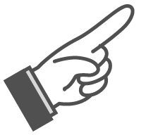
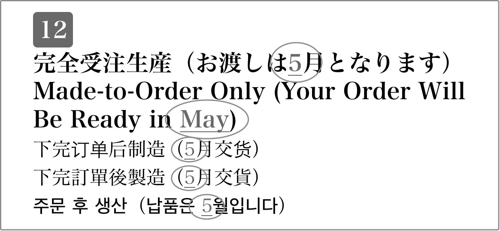

| [音声DL付]みんなの接客英語 | |
| 広瀬直子 | |
| (2015) | |
参照項目から元の箇所に戻るには、お使いのビューワーの仕様に従ってください。または一旦目次を表示し、戻りたい箇所の近くの見出しをタップして戻ってください。
はじめに
外国からのお客様が増え続けているだけでなく、2020年の東京オリンピック開催を控えた今の日本では、接客業において英語でのコミュニケーション力を伸ばすことは切実な課題です。もちろん、お客様は英語圏の人だけではありませんが、一番多くの人に、最大公約数的に通じるのは国際語である英語です。
そんなニーズに応え、本書は、接客業の現場の皆さんの生の声を最大限に生かし、皆が使える・使いたい接客英語をまとめました。飲食業や販売業などに従事する3,000人以上の方に対し大規模なアンケートやインタビューを実施しました。外国からのお客様に接する際、英語が出てこなくて困ったことや、「こんな風に言えたらもっと良いサービスができるのに」と現場スタッフが思った経験が、フレーズ選定のベースになっています。
私はカナダのトロントに暮らしていますが、日本を旅行してきたというカナダ人との会話でよく聞くことに「伝統文化が素晴らしい」「清潔」「製品が良質」の他、「日本人は親切で丁寧」「サービスが良い」という言葉があります。このように、外国の方が日本人の対応に好印象を持つのは、接客業に従事している皆さんのおかげに他なりません。皆さんは、外国人のお客様に日本の「おもてなし」スピリットを紹介する最前線にいるのです。そこで英語が使えたら、その心はもっとスムーズに相手に伝わるようになるでしょう。
本書は、上級の単語や表現をできるだけ避け、接客業の皆さんが使いやすい英語とは何かを最大限に考慮して書きました。肩の凝るような難しい英語はありませんから、ぜひ気軽に使ってみてください。緊張して身構える必要はありません。また、発音や文法が完璧でなくてもまったく構いません。要は通じるかどうかなのです。何よりも大切なのは伝えたいという誠意です。本書のフレーズに加え、手を使っても足を使っても、絵を描いても字を書いても構いません。そうしているうちに、学校では英語が苦手だった人が、自分には意外なコミュニケーション能力があるんだ、と気付くこともあるでしょう。人とコミュニケーションが取れる喜びは、他には代えがたい幸福感をもたらしてくれるものでもあります。
この本が皆さんによる日本と世界の交流に少しでも役に立てるのなら、著者としてそれ以上の幸せはありません。気に入って使いたいフレーズを1つでも2つでも見つけて、活用していただけることを願っています。最後に、本書のために大規模なアンケートを実施し、読者の声に隅々まで応えるべく、中国語や韓国語の翻訳まで実現してくださったアルクの編集部に心よりお礼を申し上げます。
2015年5月、トロントにて
広瀬 直子
目 次
第1章
まずはここから覚える
会計1金額を伝える
会計2支払い方法
会計3お金を受け取る・渡す
会計4クレジットカード
第2章
お客様の心をつかむ
事例1ファストフード店・カフェ
事例2和食店
事例3居酒屋
事例4バー
第3章
日本ならではの心遣いが光る
事例1衣料品店
事例2宝飾品店
事例3スーパー・コンビニ
事例4家電量販店
事例5雑貨店・土産物屋
事例6化粧品店
事例7空港免税店
語彙その他の褒め表現 /（衣料品の）特徴・質感 /宝石 /日本の野菜・果物 /肉の種類 /日本の土産物 /化粧品 /（化粧品の）効能・特徴
第4章
楽しい思い出を作っていただく
事例1ツアー
事例2遊園地
事例3美術館・博物館・劇場
特講入場料
事例4エステ・マッサージ店
事例5美容院
第5章
備えあれば憂いなし
第6章
トイレ、最寄り駅の場所もしっかり説明
説明例道案内
付録
英・中・韓 完全対応
無料ダウンロード音声、
ダウンロード特典について
本書に対応する音声および付録のワードファイルは、すべて無料でダウンロードしていただけます。下記URLにアクセスし、『みんなの接客英語』を選択、フォームに必要事項をご記入の上送信いただくと、ダウンロードページURLのご案内メールが届きます。
まずはこちらへアクセス！
ALC Download Center
ダウンロードセンター
http://www.alc.co.jp/dl/
（2015年6月時点の情報。今後詳細が変更になる可能性があります）
① 「ダウンロードリスト」の「英語」の中から、「みんなの接客英語 電子書籍版」をクリック。
② 申し込みフォームに必要事項をご記入の上送信。
③ メールで「ダウンロードページURL」の案内が届きます。
④ 届いたURLにアクセスして、圧縮ファイルをダウンロードしてください。
ダウンロード音声ファイルについて
圧縮ファイルを解凍ソフトで展開の上、iTunesなどの音声再生ソフトで取りこんでご利用ください。音声再生ソフトでのファイルの取り込み方法や携帯音楽プレーヤーでの利用方法については、ソフトやプレーヤーに付属するマニュアルでご確認ください。
音声ファイルは、音声再生ソフトで次のように表示されます。
出版社名（アーティスト名）：「ALC PRESS INC.」と表示。
書名（アルバム名）：『みんなの接客英語』
ダウンロードした音声のトラック名は
DL［01］のように、［トラック番号］のルールで表示されます。本書の該当のトラック番号を確認して再生し、学習してください。
ダウンロード特典について
付録のテキストを記載したワードファイルが、無料でダウンロードできます。思い思いのテンプレートにテキストをコピーし、自由にご活用ください。
本書の構成
本書は、接客業全般で共通して使われるフレーズを集めた第1章、その共通の枠ではくくれないものを、大きく4つに分けて整理した第2～5章、お客様に求められる機会が多い道案内をテーマにした第6章、そして、付録（貼り紙・POP例文集）から成り立っています。
接客英語をイチから勉強したい人は、まず第1章を読み、その後、自らの業務に関係する章を読み進めてください。また、業務に直接関係ない章からも言い回しのヒントが得られる可能性があるので、余力があればぜひ他の章にも目を通すことをお薦めします。必要なフレーズを直接探したい人は、目次や巻末の索引を活用しましょう。
場面
接客の流れに合わせて進んでいきます。それぞれの場面で汎用的に使えるフレーズを紹介し、さらに、特定の業種でよく使われるフレーズは最後に事例としてまとめて紹介しています。また、場面に関連して押さえておきたい単語のリスト、その他、コラム、会話例も適宜用意しています。
音声トラック名
見出しフレーズ、単語リスト、会話例の英語はすべて、無料でダウンロードしていただけます。本書では、DL01 のように、ダウンロードした音声と同じトラック名で表示しています。該当のトラックを再生して学習してください。
フレーズ
さまざまな企業で接客業に従事されている方へリサーチを行った結果を基に、「本当に言いたい」フレーズを選定しています。必要に応じて、灰色で示されている部分を入れ替えて活用しましょう。
ルビ（北米標準英語を基準）
フレーズには、カタカナでルビを振っています。英語の原音に近い発音ができるよう工夫していますが、あくまで目安として、英語の発音記号が読める方は辞書で調べるよう心掛けてください。また、ネイティブスピーカー間でも出身国や地域、話者のクセなどによって発音は変わります。
備考
内容によって、３種類のマークが使い分けられています。
おもてなし
文化背景の違うお客様に接する時のコツ、日本人らしい心遣いを英語で表現する方法などをまとめています。お客様に、ご帰国の際に良い思い出を持ち帰っていただけるよう活用してください。
注意
フレーズを使う上で気を付けてほしいこと、日本人が間違えやすいポイントなどについて整理しています。お客様との間で生じやすい誤解やトラブルも未然に防げるようになります。

アドバイス
フレーズの補足説明や関連表現、その他接客時に役立つさまざまな内容を取り上げています。
制作協力
本書を制作するに当たり、多くの企業、団体の皆様にご意見を頂きました。
残念ながら、そのすべてのお名前の掲載はかないませんでしたが、ご協力くださった全員に、この場を借りて厚く御礼申し上げます。
【飲食業】
● 養老乃瀧（養老乃瀧株式会社）
http://www.yoronotaki.co.jp/
● HUB BRITISH PUB | 82 ALE HOUSE（株式会社ハブ）
http://www.pub-hub.com/
● SUBWAY（日本サブウェイ株式会社）
http://www.subway.co.jp/
【販売業】
● 株式会社ビックカメラ
http://www.biccamera.com/
● ADIEU TRISTESSE（株式会社ビギ）
http://www.adieu-tristesse.jp/
● ANA DUTY FREE SHOP（全日空商事デューティーフリー株式会社）
http://www.anadf.com/
● Fa-So-La成田空港免税店（株式会社NAAリテイリング）
http://www.fasola.jp/
【宿泊・レジャー・美容業、医療業など】
● 琵琶湖・瀬田川畔料亭 新近江別館
http://www.shin-oumi.jp/
● リッチモンドホテル（アールエヌティーホテルズ株式会社）
http://www.richmondhotel.jp/
● 江戸東京博物館
http://www.edo-tokyo-museum.or.jp/
● 東京ドームシティ アトラクションズ（株式会社東京ドーム）
http://at-raku.com/
● 美容室Paddle
http://www.paddle-link.com/
● fou HAIR SALON
http://www.fouhair.com/
● 成城スキンケアクリニック
http://www.seijo-skincare.com/
【アンケート実施】
● LINE毎日英会話
（LINE ID: @linedailyenglish）
来店したお客様を迎える
DL001
（店に入ってきたお客様に）いらっしゃいませ。
Hello,sir /ma'am.
ヘロウ、サー／マァム
sirは男性、ma'amは女性への丁寧な呼び掛けで、特に年配のお客様に対して使います。若いお客様への対応やカジュアルな店舗における接客では、Hello. だけで構いません。
どうぞお入りください。
Please come in.
プリーズ カム イン
当店のご利用は初めてですか？
Is this your first time here?
イズ ディス ヨア ファーッス タイム ヒア？
何かお伺いしましょうか？
May I help you?
メイ アイ ヘゥピュー？
店に入ってきたお客様が店員の対応を待っていそうな時に使う表現です。そのため、日本語の「いらっしゃいませ」のシチュエーションでは使えない場合もあります。
見るだけでもどうぞ。
Please feel free to look around.
プリーズ フィーゥ フリー トゥ ルック アラウンド
よく言うひとこと
DL002
かしこまりました。
Certainly.
サートゥンリ
お客様のご依頼やご注文に応じる時に使える、Yes.やOK. よりも丁寧な言い方です。すぐ口から出せるようにしておきましょう。
ご案内します。
Could you follow me?
クッジュー フォロウ ミー？
直訳は「私の後についてきてくださいますか？」。英語の案内が苦手でも、このフレーズで乗り切れます。Please follow me. と言っても構いません。
こちらです。
This way.
ディス ウェイ
手のひらを上にして、方角を指し示しながら言いましょう。「あちらです」ならThat way.（ダァッ ウェイ）です。
すぐにお持ちします。
I'll get it right away.
アイゥ ゲテッ ライタウェイ
確認いたします。
Let me check.
レッ ミー チェク
お客様に何かを聞かれたけれど即座に答えられない場合は、このように述べましょう。
少々お待ちください。
Just a minute, please.
ジャスタ ミニッ、プリーズ
電話ではHold on, please.（ホウゥドン プリーズ）もよく使われます。
お待たせしました。
Thank you for waiting.
サンキュー フォー ウェイティン
お待たせして申し訳ございません。
Sorry to keep you waiting.
ソーリ トゥ キーピュー ウェイティン
いかがですか？
How is it?
ハウ イズ イッ？
「お気に召しましたか？」や試着時の「着心地はいかがですか？」に当たる表現。How do you like it?（ハウ ドゥ ユー ライキッ?）も同じ意味でよく使われます。
（「～していいか」と聞かれた時の）どうぞ。
Go ahead.
ゴウ アヘッド
（品物を渡したり料理を出したりする時の）どうぞ。
Here yougo /are.
ヒア ユーゴウ／アー
どういたしまして。
You are welcome.
ユー アー ウェゥカム
日本ではチップを払う習慣はありません。
There is no tipping in Japan.
デア イズ ノウ ティッピン イン ジャパン
お釣りはご旅行のために取っておいてください。
Keep the change for your trip.
キープ ダ チェインジ フォー ヨア チュッリプ
チップの受け取りを断る際に使える、気の利いた表現です。
聞き取れない・わからない
DL003
何とおっしゃいましたか？
I beg your pardon?
アイ ベギョア パードン？
Pardon me?（パードン ミー？）、Pardon?（パードン？）でも構いません。いずれも文末を上げ調子で読むのがポイントです。
もう一度おっしゃってくださいますか？
Could you say that again?
クッジュー セイ ダァッ アゲン？
もう少しゆっくり話していただけますか？
Could you speak a little more slowly?
クッジュー スピーク ア リトゥ モア スロウリ？
日本語で何と言いますか？
Do you know the Japanese word for it?
ドゥ ユー ノウ ダ ジャパニーズ ワード フォー イッ？
スペルをお願いできますか？
Could you spell that?
クッジュー スペゥ ダァッ？
注文が聞き取れなかった時、こう聞けば、例えばsalmonなら、お客様はs-a-l-m-o-nと答えてくれるはずです。紙とペンをお渡ししても良いでしょう。
ここに書いてくださいますか？
Could you write that down here?
クッジュー ライッ ダァッ ダウン ヒア？
英語の話せる者を連れてまいります。
Let me call someone who speaks English.
レッミー コーゥ サムワン フー スピークス イングリシュ
申し訳ありませんが、英語を話せる者がおりません。
Sorry, there is no one here who speaks English.
ソーリ、デア イズ ノウ ワン ヒア フー スピークス イングリシュ
レジに案内する
DL004
あちらでお会計をお願いします。
Please pay over there.
プリーズ ペイ オウヴァー デア
飲食店などでテーブルに着席したまま支払うことに慣れているお客様もいらっしゃいますので、覚えておきましょう。
こちらのカゴをお使いください。
Please use this basket.
プリーズ ユーズ ディス バスケッ
空箱をレジにお持ちください。
Please take the empty package to the cashier.
プリーズ テイッ ディ エンプティ パァキジ トゥ ダ キャシアー
高額商品や一部の医薬品を空箱にして陳列するのは、日本ならではの習慣です。不思議に思ったお客様にはFor security purposes.（防犯目的です／フォー セキュリティ パーパスィズ）やFor legal reasons.（フォー リィガゥ リーズンズ／法律上の理由のためです）などと告げてください。
実物はスタッフにお尋ねください。
Please ask the staff for the actual product.
プリーズ アスク ダ スタァフ フォー ディ アクチュワゥ プロダック
列に並んでお待ちください。
Please wait in line.
プリーズ ウェイティン ライン
こちらの列にお移りいただけますか？
Could you move to this line?
クッジュー ムーヴ トゥ ディス ライン？
列の最後尾にお並びください。
Please go to the end of the line.
プリーズ ゴウ トゥ ディ エンドヴ ダ ライン
お次にお待ちのお客様、こちらのレジへどうぞ。
Next customer, please.
ネックス カスタマー、プリーズ
列に並んでいるお客様に向けて、手を挙げてこう言いましょう。Next, please.（こちら参照）やNext customerto this cashier, please. でも構いません。
このフロアの商品は、こちらでご精算くださいませ。
Please pay here for products on this floor.
プリーズ ペイ ヒア フォー プロダクツ オン ディス フロア
会計1
金額を伝える
DL005
合計はこちらになります。
Here is the total.
ヒア イズ ダ トウタゥ
数字を英語で読むのが難しい場合は、レジに表示される金額を見ながらこう言いましょう。
税込みで1,080円になります。
That's1,080 yen including tax.
ダァツ ワン サウザンド エイティ イェン インクルーディン タァクス
金額の読み方はコラムを参照してください。
こちらは税抜きの表示です。
Tax is not included here.
タァクス イズ ノッ インクルーディッド ヒア
税抜き表示の商品をレジに通した際、税込みの支払額が現れ、そこで「値段が違う」と言われることがあります。その時には、値札の金額を指しながらこう言いましょう。
合計3点でよろしいですか？
That's a total ofthree items, OK?
ダァツ ア トウタロヴ スリー アイテムズ、オウケイ？
以上でよろしいですか？
Is this everything?
イズ ディス エヴリスィン？
540円です。
That's540 yen.
ダァツ ファイヴ ハンヂュレド フォーティ イェン
5点で1,000円です。
That's1,000 yen forfive items.
ダァツ ワン サウザンド イェン フォー ファイヴ アイテムズ
レジ袋は1枚5円ですが、ご利用になりますか？
Plastic bags are5 yen each. Would you like one?
プラァスティッ バァグズ アー ファイヴ イェン イーチ。ウッジュー ライッ ワン？
サービス料10％が含まれております。
A10 percent service charge is already included.
ア テン パーセンッ サーヴィス チャージ イズ オーゥレディ インクルーディッド
勘定にサービス料が含まれている場合、欧米でもチップは不要です。もし置いていかれた場合は、こう言ってお返しすると良いでしょう。
金額の読み方
値段を英語で伝えられるようになるためには、英語では「数字を3桁の単位で区切る」というルールを理解しておく必要があります。次を見てください。
英語では、1,000以上になると、3桁ごとに新しい単位が出てきています。1,000は1千、10,000は10千、100,000は100千で、1,000,000となって初めて単位がmillionに変わります。
つまり、英語では、1,000以上はコンマの前の数字を読んで、その後にthousandといった単位を付けることになります。練習と慣れで皆さんもスムーズに言えるようになるはずです。
例
990円 ninehundred ninety yen
3,070円 threethousand seventy yen
30,875円 thirtythousand eighthundred seventy five yen
129,800円 one hundred twenty ninethousand eighthundred yen
2,100,300円 twomillion one hundredthousand threehundred yen
また、口語では100の単位を使う人がいます。1900はone thousand nine hundredですが、略式にnineteen hundredと読むのです。これは本来は西暦を言う時の読み方ですが、金額を言うのに使う人もいるので覚えておくと良いでしょう。
会計2
支払い方法
DL006
お会計はご一緒ですか？ 別々ですか？
Would you like to pay together or separately?
ウッジュー ライッ トゥ ペイ トゥギャダー オア セパレッリ？
「（ホテルの）部屋付けにしますか？」なら、Would you like me to charge this to your room?（ウッジュー ライッ ミー トゥ チャージ ディス トゥ ヨア ルーム？）です。
お会計は現金ですか？ カードですか？
Would you like to pay by cash or credit card?
ウッジュー ライッ トゥ ペイ バイ キャシュ オア クレディッ カード？
お支払い方法は現金のみとなっております。
We accept cash only.
ウィ アクセップ キャシュ オウンリ
円でお支払いになりますか？ 米ドルですか？
Would you like to pay in Japanese yen orU.S. dollars?
ウッジュー ライッ トゥ ペイ イン ジャパニーズ イェン オア ユーエス ドラーズ？
U.S. dollars（米ドル）との対比でJapanese yenと言っていますが、yenだけでももちろん通じます。
米ドルはお使いいただけません。日本円とクレジットカードのみ使えます。
We don't acceptU.S. dollars. We only accept Japanese yen or credit cards.
ウィ ドウンッ アクセップ ユーエス ドラーズ。ウィ オウンリ アクセップ ジャパニーズ イェン オア クレディッ カーズ
日本円、ドル、カードの併用払いができます。
You can use a combination of Japanese yen,U.S. dollars andcredit cards to pay.
ユー キャン ユーズ ア コンビネイシャン オヴ ジャパニーズ イェン、ユーエス ドラーズ アン クレディッ カーズ トゥ ペイ
お釣りは日本円になります。
The change is in Japanese yen.
ダ チェインジ イズ イン ジャパニーズ イェン
電子マネーは扱っておりません。
We don't accept electronic money.
ウィ ドウンッ アクセップ エレクチュローニッ マニー
会計3
お金を受け取る・渡す
DL007
10,000円お預かりします。
Ten thousand yen, thank you.
テン サウザンド イェン、サンキュー
北米では、何も言わずに片手でお金を受け取っても失礼ではありませんが、このように言って両手で受け取ることで丁寧さを演出できるでしょう。
4,550円のお返しになります。
Your change is4,550 yen.
ヨア チェインジ イズ フォー サウザンド ファイヴ ハンヂュレド フィフティ イェン
大きい方（紙幣）から4,000円のお返しです。そして、残り550円のお返しです。
Here are the bills for4,000 yen first. And the coins for550 yen.
ヒア アー ダ ビゥズ フォー フォー サウザンド イェン ファーッス。アン ダ コインズ フォー ファイヴ ハンヂュレド フィフティ イェン
お釣りを返す時、お札も硬貨も1度に渡す国が多いので、こうすることで丁寧な印象を与えることができます。
（数えながら）千、2千、3千、4千円、そして残り550円のお返しです。
That'sone, two, three, four thousand, and the coins for550 yen.
ダァツ ワン トゥー スリー フォー サウザンド、アン ダ コインズ フォー ファイヴ ハンヂュレド フィフティ イェン
お釣りの返し方のバリエーションの１つ。お札を1枚ずつ数えていくやり方は間違いが起きにくいので、英語で会計をする場合にお薦めです。
お釣りです。
Here is your change.
ヒア イズ ヨア チェインジ
ちょうど頂きます。
That's exactly right.
ダァツ イグザッリ ライッ
お客様から請求額ぴったりの金額を受け取った時に言う表現。rightは「正確な、合っている」という意味です。
100円多いです。
That's100 yen too much.
ダァツ ワン ハンヂュレド イェン トゥー マッチ
あと100円足りません。
Another100 yen, please.
アナダー ワン ハンヂュレド イェン、プリーズ
細かいお金はございますか？
Do you have anything smaller?
ドゥ ユー ハァヴ エニスィン スモーラー？
小銭をお取りしましょうか？
Would you like me to use your small change?
ウッジュー ライッ ミー トゥ ユーズ ヨア スモーゥ チェインジ？
日本の硬貨に不慣れでついついお札を出してしまうお客様もいます。小銭を出しあぐねていらっしゃる方には、こう声をお掛けすると親切です。
お釣りが小銭ばかりですみません。
Sorry, I can only give you small change.
ソーリ、アイ キャン オウンリ ギヴ ユー スモーゥ チェインジ
英語圏でこのように謝ることは非常に少ないですが、お客様に細やかな心遣いを示すことができるかもしれません。
すみません、今お釣りが切れています。
Sorry, we don't have any change right now.
ソーリ、ウィ ドウンッ ハァヴ エニー チェインジ ライッ ナウ
会計4
クレジットカード
DL008
VisaとMasterがご利用いただけます。
We accept Visa and MasterCard.
ウィ アクセップ ヴィーザ アン マァスターカード
ご一括払いでよろしいですか？
Is a one-time payment OK?
イズ ア ワンタイム ペイメンッ オウケイ？
外国、特に北米のお客様は一括払いのつもりで購入することがほとんどです（分割払いは、店舗で会計時に指定するのではなくカード会社との取り決めになっている場合もあります）。ですから、日常の会計では、何も聞かず一括で処理してしまって実務上問題ありません。
クレジットカードはご一括払いのみです。
You can only pay in full with a credit card.
ユー キャン オウンリ ペイ イン フゥ ウィズ ア クレディッ カード
分割払いになさいますか？
Would you like to pay in installments?
ウッジュー ライッ トゥ ペイ イン インストーゥメンツ？
高額商品をご購入のお客様にはこう聞いても構いません。分割払いを希望のお客様は、Three (times), please.（3回払いでお願いします）などと答えます。
お買い上げ3,000円未満ですので、サインはご不要です。
We don't need your signature because your payment is less than3,000 yen.
ウィ ドウンッ ニード ヨア スィグナチャー ビコーズ ヨア ペイメンティズ レス ダン スリー サウザンド イェン
クレジットカードは、1,000円未満のご購入にはご利用いただけません。
The amount has to be at least1,000 yen to use a credit card.
ディ アマウンッ ハァス トゥ ビー アッ リースッ ワン サウザンド イェン トゥ ユーズ ア クレディッ カード
手数料は掛かりません。
There is no handling charge.
デア イズ ノウ ハンドリン チャージ
こちらにカードを通して／入れてください。
Pleaseswipe /insert your card here.
プリーズスワイプ／インサーッ ヨア カード ヒア
暗証番号を入力してください。
Please enter your PIN.
プリーズ エンター ヨア ピン
入力し終わった後の「Enterボタンを押してください」は、Please press Enter.（プリーズ プレス エンター）です。なお、PINはpersonalidentificationnumber（個人識別番号）を略したものです。
こちらにサインをお願いします。
Please sign here.
プリーズ サイン ヒア
すみません、こちらの会社のクレジットカードは使えません。
Sorry, we don't accept this company's credit card.
ソーリ、ウィ ドウンッ アクセップ ディス カンパニーズ クレディッ カード
自国で使えるカードがなぜここで使えないのか、いぶかしがるお客様もいらっしゃいます。できれば理由と併せて、申し訳なさそうに伝えた方が良いでしょう。
こちらのカードは、磁気不良で使用できません。
We cannot accept this card because the magnetic strip has been damaged.
ウィ キャノッ アクセップ ディス カード ビコーズ ダ マァグネティッ スチュリップ ハァズ ビン ダァミジド
こちらのカードは、期限切れで使用できません。
We cannot accept this card because it's expired.
ウィ キャノッ アクセップ ディス カード ビコーズ イッツ イクスパイアード
こちらのカードは、限度額オーバーで使用できません。
We cannot accept this card because it has maxed out.
ウィ キャノッ アクセップ ディス カード ビコーズ イッ ハァズ マァクスタウッ
他のカードはお持ちですか？
Do you have another credit card?
ドゥ ユー ハァヴ アナダー クレディッ カード？
カード会社に確認なさいますか？
Would you like to call the credit card company to check?
ウッジュー ライッ トゥ コーゥ ダ クレディッ カード カンパニー トゥ チェク？
こう言ってカード会社に電話をし、オペレーターとの通話はお客様にお任せすると良いでしょう。
会計5
ポイントカード・スタンプカード
DL009
ポイントカードはお持ちですか？
Do you have our point card?
ドゥ ユー ハァヴ アワ ポインッ カード？
ポイントカードをお作りしましょうか？
Would you like to make a point card?
ウッジュー ライッ トゥ メイク ア ポインッ カード？
この用紙に必要事項をご記入いただけますか？
Could you fill out this form?
クッジュー フィラウッ ディス フォーム？
有効期限はありません。
It doesn't expire.
イッ ダズンッ イクスパイアー
入会金・年会費は無料です。
There are no initial or annual fees.
デア アー ノウ イニシャゥ オア アァニュワゥ フィーズ
ポイントをお使いになりますか？ 現在、50ポイントございます。
Would you like to use your points? You have50 points right now.
ウッジュー ライッ トゥ ユーズ ヨア ポインツ？ ユー ハァヴ フィフティ ポインツ ライッ ナウ
切手・ハガキのご購入はポイント加算対象外です。
You don't get points forstamps orpostcards.
ユー ドウンッ ゲッ ポインツ フォー スタァンプス オア ポウッスカーズ
100円お買い上げごとに1つスタンプを押します。
You get one stamp for every100 yen.
ユー ゲッ ワン スタァンプ フォー エヴリ ワン ハンヂュレド イェン
「1ポイントが貯まります」ならYou get one point.（ユー ゲッ ワン ポインッ）になります。
スタンプが30個貯まると1,000円分無料となります。
You can get1,000 yen off when you have30 stamps.
ユー キャン ゲッ ワン サウザンド イェン オフ ウェン ユー ハァヴ サーティ スタァンプス
カードのご提示で5%引きになります。
You get a5 percent discount by showing your card.
ユー ゲッタ ファイヴ パーセンッ ディスカウンッ バイ ショウイン ヨア カード
会計6
レシート・領収書を発行する
DL010
レシート（領収書）はご入り用ですか？
Do you need a receipt?
ドゥ ユー ニーダ リスィーッ？
レジから出てくる「レシート」と手書きの「領収書」を使い分けるのは、日本の慣習で、英語では両方ともreceiptです。あえて「手書き」と言いたいなら、a formal business receipt（ア フォーマゥ ビズネス リスィーッ）ですが、日本在住の外国人ビジネスパーソン以外には意図は伝わりづらいでしょう。
お宛名はいかがなさいますか？
Who should it be addressed to?
フー シュッディッ ビー アヂュレス トゥ？
「ただし書きはどういたしますか」は、What should I write in your purchase details?（ワッ シュッダイ ライッ イニョア パーチャス ディテイゥズ？）ですが、どちらもやはり日本の慣習のため、使う機会は非常に限られます。
カードとレシートのお返しです。
Here are your card and receipt.
ヒア アー ヨア カード アン リスィーッ
お客様控えです。
Here is your customer copy.
ヒア イズ ヨア カスタマー コピー
電話応対をする
DL011
担当者におつなぎいたします。
I'll put you through to the person in charge.
アイゥ プッチュー スルー トゥ ダ パースン イン チャージ
担当者は不在にしております。
The person in charge isn't available.
ダ パースン イン チャージ イズンタヴェイラブゥ
お名前とお電話番号をお伺いできますか？
May I have your name and phone number?
メイ アイ ハァヴ ヨア ネイム アン フォウン ナンバー？
すみません、お電話が遠いようです。
Sorry, I cannot hear you very well.
ソーリ、アイ キャノッ ヒア ユー ヴェリ ウェゥ
ペンとメモのご用意をお願いします。
Please have a pen and a piece of paper ready.
プリーズ ハァヴ ア ペン アンダ ピース オヴ ペイパー レディ
確認して、後でお電話いたします。
Let me confirm it and call you back later.
レッ ミー コンファーム イッ アン コーゥ ユー バァク レイター
お客様を見送る
DL012
（お支払いを済ませたお客様に）ありがとうございました。
Thank you for your payment.
サンキュー フォー ヨア ペイメンッ
またのお越しをお待ちしております。
We hope to see you again.
ウィ ホウプ トゥ スィー ユー アゲン
お客様がお帰りになる時、Thank you. とおっしゃることがあります。その対応としてこう言うと、好感を持っていただけます。
お気を付けて。
Please take care.
プリーズ テイッ ケア
出口までご案内します。
Let me show you the way out.
レッミー ショウ ユー ダ ウェイ アウッ
お忘れ物はございませんか？
Do you have everything?
ドゥ ユー ハァヴ エヴリスィン？
Do you have everythingwith you?（こちら参照）のようにwith youを補っても構いません。どちらも同じ意味です。
（店を離れるのを呼び止めて）お客様！
Excuse me,sir /ma'am!
イクスキューズ ミー、サー／マァム！
customerは「客」という意味ですが、お客様本人に対してcustomerと呼ぶことはありません。相手が年配のお客様なら、Excuse me, の後にsir（男性に対して）やma'am（女性に対して）を付けると良いでしょう。
こちらの傘はお客様のものではございませんか？
Isn't thisumbrella yours?
イズンッ ディス アンブレラ ヨアーズ？
タクシーをお呼びいたしましょうか？
Shall I call you a taxi?
シャライ コーゥ ユー ア タァクスィ？
楽しい1日をお過ごしください。
Have a greatday.
ハァヴ ア グレイッ デイ
dayの部分は、時間によってafternoon（アフターヌーン／午後）、evening（イーヴニン／夕べ）などとも言い換えてください。
今後ともよろしくお願いします。
We look forward to your next visit.
ウィ ルック フォーワーッ トゥ ヨア ネックス ヴィズィッ
忘れ物の対応をする
DL013
どこに置き忘れたか、覚えていらっしゃいますか？
Do you remember where you left it?
ドゥ ユー リメンバー ウェア ユー レフテッ？
どのようなものですか？
What does it look like?
ワッ ダズィッ ルッ ライク？
「色」「大きさ」などを詳しく答えてもらいたい時に使いましょう。
そういったものはこちらには届いておりません。
We haven't received anything like that here.
ウィ ハァヴンッ リスィーヴド エニスィン ライッ ダァッ ヒア
お電話番号とご住所を教えていただけますか？
May I have your phone number and address?
メイ アイ ハァヴ ヨア フォウン ナンバー アン アヂュレス？
your phone number and addressの代わりにyour contact information（ヨア コンタック インフォメイシャン／ご連絡先）と言っても構いません。
見つかり次第ご連絡いたします。
We'll contact you as soon as we find it.
ウィゥ コンタァクッチュー アッスーナズ ウィ ファインディッ
お届けがあります。
Your item has been brought in.
ヨア アイテム ハァズ ビン ブローッ イン
こちらでしょうか？
Is this yours?
イズ ディス ヨアーズ？
身分証をお見せいただけますか？
May I see some ID?
メイ アイ スィー サム アイディー？
some IDの代わりにyour passport（ヨア パァスポーッ）と言っても構いません。
ご本人確認のため、お名前を教えていただけますか？
Could you tell me your name for verification?
クッジュー テゥ ミー ヨア ネイム フォー ヴェリフィケイシャン？
営業日・営業時間を伝える
DL014
営業時間は午前10時から午後8時30分です。
We are open from10 a.m. to8:30 p.m.
ウィ アー オウプン フロム テン エイエム トゥ エイッ サーティ ピーエム
土曜は午後8時まで、日曜は午後9時まで営業しております。
We are open until8 p.m. on Saturdays and9p.m. on Sundays.
ウィ アー オウプン アンティゥ エイッ ピーエム オン サァタデイズ アン ナイン ピーエム オン サンデイズ
ご入店は午後10時までとさせていただいております。
We only accept customers until10p.m.
ウィ オウンリ アクセップ カスタマーズ アンティゥ テン ピーエム
24時間営業です。
We are open 24 hours a day.
ウィ アー オウプン トゥウェンティ フォー アワーズ ア デイ
年中無休です（毎日営業）。
We are open every day of the year.
ウィ アー オウプン エヴリ デイ オヴ ダ イアー
年中無休です。
We are open 24/7.
ウィ アー オウプン トゥウェンティ フォー セヴン
年中無休で、さらに24時間営業であることを意味します。
定休日は日曜日と祝祭日です。
We are closed on Sundays and national holidays.
ウィ アー クロウズドン サンデイズ アン ナショナゥ ホリデイズ
定休日は毎月第4月曜日です。
We are closed on the4thMonday of every month.
ウィ アー クロウズドン ダ フォース マンデイ オヴ エヴリ マンス
We are closed on ... の代わりに、Our regular holiday is ...（アワ レギュラー ホリデイ イズ...）と言っても構いません。
今月は15日以外、休まず営業しております。
We are open throughout this month except for the15th.
ウィ アー オウプン スルーアウッ ディス マンス イクセップ フォー ダ フィフティーンス
12月31日から1月3日まで休業しております。
We are closed fromDecember 31st toJanuary 3rd.
ウィ アー クロウズド フロム ディセンバー サーティファーッス トゥ ジャニュウェリ サード
月・日・曜日
DL015
| ● 1月 | January (Jan) | ジャニュウェリ |
| ● 2月 | February (Feb) | フェブュウェリ |
| ● 3月 | March (Mar) | マーチ |
| ● 4月 | April (Apr) | エイプリゥ |
| ● 5月 | May | メイ |
| ● 6月 | June (Jun) | ジューン |
| ● 7月 | July (Jul) | ジュライ |
| ● 8月 | August (Aug) | オーガッス |
| ● 9月 | September (Sep) | セプテンバー |
| ● 10月 | October (Oct) | オクトウバー |
| ● 11月 | November (Nov) | ノウヴェンバー |
| ● 12月 | December (Dec) | ディセンバー |
| ● 1日 | 1st (first) | ファーッス |
| ● 2日 | 2nd (second) | セカンド |
| ● 3日 | 3rd (third) | サード |
| ● 4日 | 4th (fourth) | フォース |
| ● 5日 | 5th (fifth) | フィフス |
| ● 6日 | 6th (sixth) | スィクス |
| ● 7日 | 7th (seventh) | セヴンス |
| ● 8日 | 8th (eighth) | エイス |
| ● 9日 | 9th (ninth) | ナインス |
| ● 10日 | 10th (tenth) | テンス |
| ● 11日 | 11th (eleventh) | イレヴンス |
| ● 12日 | 12th (twelfth) | トゥウェゥフス |
| ● 13日 | 13th (thirteenth) | サーティーンス |
| ● 14日 | 14th (fourteenth) | フォーティーンス |
| ● 15日 | 15th (fifteenth) | フィフティーンス |
| ● 16日 | 16th (sixteenth) | スィクスティーンス |
| ● 17日 | 17th (seventeenth) | セヴンティーンス |
| ● 18日 | 18th (eighteenth) | エイティーンス |
| ● 19日 | 19th (nineteenth) | ナインティーンス |
| ● 20日 | 20th (twentieth) | トウェンティエス |
| ● 21日 | 21st (twenty-first) | トウェンティファーッス |
 |
|
（略） |
| ● 30日 | 30th (thirtieth) | サーティエス |
| ● 31日 | 31st (thirty-first) | サーティファーッス |
| ● 月曜日 | Monday （Mon） | マンデイ |
| ● 火曜日 | Tuesday （Tue) | テューズデイ |
| ● 水曜日 | Wednesday (Wed) | ウェンズデイ |
| ● 木曜日 | Thursday (Thu) | サーズデイ |
| ● 金曜日 | Friday (Fri) | フライデイ |
| ● 土曜日 | Saturday (Sat) | サァタデイ |
| ● 日曜日 | Sunday (Sun) | サンデイ |
※22〜29日はtwentyの後に2日（second）〜9日（ninth）を続けます。
来店したお客様に
DL016
何名様ですか？
How many people are you?
ハウ メニー ピープゥ アー ユー？
Two (people). （トゥー［ピープゥ］／2人です）、 Three of us. （スリー オヴ アス／3人です）、Two adults, two children.（トゥー アダルツ、トゥー チゥドレン／大人2人、子供2人です）、A table for five, please.（ア テイブゥ フォー ファイヴ、プリーズ／5人用のテーブルをお願いします）といった回答が想定されます。
ただ今お席の準備をいたします。
We'll get your table ready.
ウィゥ ゲッチョア テイブゥ レディ
テーブル席とカウンター席のどちらがよろしいですか？
Would you like a table or a counter seat?
ウッジュー ライカ テイブゥ オア ア カウンター スィーッ？
見えるところにあれば、手で指し示しながら言いましょう。「座敷席」は、a tatami area（ア タタミ エリア）です。
コートをお預かりしましょうか？
Shall I take yourcoat?
シャライ テイキョア コウッ？
coatの部分は、状況に応じてumbrella（アンブレラ／傘）、bags （バァグズ／かばん、荷物）などと置き換えて使いましょう。
ご予約はされていますか？
Do you have a reservation?
ドゥ ユー ハァヴ ア レザヴェイシャン？
ご予約のお名前をお伺いできますか？
What name is the reservation under?
ワッ ネイム イズ ダ レザヴェイシャン アンダー？
お客様の回答は、The reservation is under Lester. （ダ レザヴェイシャン イズ アンダー レスター／レスターの名で予約しています）となります。
本日は予約のお客様でいっぱいです。
Our reservations are full today.
アワ レザヴェイシャンズ アー フゥ トゥデイ
2時間制ですが、よろしいですか？
We have a2-hour time limit. Is that OK?
ウィ ハァヴ ア トゥー アワー タイム リミッ。イズ ダァッ オウケイ？
午後11時で閉店ですがよろしいですか？
We close at11p.m. Is that OK?
ウィ クロウズ アッ イレヴン ピーエム。イズ ダァッ オウケイ？
閉店が近くなって駆け込みでいらっしゃるお客さんには、閉店までの時間をお伝えしておくと、万一のトラブルを避けられます。
本日の営業時間は終了しました。
We are closed for today.
ウィ アー クロウズド フォー トゥデイ
席に案内する
DL017
お好きなお席へどうぞ。
Please sit anywhere you like.
プリーズ スィッ エニウェア ユー ライク
sitを「シッ」と発音しないように気を付けましょう。shit（糞を意味する俗語）のように聞こえる可能性があります。
奥のお席にどうぞ。
Please have the table at the back.
プリーズ ハァヴ ダ テイブゥ アッ ダ バァク
「手前の」なら、at the front（アッダ フランッ）、「窓際の」はby the window（バイ ダ ウィンドウ）、「カウンターの」はat the counter（バイ ダ カウンター）と言い換えてください。
お席は別れても大丈夫ですか？
Would you mind sitting separately?
ウッジュー マインッ スィッティン セパレッリ？
相席になりますが、よろしいですか？
Would you mind sharing a table?
ウッジュー マインッ シェアリン ア テイブゥ？
直訳すると「相席を気にされますか？」なので、相席OKの場合は、No, I don't mind. のような否定形の返事になります。
カウンター席でもよろしいですか？
Is a counter seat all right?
イズ ア カウンター スィーッ オーゥ ライッ？
混んできましたら、お席の移動のご協力をお願いします。
We may have to move you when it gets crowded.
ウィ メイ ハァフ トゥ ムーヴ ユー ウェン イッ ゲッツ クラウディッド
こちらの席でよろしいですか？
Is this seat fine with you?
イズ ディス スィーッ ファイン ウィズ ユー？
喫煙席と禁煙席、どちらがよろしいですか？
Would you like the smoking or nonsmoking section?
ウッジュー ライッ ダ スモウキン オア ノンスモウキン セクシャン
喫煙席はsmoking seat、禁煙席はnonsmoking seatでも通じますが、これらはどちらかというと交通機関の座席でよく使われる語です。
喫煙席しか空いておりません。
We only have tables in the smoking section right now.
ウィ オウンリ ハァヴ テイブゥズ イン ダ スモウキン セクシャン ライッ ナウ
海外では、喫煙席自体のない飲食店が増えています。たばこの煙を気にするお客様が多いことは念頭に置いて接客すると良いでしょう。
お履物はこちらでお脱ぎください。
Please take off your shoes here.
プリーズ テイコフ ヨア シューズ ヒア
靴はこちらの靴箱にお入れください。
Please put your shoes on this shelf.
プリーズ プチョア シューズ オン ディス シェゥフ
（熱い）おしぼりでございます。
Hereis a hot towel /are some hot towels.
ヒアイズ ア ホッ タウォゥ／アー サム ホッ タウォゥズ
冷たいおしぼりの場合は、hotをcold（コウゥド）に換えましょう。なお、日本以外では通常、お食事前におしぼりを渡す習慣はありません。渡されてキョトンとされているお客様にはThis is for wiping your hands. （ディス イズ フォー ワイピンギョア ハンズ／これは手を拭くためのものです）と説明してください。
全員おそろいですか？
Is everyone here?
イズ エヴリワン ヒア？
すぐに案内できない場合は
DL018
現在満席です。
We are full right now.
ウィ アー フゥ ライッ ナウ
30分ほどお待ちいただくと思います。
Waiting time is about30 minutes.
ウェイティン タイム イズ アバウッ サーティ ミニッツ
15分ぐらいでお席のご用意ができます。
Your table will be ready in about15 minutes.
ヨア テイブゥ ウィゥ ビー レディ イナバウッ フィティーン ミニッツ
待ち時間がどれくらいになるか、はっきりとは申し上げられません。
I cannot give you an exact waiting time.
アイ キャノッ ギヴ ユー アニグザック ウェイティン タイム
順番にご案内いたします。
Please wait in line to be served.
プリーズ ウェイティン ライン トゥ ビー サーヴド
（「何番目ですか？」に対して）お客様は5番目です。
You are5th in line.
ユー アー フィフス イン ライン
Where am I in line? （ウェア アム アイ イン ライン？／私は何番目ですか？）とお客様に聞かれた場合は、このように返答します。
こちらにお名前を書いてお待ちください。
Please write your name here and wait.
プリーズ ライッチョア ネイム ヒア アン ウェイッ
こちらに1列に並んでお待ちください。
Please make a single line here while you wait.
プリーズ メイカ スィングゥ ライン ヒア ワイゥ ユー ウェイッ
メニューをご覧になってお待ちいただけますか？
Would you like to look at the menu while you are waiting?
ウッジュー ライッ トゥ ルッカッ ダ メニュー ワイゥ ユー アー ウェイティン？
「申し訳ありませんが、英語のメニューはございません」は、Sorry, we don't have an English menu. （ソーリ、ウィ ドウンッ ハァヴ アニングリシュ メニュー）です。
英語のメニューを取ってまいりますので、お待ちください。
Please wait. I'll go and get an English menu.
プリーズ ウェイッ。アイゥ ゴウ アン ゲッタニングリッシュ メニュー
日本に不慣れなお客様の場合、メニューの英訳を見ても、その料理がどういうものなのかピンとこないことが多々あります。和食については特に、写真を添えたメニューが喜ばれます。
3名でお待ちのフルキ様、お待たせしました。
Three guests underMr. /Ms.Furuki, your table is ready.
スリー ゲスツ アンダーミスター／ミズ フルキ、ヨア テイブゥ イズ レディ
お席の準備ができましたので、ご案内いたします。
Your table is ready. Please follow me.
ヨア テイブゥ イズ レディ。プリーズ フォロウ ミー
予約の電話を受ける
DL019
お電話ありがとうございます、ABCレストラン新宿店です。フクオカヨウコが承ります。
Thank you for callingABC Restaurant, Shinjuku.Yoko Fukuoka speaking.
サンキュー フォー コーリン エイビースィー レスチュラン シンジュク。ヨウコ フクオカ スピーキン
ABC Restaurant, Shinjuku. と店の名前だけを言っても構いません。組み合わせとしてよく使われる表現に、May I help you?（メイ アイ ヘゥピュー？）があります。
ご予約はいつになさいますか？
When would you like to make your reservation for?
ウェン ウッジュー ライッ トゥ メイキョア レザヴェイシャン フォー？
土日には予約を受け付けておりません。
We don't take reservations on weekends.
ウィ ドウンッ テイッ レザヴェイシャンズ オン ウィーケンズ
確認しますので少々お待ちください。
Please hold on a moment while I check.
プリーズ ホウルド オンナ モウメンッ ワイゥ アイ チェク
申し訳ありませんが、その時間は予約がいっぱいです。
I'm sorry, but we are fully booked then.
アイム ソーリ、バッ ウィ アー フゥリ ブックト デン
何名様でしょうか？
For how many people?
フォー ハウ メニー ピープゥ？
For when and for how many people?（何月何日に何名様でしょうか？）と、日時までまとめて聞く言い方もあります。
1月31日の午後8時から、5名様のご予約ですね。合っていますか？
Your reservation is for5 people onJanuary 31st at8p.m. Is that right?
ヨア レザヴェイシャン イズ フォー ファイヴ ピープゥ オン ジャニュウェリ サーティファーッス アッ エイッ ピーエム。イズ ダァッ ライッ？
お名前とお電話番号をお伺いできますか？
May I have your name and phone number?
メイ アイ ハァヴ ヨア ネイム アン フォウン ナンバー？
復唱します。
I'll just repeat that.
アイゥ ジャッス リピーッ ダァッ
これを言った後に、お客様の名前や電話番号を述べていきます。
それでは当日お待ちしております。
We look forward to seeing you then.
ウィ ルック フォーワーッ トゥ スィーンギュー デン
電話を切る時の「失礼いたします」は、Goodbye.（グッバイ）の一言で失礼には当たりません。
予約の電話
DL020
Staff：Restaurant Japan.May I help you?
Customer：I'd like to make a reservation.
Staff：Certainly, ma'am.For when and how many people?
Customer：I'd like a table for tomorrow at 7 p.m. for two people.
Staff：I'm sorry, but we are fully booked then.
Customer：How about 8 p.m.?
Staff：That's fine. Is it OK thatwe only have tables in the nonsmoking section?
Customer：Yes, that's OK.
Staff：Would you like a table, a counter seat or a tatami area?
Customer：A tatami area, please.
Staff：We havethe chef's selection for 8,000 yen each, and that has to be ordered in advance. Would you be interested in that?
Customer：Sure.
Staff：Do you have any food preferences or allergies?
Customer：My husband is allergic to gluten.
Staff：OK, we will prepare non-gluten dishes. What about you, ma'am?
Customer：I eat anything.
Staff：Is it a special occasion?
Customer：Yes, it's our anniversary.
Staff：Noted. We'll serve you some dessertson the house.May I have your name and phone number?
Customer：My name is Alice Atwood and the phone number is 123-456-789.
Staff：Thank you.We look forward to seeing you tomorrow at 8 p.m.
店員： レストランジャパンです。お伺いします。
客： 予約をお願いします。
店員： かしこまりました。何月何日に何名様でしょうか？
客： 明日の午後7時に2名で予約したいのですが。
店員： 申し訳ありませんが、その時間は予約がいっぱいです。
客： 午後8時はどうですか？
店員： 大丈夫です。禁煙席しか空いておりませんが、よろしいですか？
客： ええ、構いません。
店員： テーブル席、カウンター席、お座敷席がございますが、いずれにいたしましょうか？
客： お座敷席でお願いします。
店員： お任せコースが1名様8,000円ですが、こちらはご予約が必要です。ご興味はありますか？
客： ええ。
店員： 食べ物のご希望、アレルギーはございますか？
客： 夫はグルテンアレルギーなんです。
店員： 承知いたしました。グルテンフリーの料理を用意いたします。奥様はいかがですか？
客： 私は何でも食べます。
店員： 何か特別の機会ですか？
客： ええ、記念日です。
店員： 承知いたしました。無料サービスでデザートをご用意いたします。お名前と電話番号をお伺いできますか？
客： 名前はアリス・アトウッドで、電話番号は123-456-789です。
店員： ありがとうございます。明日の午後8時にお待ちしております。
※太字は本書に登場したフレーズです。
店のシステムを説明する
DL021
ただ今の時間、全席禁煙です。
All tables are nonsmoking at this time.
オーゥ テイブゥズ アー ノンスモウキン アッ ディス タイム
ランチタイムは午前11時から午後3時までです。
Lunch is served from11a.m. to3p.m.
ランチ イズ サーヴド フロム イレヴン エイエム トゥ スリー ピーエム
ラストオーダーは午後9時です。
Last orders are at9p.m.
ラァッス オーダーズ アー アッ ナイン ピーエム
「お飲み物のラストオーダー」はlastdrink orders（ラァッス ヂュリンク オーダーズ）です。
お水はセルフサービスとなっております。
Please help yourself to the water.
プリーズ ヘゥピョアセゥフ トゥ ダ ウォーター
お1人様、お料理を1品以上ご注文いただいています。
There is a minimum order of one item per guest.
デア イズ ア ミニマム オーダー オヴ ワン アイテム パー ゲッス
「お飲み物を1品以上」の場合はitemをdrink（ヂュリンク）にすること。この他、こちらのPlease order ... のようなお願いの仕方もあります。
先に食券をお買い求めください。
Please buy a meal ticket first.
プリーズ バイ ア ミーゥ ティケッ ファーッス
食券システムを採用している飲食店は、海外では珍しいものです。システムがよくわからないお客様にはPlease buy your ticket from this vending machine. （プリーズ バイ ヨア ティケッ フロム ディス ヴェンディン マシーン／この自動販売機から食券をお買い求めください）と指し示すといいでしょう。
お会計はレジでお願いします。
Please pay at the cash register.
プリーズ ペイ アッ ダ キャシュ レジスター
先にお会計をお願いします。
Please pay upfront.
プリーズ ペイ アプフランッ
お食事がお済みの際は、こちらの伝票を入り口のスタッフにお渡しください。
After your meal, please give this bill to the staff at the entrance.
アフター ヨア ミーゥ、プリーズ ギヴ ディス ビゥ トゥ ダ スタァフ アッ ディ エンチュランス
お客様の中には、テーブルに着いたまま会計を済ませるのが普通と思い、食後も長い間席でお待ちになる方もいらっしゃいます。伝票を持って行く際、こう言うと良いでしょう。
お代わり・食べ（飲み）放題の説明をする
DL022
ごはん／お味噌汁／コーヒーは、お代わり自由となっております。
You can have free refills ofrice /miso soup /coffee.
ユー キャン ハァヴ フリー リフィゥズ オヴライス／ミソ スープ／コーフィ
お代わりはご自由にお申し付けください。
Feel free to call a server for seconds.
フィーゥ フリー トゥ コーゥ ア サーヴァー フォー セカンズ
「お代わり」はsecondsです。お客様が言う「お代わりお願いします」はCan I have seconds? （キャナイ ハァヴ セカンズ？）となります。
お水／お茶のお代わりはいかがですか？ 無料です。
Morewater /tea? It's free.
モアウォーター／ティー？ イッツ フリー
北米では通常、ブランドのボトルでない水は無料、お茶類は有料です。It's free.と付け足すことで安心されるお客様もいるので、状況に応じて使いましょう。
ドリンクバーはあちらにございます。
The soda fountain is over there.
ダ ソウダ ファウンテン イズ オウヴァー デア
ドリンクバーは和製英語。soda fountainの他、soft drink cornerと言っても構いません。値段について述べる場合はこちらを参照してください。
備え付けのカップをご自由にご利用ください。
Please use the cups provided.
プリーズ ユーズ ダ カプス プロヴァイディッド
お代わりは1杯まで無料です。
You getone free refill.
ユー ゲッ ワン フリー リフィゥ
飲み放題は90分間です。
All-you-can-drink is limited to90 minutes.
オーゥ ユー キャン ヂュリンク イズ リミテットゥ ナインティ ミニッツ
「食べ放題」は、All-you-can-eatになります。
こちらは飲み放題のメニューです。
This is the all-you-can-drink menu.
ディス イズ ディ オーゥ ユー キャン ヂュリンク メニュー
プラス500円でこちらも飲み放題になります。
For an extra500 yen, you can get free refills of these drinks.
フォー アネクスチュラ ファイヴ ハンヂュレド イェン、ユー キャン ゲッ フリー リフィゥズ オヴ ディーズ ヂュリンクス
お次のお飲み物はいかがいたしましょうか？
What would you like to drink next?
ワッ ウッジュー ライッ トゥ ヂュリンク ネックス？
食べ放題のメニューはこのページだけです。
All-you-can-eat items are on this page only.
オーゥ ユー キャン イーッ アイテムズ アー オン ディス ペイジ オウンリ
こちらは別料金です。
There is a separate charge for these.
デア イズ ア セパレッ チャージ フォー ディーズ
注文を受ける
DL023
ご用の際は、こちらのボタンを押してください。
Press this button if you need anything.
プレス ディス バトゥン イフ ユー ニード エニスィン
海外のレストランでは、ボタンでスタッフを呼ぶ方式は珍しいものです。ボタン制を採用しているお店では、外国からのお客様にはあらかじめこうご説明すると親切です。
ご注文がお決まりになりましたら、お呼びください。
Please let us know when you are ready.
プリーズ レッタス ノウ ウェン ユー アー レディ
こちらがメニューです。
Here is the menu.
ヒア イズ ダ メニュー
ご注文はお決まりですか？
Are you ready to order?
アー ユー レディ トゥ オーダー？
先にお飲み物をお伺いしてもよろしいですか？
May I start with your drink orders?
メイ アイ スターッ ウィズ ヨア ヂュリンク オーダーズ？
当店のお薦めは、天ぷらの盛り合わせです。
Our recommendation isthe assorted tempura.
アワ レコメンデイシャン イズ ディ アソーティッド テンプラ
What do you recommend? （ワッ ドゥ ユー レコメンッ？／お薦め品は何ですか？）とお客様に聞かれる時に備えて、メニューの中のお薦めの品の英語を覚えておきましょう。
20分ほどお時間を頂きますが、よろしいですか？
It will take about20 minutes. Is that all right?
イッ ウィゥ テイカバウッ トウェンティ ミニッツ。イズ ダァッ オーゥ ライッ？
申し訳ありませんが、本日は売り切れです。
I'm sorry, but it's sold out today.
アイム ソーリ、バッ イッツ ソウゥダウッ トゥデイ
この中から、お2つお選びください。
Please picktwo from here.
プリーズ ピック トゥー フロム ヒア
こちらは、2人前からご注文を承っています。
This item has a minimum order oftwo servings.
ディス アイテム ハァザ ミニマム オーダー オヴ トゥー サーヴィングズ
ご注文は以上でよろしいですか？
Will that be everything?
ウィゥ ダァッ ビー エヴリスィン？
他にご注文はございますか？
Would you like anything else?
ウッジュー ライッ エニスィン エゥス？
Anything else?（エニスィン エゥス？）だけでも構いません。
ご注文を確認いたします。生ビールが3点、シーザーサラダが1点。
Let me confirm your order.Three draft beers, one Caesar salad.
レッミー コンファーム ヨア オーダー。スリー ヂュラァッフ ビアーズ、ワン スィーザー サァラド
お料理のラストオーダーのお時間です。何かご注文はございますか？
We are taking last food orders. Would you like anything?
ウィ アー テイキン ラァッス フード オーダーズ。ウッジュー ライッ エニスィン？
メニューをお下げしてもよろしいですか？
May I take your menus?
メイ アイ テイキョア メニューズ？
デザートをお持ちいたしましょうか？
Shall I bring your dessert?
シャライ ブリンギョア ディザーッ？
料理を説明する表現
外国人のお客様から、メニューについて英語で説明を求められることもあるでしょう。料理の英語には、独特のグルメ用語があり、英語上級者でも使いこなすのは容易ではありません。以下の4つのポイントに着目して、最低限の説明はできるようにしておきましょう。
① 具材の英語名を伝える
エビならshrimp（シュリンプ）、イカならsquid（スクウィッド）と言うように、まずはその料理のメイン食材を英語で言えるようになりましょう（単語リストも参考にしてください）。
② 調理法を伝える
その料理が「揚げもの」なのか「炒めもの」なのかなどは非常に重要な情報です。例えば、肉じゃがは、肉とジャガイモを「煮込んだ（stewed）」ものです。stewed beef and potato（ステュード ビーフ アン ポテイトウ）と言うことができます。
③ 味を大雑把に述べる
実際の食べ物の味は複雑ですが、その料理が甘いのか、辛いのか、などは伝えられるようにしましょう。「甘い」のであれば、It tastessweet. （イッ テイッス スウィーッ）のように言います。
④ 食感を伝える
「柔らかい」はsoft（ソッフ）、「固い」はhard（ハード）、「ネバネバ」はsticky（スティキィ）、「かみごたえがある」はchewy（チューウィ）です。It melts in your mouth. （イッ メウツ イン ヨア マウス／口の中で溶けます）という表現も定番です。
味や調理法
DL024
| ● 甘い | sweet | スウィーッ |
| ● 辛い | spicy | スパイスィ |
| ● 塩辛い | salty | ソゥティ |
| ● 甘辛い | sweet and spicy | スウィーッ アン スパイスィ |
| ● 苦い | bitter | ビター |
| ● 酸っぱい | sour | サウワー |
| ● 網で焼いた | grilled | グリゥド |
| ● オーブンで焼いた | roasted | ロウスティッド |
| ● 炭火で焼いた | barbecued | バーベキュード |
| ● 薫製にした | smoked | スモウクト |
| ● 炒めた | stir-fried | スターフライド |
| ● ソテーにした | sautéed | ソウテイド |
| ● 揚げた | deep-fried | ディーッフライド |
| ● 蒸した | steamed | スティームド |
| ● ゆでた | boiled | ボイゥド |
| ● 弱火で煮た | simmered | スィマード |
| ● 煮込んだ | stewed | ステュード |
| ● 薄切りにした | thinly sliced | スィンリ スライスト |
| ● 千切りにした | shredded | シュレディッド |
| ● 刻んだ | chopped | チョップト |
| ● （ジャガイモなどを）つぶした | mashed | マァシュト |
| ● （ニンニクなどを）つぶした | crushed | クラシュト |
| ● 漬けた | pickled | ピクゥド |
| ● すりおろした | grated | グレイティッド |
| ● 詰め物にした | stuffed | スタフト |
| ● ～で和えた | dressed in 〜 sauce | ヂュレスティン ～ ソース |
| ● 衣の付いた | battered | バァタード |
| ● マリネにした | marinated | マァリネイティッド |
好み・意向を聞く
DL025
サイズはどうなさいますか？
Whichsize would you like?
ウィッチ サイズ ウッジュー ライク？
sizeは、必要に応じてtopping（トッピン／トッピング）やweight（ウェイッ／重さ）などに置き換えて使うことができます。
ドレッシングは、ごまと醤油がごさいますが、どちらになさいますか？
Which dressing would you like,sesame orsoy-sauce?
ウィッチ ヂュレスィン ウッジュー ライク、セサミ オア ソイソース？
ステーキの焼き加減はどうなさいますか？
How would you like your steak?
ハウ ウッジュー ライッ ヨア ステイク？
rare（レア）⇒medium（ミーディアム）⇒well done（ウェゥダン）が基本です。さらに細かい区分として、それぞれの間をmedium rare、medium wellと言うこともあります。
スープは、この3種類の中からお選びください。
Please choose one of thethree soups.
プリーズ チューズ ワン オヴ ダ スリー スープス
こちらにはライスかパンが付いておりますが、どちらになさいますか？
This comes with rice or bread. Which would you like?
ディス カムズ ウィズ ライス オア ブレッド。ウィッチ ウッジュー ライク？
ドリンクはお食事と一緒にお持ちしましょうか？ それとも後でお持ちしましょうか？
Do you want your drinks with your meal? Or after your meal?
ドゥー ユー ウォンチョア ヂュリンクス ウィズ ヨア ミーゥ？ オア アフター ヨア ミーゥ？
ドリンクはいつお持ちすれば良いですか？
When would you like your drinks?
ウェン ウッジュー ライッ ヨア ヂュリンクス？
温かいのと冷たいの、どちらになさいますか？
Would you like it hot or cold?
ウッジュー ライキッ ホッ オア コウゥド？
苦手食材・アレルギーを確認する
DL026
苦手な食材はございますか？
Is there anything you cannot eat?
イズ デア エニスィン ユー キャノッ イーッ？
アレルギー、健康、宗教や主義上の理由、好き嫌いで食べられないものがあるかどうか聞く時の定番表現です。食生活は実に多様ですので、特に外国からのお客様にはこのように尋ねる習慣を付けておくと良いでしょう。
何かアレルギーはございますか？
Do you have any allergies?
ドゥ ユー ハァヴ エニー アァラジーズ？
「食べ物の好みはございますか？」ならallergiesの部分をfood preferences（フード プレファランスィズ）に変えます。
この料理には乳製品が入っていますが、よろしいですか？
This dish contains dairy. Is that all right?
ディス ディッシュ コンテインズ デイリ。イズ ダァッ オーゥ ライッ？
この料理には豚由来の材料が含まれています。
This dish contains pork products.
ディス ディッシュ コンテインズ ポーク プロダクツ
porkは「豚肉」ですが、pork productsと言えば、ベーコンなどの豚肉加工食品ほか、ラードなども表すことができます。牛由来の材料が駄目なヒンズー教徒のお客様などの場合は、porkの部分をbeefに変更すると良いでしょう。
この料理には、大豆やナッツが含まれておりません。
This dish doesn't containsoy ornuts.
ディス ディッシュ ダズンッ コンテイン ソイ オア ナッツ
当店には、ベジタリアン向け料理がございません。
We don't have any vegetarian dishes.
ウィ ドウンッ ハァヴ エニー ヴェジテリアン ディッシィズ
主なアレルギー食品
DL027
| ● 牛乳 | milk | ミゥク |
| ● 卵 | egg | エッグ |
| ● 大豆 | soybean | ソイビーン |
| ● 小麦 | wheat | ウィーッ |
| ● ナッツ類 | nuts | ナッツ |
| ● ピーナツ | peanut | ピーナッ |
| ● アーモンド | almond | アーマンド |
| ● カシューナッツ | cashew | キャシュー |
| ● クルミ | walnut | ウォーゥナッ |
| ● 魚 | fish | フィシュ |
| ● タラ | cod | コッド |
| ● 平魚（ヒラメ・カレイ） | flounder | フラウンダー |
| ● 甲殻類 | shellfish | シェゥフィシュ |
| ● カニ | crab | クラァブ |
| ● ロブスター | lobster | ロブスター |
| ● エビ | shrimp | シュリンプ |
食の規律
世界には、口にするものを制限している人たちが多くいます。その根拠として代表的なものを知っておきましょう。
ベジタリアン
通常「菜食主義」と訳されますが、その中にもいろいろなレベルがあります。
① 「哺乳類の肉」を食べない人。豚肉や牛肉は口にしませんが、鶏肉や七面鳥は食べます。厳密には「ベジタリアン」の1歩手前のレベルです。
② 肉は食べないが、魚は食べる人。この場合、魚の風味付けなどに鶏や豚のだしを使ってもいい人ととそうでない人がいます。
③ 肉も魚も食べないが、卵や牛乳は食べる人。この辺りから本格的なベジタリアンと呼ばれます。肉や魚のだしも駄目という人が多くなります。
④ 肉、魚、卵、牛乳、および、これらを使っただしも一切受け付けない人。vegan（ヴィーガン）と呼ばれます。
宗教
以下は、宗教における食のルールの代表的なものです。
① イスラム教...ハラル
豚肉は不浄とされ、アルコールも調味料としてでさえ使いません。食肉の処理の仕方や食べ物の梱包まで、詳細にわたるルールがあります。
② ヒンズー教
牛は神聖な動物であり、食べることは禁忌とされます。豚も食べられません。
③ ユダヤ教...コーシャー（カシュルート）
ユダヤ教の食べ物の清浄規定にかなったものです。一定の方法で食肉は処理され、特に血をよく抜くことが重要視されます。
ただ、食事制限をどれだけ実行するかは人それぞれで、例えばイスラム教徒でも、ハラルを守る度合いには差があります。禁忌の食材でもだしや味付け程度なら不問とする人たちもいれば、あらゆるものについて、製造・調理の工程までチェック機関の認証を受けたものしか口にしない、という人たちもいます。
「ベジタリアンだから」「この宗教だから」といって決めてかかると、かえってお客様をがっかりさせてしまうことにもつながりかねません。こうした知識を持った上で、先入観なくお客様ご自身に確認しましょう。
お薦めのメニューを案内する
DL028
お好みでセットをお選びいただけますが、いかがですか？
Would you like to make it a combo?
ウッジュー ライッ トゥ メイキッ ア コンボウ？
「セット」は英語ではcomboです。setと言っても通じないので注意してください。セットか単品かを確認する方法として、Would you like a combo or just by itself? （こちら参照）のような言い方もあります。
セットにはスープとサラダ、ドリンクが付いています。
A combo comes with soup, salad and a drink.
ア コンボウ カムズ ウィズ スープ、サァラド、アンダ ヂュリンク
セットのドリンクは、こちらからお選びいただけます。
You can choose a combo drink from here.
ユー キャン チューズ ア コンボウ ヂュリンク フロム ヒア
ハーフサイズになさいますと、50円引きになります。
If you make it half-size, it's50 yen off.
イフ ユー メイキッ ハーフサイズ、イッツ フィフティ イェン オフ
大盛り無料ですが、どうなさいますか？
Would you like to upsize for free?
ウッジュー ライッ トゥ アプサイズ フォー フリー？
「大盛り」はlarge serving（ラージ サーヴィン）とも言います。「大盛りになさいますか？」ならWould you like a large serving?（ウッジュー ライカ ラージ サーヴィン？）です。
モーニングセットがございます。
We have breakfast specials.
ウィ ハァヴ ブレッファッス スペシャゥズ
ドリンクバーでの飲み放題はいかがですか？ 1杯目は200円です。
Would you like free refills at the soda fountain? The first drink is200 yen.
ウッジュー ライッ フリー リフィゥズ アッ ダ ソウダ ファウンテン？ ダ ファーッス ヂュリンク イズ トゥー ハンヂュレド イェン
飲み放題が有料の場合、このThe first drink is ... の形で値段を伝えると良いでしょう。
こちらは、期間限定の特別メニューです。
This is our special limited-time menu.
ディス イズ アワ スペシャゥ リミテッタイム メニュー
本日は、ポテトが100円となっております。
Today we are offeringFrench fries for100 yen.
トゥデイ ウィ アー オファリン フレンチ フライズ フォー ワン ハンヂュレド イェン
お任せコースが2,980円でございますが、いかがですか？
Would you like to try the chef's selection for2,980 yen?
ウッジュー ライッ トゥ チュライ ダ シェフズ セレクシャン フォー トゥー サウザンド ナイン ハンヂュレド エイティ イェン？
本日のお薦めはこちらです。
This is today's recommendation.
ディス イズ トゥデイズ レコメンデイシャン
「当店のお薦め」であれば、our recommendation（アワ レコメンデイシャン）になります。
本日の日替わりメニューはこちらです。
This is our menu of the day.
ディス イズ アワ メニュー オヴ ダ デイ
出来たてをご用意いたします。
We'll make one fresh.
ウィゥ メイク ワン フレッシュ
こちらの牡蠣は北海道産です。
Theseoysters are fromHokkaido.
ディーズ オイスターズ アー フロム ホッカイドウ
Kyoto、オリンピックの開催されたNagano、Hokkaido（Sapporo）などは、海外でも高い認知度を誇ります。お客様へのアピールや会話のネタとして使っても良いでしょう。
特別な配慮をする
DL029
ご希望でしたら、ニンニク抜きにできます。
We can leave out thegarlic if you want.
ウィ キャン リーヴ アウッ ダ ガーリック イフ ユー ウォンッ
メニューにないものをご希望でしたら、試しにお作りしてみることもできます。
If you'd like to eat something not on the menu, we can try to make it for you.
イフ ユード ライッ トゥ イーッ サムスィン ノットン ダ メニュー、ウィ キャン チュライ トゥ メイキッ フォー ユー
ご注文は承っていますか？
Have you ordered already?
ハァヴ ユー オーダード オーゥレディ？
alreadyとyetは混同しやすい語ですが、お客様に「もう注文なさってますよね？」と確認する時にはalreadyの方が適切です。
こちらもご一緒にいかがですか？
Would you like to try it with this?
ウッジュー ライッ トゥ チュライ イッ ウィズ ディス？
半分にお切りしましょうか？
Would you like it cut in half?
ウッジュー ライキッ カッ イン ハーフ？
もう少し食べやすい大きさにお切りしましょうか？
Would you like it cut into smaller pieces?
ウッジュー ライキッ カッ イントゥ スモーラー ピースィズ？
取り皿をご利用になりますか？
Would you like some extra plates?
ウッジュー ライッ サム エクスチュラ プレイツ？
お取り分けいたしましょうか？
Shall I divide it for you?
シャライ ディヴァイディッ フォー ユー？
ナイフとフォークをお持ちしましょうか？
Would you like a knife and fork?
ウッジュー ライカ ナイフ アン フォーク？
海外のお客様には、箸を上手に使いこなせる方が大勢いらっしゃいます。最初からこう聞くのは考えものですが、苦戦されているようでしたら、迷わずこう尋ねてみましょう。
お待ちの間にこちらをお召し上がりください。
Here is a snack while you wait.
ヒア イズ ア スナック ワイゥ ユー ウェイッ
日本の「お通し」に当たるものがない文化も多いので、無料ならThis is on the house.（こちら参照）と付け加えましょう。お客様も安心されるはずです。「お通し」の説明の仕方については、こちらを参照してください。
肉汁／ソースが跳ねますので、ご注意ください。
Thejuice /sauce may splash. Please be careful.
ダジュース／ソース メイ スプラッシュ。プリーズ ビー ケアフゥ
器／鉄板がお熱くなっておりますので、ご注意ください。
Theplate /metal grill is very hot. Please be careful.
ダプレイッ／メタゥ グリゥ イズ ヴェリ ホッ。プリーズ ビー ケアフゥ
量が多いですがよろしいですか？
This is quite large. Is that all right?
ディス イズ クワイッ ラージ。イズ ダァッ オーゥ ライッ？
もっと辛くすることもできます。
We can make it spicier if you like.
ウィ キャン メイキッ スパイスィアー イフ ユー ライク
こちらはサービスです。
This is on the house.
ディス イズ オン ダ ハウス
お店側がお客様に無料で料理を提供する場合の決まり文句です。英語のserviceに「無料」の意味はありません。
残りをお持ち帰りになりますか？
Would you like to take the leftovers?
ウッジュー ライッ トゥ テイッ ダ レフトオウヴァーズ？
食材・食べ方の説明をする
DL030
この団子はイワシのすり身と小麦粉、卵でできています。
This ball is made ofminced sardine,flour andeggs.
ディス ボーゥ イズ メイドヴ ミンッス サーディーン、フラワー アン エッグズ
「～でできている」はbe made of ～（ビーメイドヴ～）で表します。～の部分に材料名を足していきましょう。
醤油、しょうが、ごま油で味付けしております。
This is seasoned withsoy sauce,ginger andsesame oil.
ディス イズ スィーズンド ウィズ ソイ ソース、ジンジャー アン セサミ オイゥ
この鶏肉料理は、タマネギとマヨネーズを使っています。
Thischicken dish hasonion andmayonnaise.
ディス チキン ディッシュ ハァズ アニヤン アン メヤネイズ
こちらのソースに付けてお召し上がりください。
Please dip it in this sauce.
プリーズ ディッピッ イン ディス ソース
味が付いています。
This is already seasoned.
ディス イズ オーゥレディ スィーズンド
お好きな食べ方でお召し上がりください。
You can eat it however you like.
ユー キャン イーティッ ハウエヴァー ユー ライク
薬味をお好みでご利用ください。
You can add condiments to your liking.
ユー キャン アァド コンディメンツ トゥ ヨア ライキン
もみじおろし、おろししょうが、あさつき類などはすべてcondimentsで表せます。
よく振ってください。
Please shake it well.
プリーズ シェイキッ ウェゥ
よくかき混ぜてください。
Please mix it well.
プリーズ ミックスィッ ウェゥ
そのままお召し上がりください。
Please eat it as it is.
プリーズ イーティッ アズ イッティィズ
「そのままで（as it is）」とは「何も付けずに」ということです。
レモンをしぼってお召し上がりください。
Please squeeze thelemon over it.
プリーズ スクウィーズ ダ レマン オウヴァーリッ
塩だけで試してみてください。
Please try this only withsalt.
プリーズ チュライ ディス オウンリ ウィズ ソゥト
この鍋でゆでてお召し上がりください。
Please eat after cooking it in this pot.
プリーズ イーッ アフター クッキンギッ イン ディス ポッ
この部分はお召し上がりいただけません。
You cannot eat this part.
ユー キャンノッ イーッ ディス パーッ
「こちらはただの飾りです」は、This is just for decoration. （ディス イズ ジャッス フォー デカレイシャン）です。
調味料
DL031
| ● 砂糖 | sugar | シュガー |
| ● 塩 | salt | ソゥト |
| ● 醤油 | soy sauce | ソイ ソース |
| ● 味噌 | miso | ミソ |
| ● ごま油 | sesame oil | セサミ オイゥ |
| ● ラー油 | Chinese chilli oil | チャイニーズ チリ オイゥ |
| ● 酢 | vinegar | ヴィネガー |
| ● バルサミコ酢 | balsamic vinegar | バーゥサァミック ヴィネガー |
| ● みりん | sweet cooking sake | スウィーッ クキン サケ |
| ● こしょう | pepper | ペパー |
| ● 山椒 | Japanese pepper | ジャパニーズ ペパー |
| ● 七味唐辛子 | seven flavor chili spice | セヴン フレイヴァー チリ スパイス |
| ● ゆずこしょう | yuzu citrus chili paste | ユズ シチュラス チリ ペイッス |
| ● カレー粉 | curry powder | カリ パウダー |
| ● 豆板醤 | spicy bean paste | スパイスィ ビーン ペイッス |
| ● マヨネーズ | mayo, mayonnaise | メヨウ、メヤネイズ |
| ● タルタルソース | tartar sauce | ターターソース |
| ● ウスターソース | Worcestershire sauce | ウォスタシャー ソース |
| ● だし | broth, soup stock | ブロス、スープ ストック |
料理を運ぶ・下げる
DL032
お待たせしました、鶏のから揚げでございます。
Thank you for waiting. Here is yourbite-sized fried chicken.
サンキュー フォー ウェイティン。ヒア イズ ヨア バイッ サイズド フライド チキン
生ビールをご注文のお客様は...？
I haveone draft beer for ...?
アイ ハァヴ ワン ヂュラァッフ ビアー フォー...？
注文した人が誰かを確認する表現です。文末は挙げ調子で読みましょう。そうすることで「どなたの注文ですか？」の意味合いになります。
ご注文の品は、以上でおそろいですか？
Has everything arrived?
ハァズ エヴリィスィン アライヴド？
空いているお皿をお下げしてもよろしいですか？
May I take your empty plates?
メイ アイ テイキョア エンプティ プレイツ？
追加のご注文はございますか？
Would you like to order anything else?
ウッジュー ライッ トゥ オーダー エニスィン エゥス？
（料理を出した時に）ごゆっくりどうぞ。
Enjoy your meal.
エンジョイ ヨア ミーゥ
（食後お皿を下げた後に）ごゆっくりどうぞ。
Feel free to relax.
フィーゥ フリー トゥ リラァクス
閉店間際などにお客様から「もう帰らないといけませんか？」と尋ねられた時にも使えます。Take your time. でも構いません。
こちらは、次回来店時にお使いいただけるクーポン券です。
Here is a coupon for your next visit.
ヒア イズ ア クーポーン フォー ヨア ネックス ヴィズィッ
問い合わせ・クレームに対応する
DL033
調理場に聞いてまいります。
Let me go and check in the kitchen.
レッ ミー ゴウ アン チェッキン ダ キチャン
注文が通っていませんでした。
I'm afraid the order didn't go through.
アイム アフレイド ディ オーダー ディドゥンッ ゴウ スルー
すぐにお作り直しいたします。
We'll make a fresh one right away.
ウィゥ メイカ フレシュ ワン ライタウェイ
今作っております。
We are making it right now.
ウィ アー メイキンギッ ライッ ナウ
今すぐお作りします。
We'll make it right away.
ウィゥ メイキッ ライタウェイ
お待たせしません。
It's won't be long.
イッ ウォウンッ ビー ロング
10分ほどお時間ください。
Please give us about10 minutes.
プリーズ ギヴァス アバウッ テン ミニッツ
もう少々お待ちくださいますか？
Could you wait a bit more?
クッジュー ウェイッ ア ビッ モア？
その品のお代は結構です。
We won't charge you for that item.
ウィ ウォウンッ チャージ ユー フォー ダァッ アイテム
本日のお代は結構です。
Your bill is on the house today.
ヨア ビゥ イズ オン ダ ハウス トゥデイ
おわびとしてこちらをサービスさせてください。
You can have this on the house as our apology.
ユー キャン ハァヴ ディス オン ダ ハウス アズ アワ アポーロジ
当店では無料Wi-Fiサービスをご利用いただけません。
We don't offer free Wi-Fi here.
ウィ ドウンッ オファー フリー ワイファイ ヒア
お願い・注意をする
DL034
あちらにお席を移動していただけませんか？
May I ask you to move to that table?
メイ アイ アスキュー トゥ ムーヴ トゥ ダァッ テイブゥ？
5人掛けのお席ですので、もう少し詰めていただけませんか？
This table is forfive people. Would you mind sitting closer?
ディス テイブゥ イズ フォー ファイヴ ピープゥ。ウッジュー マインッ スィッティン クロウサー？
お1人様につき1杯、お飲み物の注文をお願いします。
Please order at least one drink per person.
プリーズ オーダー アッ リーッス ワン ヂュリンク パー パースン
ご提供の前に身分証明書の確認が必要です。
We need to see your ID before we can serve you.
ウィ ニード トゥ スィー ヨア アイディー ビフォー ウィ キャン サーヴ ユー
食べ終わった食器は、返却口へ置いてください。
Please leave your dishes at the return counter.
プリーズ リーヴ ヨア ディッシィズ アッ ダ リターン カウンター
今ここで精算していただいてもよろしいでしょうか？
Could you settle your bill here now?
クッジュー セトゥ ヨア ビゥ ヒア ナウ？
お車を運転される方にはアルコールを提供できません。
We cannot serve alcohol to drivers.
ウィ キャノッ サーヴ アゥコホゥ トゥ ヂュライヴァーズ
drunk driving（ヂュランク ヂュライヴィン／飲酒運転）は、世界的に厳罰化の傾向があります。「身分証明書を見せていただけますか？」はMay I see your ID?（メイ アイ スィー ヨア アイディー？）と言います。
他のお客様のご迷惑になりますので、おやめください。
Please don't disturb the other customers.
プリーズ ドウンッ ディスターブ ディ アダー カスタマーズ
生ものですので、お持ち帰りはできません。
This is a perishable item that cannot be taken out.
ディス イズ ア ペリシャブゥ アイテム ダァッ キャノッ ビー テイクン アウッ
事例1
ファストフード店・カフェ
DL035
レジでご注文をお伺いします。
Please order at the cash register.
プリーズ オーダー アッ ダ キャシュ レジスター
「レジ」は和製英語です。英語ではcash registerと言い、「レジ係」はcashier（キャシアー）と言います。
ただ今、席が大変混み合っております。お先に席をお取りください。
It's very crowded now. Please find a seat before you order.
イッツ ヴェリ クラウディッド ナウ。プリーズ ファインド ア スィーッ ビフォー ユー オーダー
テーブルをお拭きします。
Let me wipe your table.
レッミー ワイピョア テイブゥ
次の方どうぞ。
Next, please.
ネックス プリーズ
左側にずれてお待ちください。
Please move to theleft and wait for your order.
プリーズ ムーヴ トゥ ダ レッフ アン ウェイッ フォー ヨア オーダー
店内でお召し上がりですか？ お持ち帰りですか？
For here or to go?
フォー ヒア オア トゥ ゴウ？
決まり文句です。「持ち帰り」はtakeout（テイカウッ）でも通じますが、この言い方で覚えておきましょう。
セットにしますか？ それとも単品にしますか？
Would you like a combo or just by itself?
ウッジュー ライカ コンボウ オア ジャッス バイ イッセゥフ？
ドリンクのサイズはどうされますか？
What size drink would you like?
ワッ サイズ ヂュリンク ウッジュー ライク？
Small, medium, or large? （スモーゥ、ミーディアム、オア ラージ）と聞くこともできます。
お砂糖やミルクはお付けしますか？
Any sugar or milk with that?
エニー シュガー オア ミゥク ウィズ ダァッ？
砂糖とミルクは、あちらにあるものをご自由にお使いください。
Please help yourself to the sugar and milk over there.
プリーズ ヘゥピョアセゥフ トゥ ダ シュガー アン ミゥク オウヴァー デア
ポテトとお飲み物は、プラス料金でサイズアップができます。
You can upsize yourfries anddrink for an extra charge.
ユー キャン アプサイズ ヨア フライズ アン ヂュリンク フォー アネクスチュラ チャージ
ケーキはこちらのショーケースからお選びください。
Please choose a piece of cake from the display case.
プリーズ チューズ ア ピース オヴ ケイク フロム ダ ディスプレイ ケイス
番号札を持ってお席でお待ちください。
Please take a number and wait at your seat.
プリーズ テイカ ナンバー アン ウェイッ アッチョア スィーッ
お料理はお席までお届けします。
We'll bring your meal to you.
ウィゥ ブリンギョア ミーゥ トゥ ユー
出来上がりましたらベルでお呼びします。
We'll ring the bell when it's ready.
ウィゥ リング ダ ベゥ ウェン イッツ レディ
ベルが鳴ったらカウンターまで取りに来てください。
Please come to the counter when the bell rings.
プリーズ カム トゥ ダ カウンター ウェン ダ ベゥ リングズ
青いランプの下でお待ちください。
Please wait under theblue lamp.
プリーズ ウェイッ アンダー ダ ブルー ランプ
レシートをお持ちになって、あちらでお受け取りください。
Please take your receipt and pick up your order over there.
プリーズ テイキョア リスィーッ アン ピッカップ ヨア オーダー オウヴァー デア
番号札1番でお待ちのお客様、お待たせしました。
CustomerNo.1. Thank you for waiting.
カスタマー ナンバー ワン。サンキュー フォー ウェイティン
かなりお待たせしてしまった時には、patience（ペイシャンス／我慢）を使ってThank you for your patience. と言っても構いません。
アイスカフェラテをご注文のお客様、お待たせしました。
Oneiced caffe latte. Thank you for waiting.
ワン アイスト カフェイラテイ。サンキュー フォー ウェイティン
ファストフード店の注文
DL036
Staff：Next, please.
Customer：I'll have two cups of coffee, please.
Staff：What size would you like?
Customer：One small and one medium, both with one milk and one sugar.
Staff：You canhelp yourself to milk and sugar at that counterover there.Anything else?
Customer：Yes, two ham sandwiches, please.
Staff：For 500 yen each, you can get a hamsandwich, a coffee, and a bowl of salad. It's acombo. Would you like that?
Customer：OK, then. Two combos, please.
Staff：For here or to go?
Customer：For here, please.
Staff：It comes to 1,000 yen. Please pick up your combos at the counter on your left.
店員： 次の方どうぞ。
客： コーヒーを2杯ください。
店員： サイズはどうなさいますか？
客： スモール1杯とミディアム1杯お願いします。両方、ミルクと砂糖を1つずつ入れてください。
店員： ミルクと砂糖は、あちらのカウンターでセルフサービスでお入れいただけます。他にご注文はございますか？
客： はい。ハムサンドイッチを2つお願いします。
店員： お1人様500円でサンドイッチ、コーヒー、サラダのセットをご注文いただけますが、いかがでしょうか？
客： そうですね、じゃあ。セットを2つお願いします。
店員： こちらでお召し上がりですか？ お持ち帰りですか？
客： ここでお願いします。
店員： 1,000円になります。お客様の左側のカウンターで、ご注文のセットをお受け取りください。
※太字は本書に登場したフレーズです。
事例2
和食店
DL037
白米・玄米・雑穀米の中からお選びください。
You can choose from white rice, brown rice or mixed-grain rice.
ユー キャン チューズ フロム ワイッ ライス、ブラウン ライス、オア ミクスッ グレイン ライス
「～（3品）の中からお選びいただけます」は、このフレーズのように、You can choose from A, Bor C. と言います。
汁はお椀から直接すすっても構いません。
You can also sip the soup directly from the bowl.
ユー キャン オーゥソウ スィプ ダ スープ ディレックリ フロム ダ ボウゥ
汁物を飲むお客様がスプーンを使おうとしている場合、止める必要はありませんが、食べ方をご存じないだけの可能性もあるので、和食では直接すすってもマナー違反ではないことを伝えても良いでしょう。
だしは魚や海草から取っています。
The broth is made from fish and seaweed.
ダ ブロス イズ メイド フロム フィシュ アン スィーウィード
【寿司】これは一貫の値段です。
This price is for one piece.
ディス プライス イズ フォー ワン ピース
「これは2貫の値段です」はThis price is fortwo pieces.（ディス プライス イズ フォー トゥー ピースィズ）となります。
【寿司】お皿の色に応じて値段が変わります。
The price changes depending on the plate color.
ダ プライス チェインジィズ ディペンディン オン ダ プレイッ カラー
「赤いお皿は500円です」はThe red plate is 500 yen. （ダ レッド プレイティズ ファイヴ ハンヂュレド イェン）と言います。
【寿司】ワサビが入っています。サビ抜きにしましょうか？
This has wasabi in it. Would you like me to take it out?
ディス ハァズ ワサビ イニッ。ウッジュー ライッ ミー トゥ テイキッ アウッ？
海外のお客様にもwasabiで通じるはずですが、何のことかご存じない様子であれば、Japanese horseradish（ジャパニーズ ホースラディッシュ／日本の西洋ワサビ）と説明しましょう。
【寿司】ワサビはとても辛いので少しだけ付けてください。
Please only use a little bit of wasabi. It's very spicy.
プリーズ オウンリ ユーズ ア リトゥ ビットヴ ワサビ。イッツ ヴェリ スパイスィ
外国人のお客様の中には、ワサビをワカモレなどと勘違いし、一口で食べてしまう方がいらっしゃいますので、お出しした時にこのように言うと親切です。
【寿司】生でない寿司もあります。
We also have sushi that is not raw.
ウィ オーゥソウ ハァヴ スシ ダァッ イズ ノッ ロー
【寿司】今日築地で仕入れたネタです。
The fish was shipped in from Tsukiji today.
ダ フィシュ ワズ シップティン フロム ツキジ トゥデイ
築地市場は、外国人にも知られた有名な観光地なのでTsukijiで通じますが、日本にあまり詳しくない人にはTsukijiFish Market（ツキジ フィシュ マーケッ）のように言うと良いでしょう。
【寿司】こちらに湯飲みを当てるとお湯が出ます。
Press your cup against this to get hot water.
プレス ヨア カプ アゲンッス ディス トゥ ゲッ ホッ ウォーター
【麺類】そばをつゆに付けてください。
Please dip the noodles in the sauce.
プリーズ ディプ ダ ヌードゥズ イン ダ ソース
「醤油」やざるそばの「つゆ」など、食材に付ける濃い味の液体状のものはsauce、味噌汁や温かいうどんなどの「汁」はsoupです。
【つけ麺】つけだれをお飲みいただけるよう、スープでお割りできます。
We can dilute the dipping sauce with the soup so you can drink it.
ウィ キャン ダイルーッ ダ ディピン ソース ウィズ ダ スープ ソウ ユー キャン ヂュリンキッ
寿司
DL038
| ● 赤身魚 | red-fleshed fish | レッド フレッシュト フィシュ |
| ● 白身魚 | white-fleshed fish | ワイッ フレッシュト フィシュ |
| ● 光もの | shining fish | シャイニン フィシュ |
| ● 貝類 | shellfish | シェゥフィシュ |
| ● 巻物 | rolled sushi | ロウゥド スシ |
| ● 軍艦巻き | ship roll | シップ ロウゥ |
| ● 椀もの | soup | スープ |
| ● マグロ | tuna | テューナ |
| ● づけマグロ | marinated tuna | マァリネイティッド テューナ |
| ● 大トロ | fatty tuna | ファティ テューナ |
| ● 中トロ | medium-fatty tuna | ミディアム ファティ テューナ |
| ● サバ | mackerel | マァカロゥ |
| ● イワシ | sardine | サーディーン |
| ● ハマチ | yellowtail | イェロウテイゥ |
| ● アジ | horse mackerel | ホース マァカロゥ |
| ● タイ | snapper | スナァパー |
| ● カンパチ | amberjack | アンバー ジャァク |
| ● 平魚（ヒラメ・カレイ） | flounder | フラウンダー |
| ● あぶりサーモン | seared salmon | スィアード サァマン |
| ● エビ | shrimp | シュリンプ |
| ● カニ | crab | クラァブ |
| ● イカ | squid | スクウィッド |
| ● タコ | octopus | オクタパス |
| ● アナゴ | conger eel | コンガー イーゥ |
| ● ウナギ | eel | イーゥ |
| ● アワビ | abalone | アバロウニ |
| ● ホタテ | scallop | スキャロップ |
| ● サザエ | turban shell | ターバン シェゥ |
| ● ウニ | sea urchin | スィー アーチャン |
| ● イクラ | salmon roe | サァマン ロウ |
| ● タラコ | cod roe | コッド ロウ |
| ● ネギトロ巻き | minced tuna roll | ミンッス テューナ ロウゥ |
| ● 納豆巻き | fermented soybean roll | ファーメンティッド ソイビーン ロウゥ |
| ● 鉄火巻き | tuna roll | テューナ ロウゥ |
| ● 茶わん蒸し | savory egg custard | セイヴォリー エッグ カスタード |
| ● ガリ | pickled ginger | ピクゥド ジンジャー |
| ● 卵焼き | omelet | オムレッ |
| ● つま | garnish | ガーニッシュ |
そば・うどん・ラーメン
DL039
| ● つゆ、汁 | soup | スープ |
| ● （ざるの）つゆ | dipping sauce | ディピン ソース |
| ● ざる | bamboo basket | バンブー バァスキッ |
| ● かまぼこ | fish cake | フィシュ ケイク |
| ● きつね | deep-fried tofu | ディーッフライド トウフ |
| ● たぬき | bits of deep-fried tempura batter | ビッツ オヴ ディーッフライド テンプラ バァター |
| ● 月見 | raw egg | ロー エッグ |
| ● わかめ | wakame seaweed | ワカメ スィーウィード |
| ● とろろ | Japanese yam puree | ジャパニーズ ヤァム ピュレイ |
| ● 大根おろし | grated daikon radish | グレイティッド ダイコン ラァディシュ |
| ● 鴨 | duck | ダック |
| ●薄／濃口醤油 | light /dark soy sauce | ライッ／ダーク ソイ ソース |
| ● そば湯 | soba cooking water | ソバ クッキン ウォーター |
| ● 薬味 | relish | レリシュ |
| ● 醤油味 | soy sauce flavor | ソイ ソース フレイヴァー |
| ● 味噌味 | miso flavor | ミソ フレイヴァー |
| ● 塩味 | salt flavor | ソゥッ フレイヴァー |
| ● 豚骨味 | pork-bone flavor | ポーク ボウン フレイヴァー |
| ● 魚介ベースの | made from fishery products | メイド フロム フィシュリ プロダクツ |
| ● 鶏ガラ | chicken bones | チキン ボウンズ |
| ● 昆布 | konbu seaweed | コンブ スィーウィード |
| ● かつお節 | dried bonito shaving | ヂュライド ボニートウ シェイヴィン |
| ● 煮干し | small dried sardine | スモーゥ ヂュライド サーディーン |
| ● 焦がし醤油 | charred soy sauce | チャード ソイ ソース |
| ● チャーシュー | sliced roasted pork | スライッス ロウスティッド ポーク |
| ● 味付玉子 | seasoned boiled egg | スィーズンド ボイゥド エッグ |
| ● モヤシ | bean sprout | ビーン スプラウッ |
| ● メンマ | bamboo shoot | バムブー シューッ |
| ● ノリ | nori seaweed | ノリ スィーウィード |
| ● ナルト | processed fish paste | プロセッス フィシュ ペイッス |
| ● ネギ | Welsh onion | ウェゥシュ アニヤン |
事例3
居酒屋
DL040
お通しです。
Here is an appetizer.
ヒア イズ アナピタイザー
（瓶ビールに）グラスはいくつお付けしますか？
How many glasses do you need?
ハウ メニー グラスィズ ドゥ ユー ニード？
熱燗になさいますか、冷酒になさいますか？
Would you like hot or cold sake?
ウッジュー ライッ ホッ オア コウゥド サケ？
sake（英語圏では「サーキ」と発音されることもある）とは「日本酒」のこと。注文が何であるかを問わず温かいのと冷たいののどちらが良いかを聞きたい場合は、こちらのWould you like it hot or cold? が便利です。
【焼き鳥】塩になさいますか、タレになさいますか？
Would you like it seasoned with salt or sauce?
ウッジュー ライキッ スィーズンド ウィズ ソゥッ オア ソース？
お通しの説明
有料のお通しは、日本の習慣に不慣れな外国人のお客様にはわかりづらいものです。まず、お通しが歓迎されない理由は２つあります。
① 頼んでいないのに有料であること
北米の飲食店では通常、お客様が注文していないものを出すのは無料の場合のみです。もちろん、それでも不要とおっしゃるお客様もいます。
② 食べられるかどうかがわからないこと
こちらのコラムでも触れましたが、ベジタリアン、宗教の教え、あるいはアレルギーなどで、一定の食品を食べないお客様がいます。口にするものに制限を持っているお客様は、メニューを読んだり店員に聞いたりして、食べられるものなのかどうかを確認してから注文しているほどです。
では、外国にはないこのお通しのシステムをどう説明すればいいのでしょうか。4つ方法を考えました。
① 席料を伝え、お通しは無料サービスとして出す
まずThere is a seat charge of 500 yen here.（500円の席料を頂いております）と言っておき、お通しを出す時にIt's on the house. Would you like it?（無料サービスです。いかがですか？）と告げて、お客様に食べるかどうかの選択肢を提供します。
② 有料のお通しは日本の習慣だと説明する
お通しを提供する時に、This is a Japanese custom. It's an appetizer you get for the table charge.（これは日本の習慣です。席料と引き換えにお出しする前菜でございます）とお断りする方法です。
③ 選択制にする
お通しをお客様の前に持って行き、Would you like this appetizer for 500 yen?（こちらは500円の前菜ですが、いかがでしょうか？）と尋ねて、選んでもらいます。
④ お通しを設けない
一番わかりやすい方法として、お出ししないという方法もあります。
居酒屋の定番メニュー
DL041
| ● 枝豆 | boiled soybeans | ボイゥド ソイビーンズ |
| ● おしんこ | pickled vegetable | ピクゥド ヴェジタブゥ |
| ● 浅漬け | lightly pickled vegetable | ライッリ ピクゥド ヴェジタブゥ |
| ● 野菜スティック | vegetable stick | ヴェジタブゥ スティク |
| ● 大根サラダ | daikon radish salad | ダイコン ラァディシュ サァラド |
| ● お茶漬け | rice in Japanese broth | ライス イン ジャパニーズ ブロス |
| ● シーザーサラダ | Caesar salad | スィーザー サァラド |
| ● たこわさ | seasoned raw octopus with wasabi | スィーズンド ロー オクタパス ウィズ ワサビ |
| ● 冷ややっこ | chilled tofu | チゥド トウフ |
| ● カルパッチョ | carpaccio | カーパーチオウ |
| ● しめサバ | marinated mackerel | マァリネイティッド マァカロゥ |
| ● 揚げ出し豆腐 | deep-fried tofu with soup stock | ディーッフライド トウフ ウィズ スープ ストック |
| ● だし巻き卵 | Japanese omelet | ジャパニーズ オムレッ |
| ● 焼き餃子 | fried dumpling | フライド ダンプリン |
| ● 焼き鳥 | grilled chicken skewer | グリゥド チキン スキューアー |
| ● 手羽先 | chicken wing | チキン ウィング |
| ● 軟骨のから揚げ | fried chicken cartilage | フライド チキン カートリッジ |
| ● 鶏のから揚げ | bite-sized fried chicken | バイッ サイズド フライド チキン |
| ● 刺し身の盛り合わせ | assorted sashimi | アソーティッド サシミ |
| ● 焼きホッケ | grilled hokke mackerel | グリゥド ホッケ マァカロゥ |
| ● 豚の角煮 | stewed diced pork | ステュード ダイッス ポーク |
| ● 牛すじ煮込み | stewed beef tendon | ステュード ビーフ テンダン |
| ● もつ鍋 | giblets cooked in a hot pot | ジブレッツ クックッティンナ ホッ ポッ |
| ● おにぎり | rice ball | ライス ボウゥ |
| ● 焼きおにぎり | grilled rice ball | グリゥド ライス ボウゥ |
| ● 焼きそば | stir-fried noodles | スター フライド ヌードゥズ |
| ● チャーハン | fried rice | フライド ライス |
| ● 抹茶アイス | green tea ice cream | グリーン ティー アイス クリーム |
| ● パフェ | ice cream sundae | アイス クリーム サンデイ |
| ●杏仁豆腐 | almond jelly | アーマンド ジェリ |
| ● ごまドレッシング | sesame dressing | セサミ ヂュレスィン |
| ● 和風ドレッシング | soy sauce-flavored dressing | ソイ ソース フレイヴァード ヂュレスィン |
| ● 青ジソドレッシング | perilla leaf dressing | パリラ リーフ ヂュレスィン |
| ● 梅ドレッシング | plum dressing | プラム ヂュレスィン |
| ● ワサビ醤油 | wasabi mixed in soy sauce | ワサビ ミクスティン ソイ ソース |
事例4
バー
DL042
（ご注文は）何になさいますか？
What would you like to have?
ワッ ウッジュー ライッ トゥ ハァヴ？
飲み方はいかがなさいますか？
How would you like it?
ハウ ウッジュー ライキッ？
「水割り」 はwith water（ウィズ ウォーター）、「お湯割り」はwith hot water（ウィズ ホッ ウォーター）、「ソーダ割り」はwith soda（ウィズ ソウダ）、「ロック」はon the rocks（オン ダ ロックス）、「ストレート」はstraight（スチュレイッ）です。
シングルになさいますか、ダブルになさいますか？
A single or a double?
ア スィングゥ オア ア ダブゥ？
ロックになさいますか？
Would you like it on the rocks?
ウッジュー ライキッ オン ダ ロックス？
日本語では「ロック」ですが、英語ではon the rocksと言わなければなりません。
こちらは度数がすごく強いですが、大丈夫ですか？
This is very strong. Is that all right?
ディス イズ ヴェリ スチュロング。イズ ダァッ オーゥ ライッ？
チェイサーはいかがなさいますか？
Would you like a chaser?
ウッジュー ライカ チェイサー？
このウォッカは40度です。
Thisvodka contains40% alcohol.
ディス ヴォドカ コンテインズ フォーティ パーセンッ アゥコホゥ
この他、英語圏ではproof（プルーフ）を使った表し方があります。アメリカ式では、40度は、80 proof（度の2倍）で表します。イギリス式では、70% proof（度の約1.75倍）です。
席料1,500円を頂いています。
There is a1,500 yen seat charge.
デア イズ ワン サウザンド ファイヴ ハンヂュレド イェン スィーッ チャージ
これは甘口／辛口の日本酒です。
This is asweet /dry sake.
ディス イズ アスウィーッ／ヂュライ サケ
バー
DL043
| ● ビール | beer | ビアー |
| ● 地ビール | local beer | ロウカゥ ビアー |
| ● カクテル | cocktail | カクテイゥ |
| ● ウイスキー | whiskey | ウィスキィ |
| ● ブランデー | brandy | ブラァンディ |
| ● スピリッツ | spirits | スピリッツ |
| ● リキュール | liqueur | リカー |
| ● ワイン | wine | ワイン |
| ● シャンパン | champagne | シャンペイン |
| ● リンゴ酒、シードル | cider | サイダー |
| ● ミネラルウォーター | mineral water | ミネラゥ ウォーター |
| ● 炭酸水 | soda, carbonated water | ソウダ、カーバネイティッド ウォーター |
| ● ノンアルコール飲料 | nonalcoholic beverage | ノン アゥコホリック ベヴリジ |
| ● サワー | sour | サウワー |
| ● ウォッカ | vodka | ヴォドカ |
| ● テキーラ | tequila | テキーラ |
| ● ラム酒 | rum | ラム |
| ● 蒸留酒 | distilled beverage | ディスティゥド ベヴリジ |
| ● 焼酎 | shochu, traditional Japanese distilled spirit | ショウチュー、チュラディショナゥ ジャパニーズ ディスティゥド スピリッ |
| ● 日本酒 | sake | サケ |
| ● 醸造所 | brewery | ブルーワリ |
| ● チェイサー | chaser | チェイサー |
| ● おつまみ | snack | スナァク |
店内のお客様に声を掛ける
DL044
お荷物をお預かりしましょうか？
May I look after your belongings for you?
メイ アイ ルック アフター ヨア ビロンギングス フォー ユー？
何かお探しですか？
Are you looking for something in particular?
アー ユー ルッキン フォー サムスィンギン パティキュラー？
どなた用ですか？
Who would this be for?
フー ウッ ディス ビー フォー？
気に入ったものはありましたか？
Did you find anything you liked?
ディッジュー ファインド エニスィン ユー ライクト?
もしよろしければ試してみませんか？
Would you like to try this on?
ウッジュー ライッ トゥ チュライ ディス オン？
何かございましたらお声掛けください。
If you need anything, please let me know.
イフ ユー ニード エニスィン、プリーズ レッミー ノウ
ごゆっくりご覧ください。
Take your time.
テイキョア タイム
どうぞお手に取ってご覧ください。
Feel free to pick it up.
フィーゥ フリー トゥ ピッキッ アップ
担当者を呼んでまいります。
Let me call the person in charge.
レッ ミー コーゥ ダ パースン イン チャージ
あちらの列にございます。
It's in that aisle.
イッツ イン ダァッ アイゥ
「こちらにございます」は、It's right here.（イッツ ライッ ヒア）です。
お客様の希望を尋ねる
DL045
ご予算はございますか？
Do you have a budget?
ドゥ ユー ハァヴ ア バジッ？
どのようなデザインがお好みでしょうか？
What kind ofdesigns do you like?
ワッ カインドヴ ディザインズ ドゥ ユー ライク？
色違いをお持ちしましょうか？
Shall I bring one in a differentcolor?
シャライ ブリング ワン イナ ディファレンッ カラー？
「柄違い」であれば、colorの部分をpattern（パターン）に変えましょう。
他のスタイルも試してみますか？
Would you like to try a differentstyle?
ウッジュー ライッ トゥ チュライ ア ディファレンッ スタイゥ？
styleの部分を、color（色）やpattern（柄）などに変えることもできます。
こちらはご予算内でしょうか？
Would this be within your budget?
ウッ ディス ビー ウィズイン ヨア バジッ？
こちらでよろしいですか？
Is this the right one?
イズ ディス ダ ライッ ワン？
お客様が望んでいるサイズや色、デザインであるかを確認するために使います。勘違いや万一のトラブルを避ける上で、便利なフレーズです。
お買い上げになりますか？
Would you like to take it?
ウッジュー ライッ トゥ テイキッ？
もう少し店内をご覧になりますか？ それともお会計なさいますか？
Do you want to look around some more? Or would you like to pay now?
ドゥ ユー ウォンッ トゥ ルック アラウンド サム モア？ オア ウッジュー ライッ トゥ ペイ ナウ？
セール・キャンペーンの案内をする
DL046
大変お買い得です。
It's a great deal.
イッツ ア グレイッ ディーゥ
毎週月曜日は5%オフです。
You get5 percent off onMondays.
ユー ゲッ ファイヴ パーセンッ オフ オン マンデイズ
ただ今、こちらの品は20%オフです。
Right now this item is20 percent off.
ライッ ナウ ディス アイテム イズ トウェンティ パーセンッ オフ
レジにてさらに10%お引きします。
We'll give you a further10 percent discount at the cash register.
ウィゥ ギヴ ユー ア ファーダー テン パーセンッ ディスカウンッ アッ ダ キャシュ レジスター
2点以上お買い上げで、10%オフになります。
You get10 percent off if you buytwo or more.
ユー ゲッ テン パーセンッ オフ イフ ユー バイ トゥー オア モア
「もう1つお買い上げで」と言いたい場合は、two or moreの部分をone moreに変えてください。
1つ800円ですが、3つお買い上げで2,000円です。
They are800 yen each, but it will be2,000 yen if you buythree.
デイ アー エイッ ハンヂュレド イェン イーチ、バッ イッ ウィゥ ビー トゥー サウザンド イェン イフ ユー バイ スリー
5,000円以上お買い上げいただきますと、こちらのギフトを無料で差し上げます。
You get this free gift if you spend5,000 yen or more.
ユー ゲッ ディス フリー ギッフ イフ ユー スペンド ファイヴ サウザンド イェン オア モア
300円ごとに抽選券を差し上げています。
For every300 yen, you get a ticket in our prize draw.
フォー エヴリ スリー ハンヂュレド イェン、ユー ゲッタ ティケッ イン アワ プライズ ヂュロー
こちらの商品はセール除外品です。
These items are not on sale.
ディーズ アイテムズ アー ノッ オン セイゥ
notfor saleは、「販売商品ではありません」という意味です。onとforを混同しないように注意してください。
特長・お得感をアピールする
DL047
こちらはとても人気です。
These are very popular.
ディーズ アー ヴェリ ポピャラー
「すぐ売り切れてしまいます」はThey sell out very quickly.（デイ セラウッ ヴェリ クウィックリ）です。
使いやすいです。
This is easy to use.
ディス イズ イーズィ トゥ ユーズ
手入れが簡単です。
This is easy to take care of.
ディス イズ イーズィ トゥ テイッ ケアロヴ
軽くて持ちやすいです。
This is lightweight and easy to carry.
ディス イズ ライッウェイッ アン イーズィ タ キャリィ
どなたにでもお使いいただけます。
Anyone can use it.
エニワン キャン ユーズ イッ
日本の高級ブランドです。
This is a Japanese luxury brand.
ディス イズ ア ジャパニーズ ラクシャリィ ブランド
「高級ブランド」はhigh-end brand（ハイ エンド ブランド）とも言います。
京都から取り寄せたものです。
This was shipped in from Kyoto.
ディス ワズ シップティン フロム キョウト
京都は「キヨウトウ」と言った方が通じやすい場合があります。
お値ごろ感があります。
This is very good value.
ディス イズ ヴェリ グッド ヴァリュー
「安い」という意味ではreasonable（リーズナブゥ）という語もよく使われます。cheap（チープ）は「安っぽい」というネガティブな含みもあるため、できるだけ使用を避けること。
今日入ってきたばかりです。
This just came in today.
ディス ジャッス ケイム イン トゥデイ
今年のはやりの商品です。
This is trendy this year.
ディス イズ チュレンディ ディス イアー
今の季節にぴったりの商品です。
This is perfect for this time of year.
ディス イズ パーフェック フォー ディス タイム オヴ イアー
当店の一番人気です。
This is the most popular item in the store.
ディス イズ ダ モウッス ポピャラー アイテム イン ダ ストア
長持ちします。
It's long-lasting.
イッツ ロング ラァスティン
一生ものです。
This will last a lifetime.
ディス ウィゥ ラァスタ ライフタイム
直訳すると「一生涯もつ」という意味です。
定番です。
This will never go out of style.
ディス ウィゥ ネヴァー ゴウ アウトヴ スタイゥ
ロングセラーです。
This is a longtime favorite.
ディス イズ ア ロングタイム フェイヴリッ
最新モデルです。
This is the latest model.
ディス イズ ダ レイテッス モデゥ
限定モデルです。
This is a limited-edition model.
ディス イズ ア リミテッド エディシャン モデゥ
日本限定の商品です。
You can only find these in Japan.
ユー キャン オウンリ ファインッディーズ イン ジャパン
期間／季節限定の商品です。
This is alimited-time /seasonal item.
ディス イズ アリミテッタイム／スィーズナゥ アイテム
賞味期限が近いので、お安くしております。
This is on sale because it's expiring soon.
ディス イズ オン セイゥ ビコーズ イッツ イクスパイアリン スーン
褒める
DL048
お似合いになりますね。
That looks great on you.
ダァッ ルックス グレイッ オンニュー
「どちらもお似合いですね」なら、Both of them look great on you.（ボウス オヴ デム ルック グレイッ オンニュー）となります。
センスが良いですね。
You have an excellent sense of style.
ユー ハァヴ アネクセレンッ センス オヴ スタイゥ
洋服の着こなしがすごくお上手ですね。
You dress very well.
ユー ヂュレス ヴェリ ウェゥ
弊社のブランドがよくお似合いになりますね。
Our brand really suits you.
アワ ブランド リアリ スーチュー
Our brandの代わりに自社の名前を当てはめて使うこともできます。
お客様の雰囲気にぴったりですね。
That matches your style perfectly.
ダァッ マチーズ ヨア スタイゥ パーフェックリ
少しくだけた言い方ですが、It's very "you."という表現も一般的です。「あなたらしい」という意味で、youの部分を強調します。
イメージがガラリと変わりましたね。
That completely changes your image.
ダァッ コンプリーッリ チェインジィズ ヨア イミジ
その他の褒め表現
DL049
| ● 華やかですね。 | That looks gorgeous. | ダァッ ルックス ゴージャス |
| ● かっこいいですね。 | That looks cool. | ダァッ ルックス クーゥ |
| ● 上品ですね。 | That looks elegant. | ダァッ ルックス エレガンッ |
| ● 人を強く引き付ける魅力がありますね。 | You have charisma. | ユー ハァヴ カリズマ |
| ● オーラがありますね。 | You have an attractive aura. | ユー ハァヴ アナチュラクティヴ オーラ |
| ● 個性的で素晴らしいですね。 | You have a unique style. | ユー ハァヴ ア ユニーク スタイゥ |
| ●垢抜けて見えますね。 | You look so sophisticated. | ユー ルック ソウ サフィスティケイティッド |
| ●凛として見えますね。 | You look very dignified. | ユー ルック ヴェリ ディグニファイド |
| ● おしゃれですね。 | You look very stylish. | ユー ルック ヴェリ スタイリッシュ |
意見・感想を述べる
DL050
それ、私も使っていますがお薦めです。
I have one, too. I'd recommend it.
アイ ハァヴ ワン、トゥー。アイド レコメンディッ
それ、私は色違いを持っていますが、すごく良いです。
I have one in a differentcolor, and I love it.
アイ ハァヴ ワン イナ ディファレンッ カラー、 アン アイ ラヴ イッ
私でしたらこちらを選びますね。
I would choose this one.
アイ ウッド チューズ ディス ワン
こちらの方が、お客様の雰囲気に合っていると思います。
I think this one is more your style.
アイ スィンク ディス ワン イズ モア ヨア スタイゥ
こちらも似合いそうですね。
This one would look good on you, too.
ディス ワン ウッド ルック グッドンニュー トゥー
お気に召すものが見つかって良かったです。
I'm glad you have found something you like.
アイム グラッド ユー ハァヴ ファウンド サムスィン ユー ライク
「できない」と言う、注意する
DL051
残念ながら、そちらは試着できません。
I'm afraid you cannot try that on.
アイム アフレイド ユー キャノッ チュライ ダァッ オン
ピアスなどを試しに付けてみようとしているお客様に、ご遠慮いただく場合にも使えます。
靴をお脱ぎください。
Please take off your shoes.
プリーズ テイコフ ヨア シューズ
屋内に土足で入る習慣のある国では、試着室も土足で問題ない場合があります。あらかじめ留意しておくと良いでしょう。
店内に飲食物を持ち込まないでください。
Please don't bring food or drinks into the store.
プリーズ ドウンッ ブリング フード オア ヂュリンクス イントゥ ダ ストア
食品衛生上の理由から、こちらはお持ち帰りできません。
For food hygiene reasons, this is not available for takeout.
フォー フード ハイジーン リーズンズ、ディス イズ ノッ アヴェイラブゥ フォー テイカウッ
在庫を確認する、取り寄せる、取り置きする
DL052
在庫を確認しますので、少々お待ちください。
Please wait a little while I check our stock.
プリーズ ウェイタ リトゥ ワイゥ アイ チェク アワ ストック
在庫は出ているだけです。
The stock on the shelves is all we have.
ダ ストック オン ダ シェゥヴズ イズ オーゥ ウィ ハァヴ
新しいものをお出しします。
I'll bring you a new one.
アイゥ ブリンギュー ア ニュー ワン
こちらは在庫がありません。
These are out of stock.
ディーズ アー アウトヴ ストック
似ている商品ならございます。
We have something similar.
ウィ ハァヴ サムスィン スィミラー
廃棄品なのでお売りできません。
This item is for disposal and not for sale.
ディス アイテム イズ フォー ディスポウザゥ アン ノッ フォー セイゥ
こちらは完売です。
These are completely sold out.
ディーズ アー コンプリーッリ ソウゥド アウッ
completely（完全に）は、売り切れたことをを強調するもので、入れなくても意味は変わりません。
入荷に2、3日お時間がかかります。
It will taketwo to three days to arrive at our store.
イッ ウィゥ テイッ トゥー トゥ スリー デイズ トゥ アライヴ アッ アワ ストア
再入荷日は9月1日です。
Our next stock will arrive onSeptember 1st.
アワ ネックストック ウィゥ アライヴ オン セプテンバー ファーッス
いつ入荷できるかわかりません。
We are not sure when we'll have it in stock.
ウィ アー ノッ シュア ウェン ウィゥ ハァヴィッ イン ストック
ただ今、入荷待ちです。
We are waiting for the goods to arrive.
ウィ アー ウェイティン フォー ダ グッズ トゥ アライヴ
入荷したらご連絡いたします。
We'll contact you when it arrives.
ウィゥ コンタクチュー ウェン イッ アライヴズ
旅行中のお客様には、Which hotel are you staying at?（どちらのホテルに滞在されていますか？）、Until when are you staying in Japan?（いつまで日本にいらっしゃいますか？）と尋ねても良いでしょう。
オーダー品はキャンセルできません。
We don't cancel orders.
ウィ ドウンッ キャンセゥ オーダーズ
カスタムオーダーは受け付けておりません。
We don't take custom orders.
ウィ ドウンッ テイッ カスタム オーダーズ
お取り置きしますか？
Shall we hold this for you?
シャゥ ウィ ホウゥ ディス フォー ユー？
当店では１週間お取り置きができます。
We can hold this for you fora week.
ウィ キャン ホウゥディス フォー ユー フォー ア ウィーク
他店に在庫があればお取り寄せします。
We can order this from another store if they have stock.
ウィ キャン オーダー ディス フロム アナダー ストア イフ デイ ハァヴ ストック
お支払いは本日、またはお引き取り日のどちらになさいますか？
Would you like to pay today or when you pick it up?
ウッジュー ライッ トゥ ペイ トゥデイ オア ウェン ユー ピッキッ アップ？
こちらの商品は品薄です。
This item is in high demand.
ディス アイテム イズ イン ハイ ディマンド
お1人様1点限りです。
These are limited toone per customer.
ディーズ アー リミテットゥ ワン パー カスタマー
その商品はお取り扱いしておりません。
We don't stock that item.
ウィ ドウンッ ストック ダァッ アイテム
こちらにご連絡先をご記入ください。
Please write your contact information here.
プリーズ ライッチョア コンタック インファメイシャン ヒア
免税品（消費税）を扱う
DL053
免税をご希望の方は、販売員までお声掛けください。
Please tell the staff if you'd like the tax-free service.
プリーズ テゥ ダ スタァフ イフ ユード ライッ ダ タァクスフリー サーヴィス
ここで言う免税とは、外国人旅行者向けのconsumption tax（コンサンプシャン タァクス／消費税）の払い戻し・免除のことです。
税抜10,001円以上のお買い上げで免税になります。
There is a tax refund on purchases of over 10,000 yen before tax.
デア イズ ア タァクス リファンド オン パーチャスィズ オヴ オウヴァー テン サウザンド エン ビフォー タァクス
ここでご紹介しているのは、いったん税込みで支払った後、免税カウンターで払い戻しを受ける（a tax refund、get your tax back）方式の説明です。
消耗品は、税抜5,001円以上のお買い上げで免税になります。
As for consumables, if you spend more than 5,000 yen before tax, you can get your tax back.
アズ フォー コンスーマブゥズ、イフ ユー スペンド モア ダン ファイヴ サウザンド イェン ビフォー タァクス、ユー キャン ゲッチョア タァクス バァク
more than 5,000 yen（5,000円より多く）とはすなわち「5,001円以上」のこと。1つ上のフレーズもover 10,000 yen（10,000円超）で「10,001円以上」を表しています。
あと1,500円分のお買い上げで免税となります。
If you spend1,500 yen more, you can get your tax back.
イフ ユー スペンド ワン サウザンド ファイヴ ハンヂュレド イェン モア、ユー キャン ゲッチョア タァクス バァク
免税の手続きをなさいますか？
Would you like to make your purchase tax-free?
ウッジュー ライッ トゥ メイキョア パーチャス タァクスフリー？
レジに一緒に来てください。
Please come with me to the cash register.
プリーズ カム ウィズ ミー トゥ ダ キャシュ レジスター
出国するまで開封しないでください。
Please don't unseal the package before you leave Japan.
プリーズ ドウンッ アンスィーゥ ダ パァキジ ビフォー ユー リーヴ ジャパン
パスポートをご提示いただけますか？
Could you show me your passport?
クッジュー ショウ ミー ヨア パァスポーッ？
当店は免税店ではありません。
This is not a tax-free shop.
ディス イズ ノッタ タァクスフリー ショプ
値引き交渉に対応する
DL054
現金なら割引可能です。
We can give you a discount if you pay in cash.
ウィ キャン ギヴ ユー ア ディスカウンッ イフ ユー ペイ イン キャシュ
店長に確認させてください。
Let me check with the manager.
レッミー チェク ウィズ ダ マナジャー
これ以上安くなりません。
We cannot make it any cheaper.
ウィ キャノッ メイキッ エニー チーパー
限界ギリギリです。
This is the limit.
ディス イズ ダ リミッ
値引きできません。
We cannot lower the price.
ウィ キャノッ ロウワー ダ プライス
包装方法を尋ねる
DL055
贈り物ですか、それともご自宅用ですか？
Is this a gift or for yourself?
イズ ディス ア ギッフ オア フォー ヨアセゥフ
小分けの袋は必要ですか？
Do you need separate small bags?
ドゥ ユー ニード セパレッ スモーゥ バァグズ？
「何枚ですか？」と聞きたい場合はHow many?（ハウ メニー？）と言いましょう。
お土産用の袋は必要ですか？
Do you need a gift bag?
ドゥ ユー ニーダ ギッフ バァグ？
プレゼントを個別にお包みしましょうか？
Shall I wrap these gifts separately?
シャライ ラップ ディーズ ギフツ セパレッリ？
プレゼント包装は300円です。
Gift-wrapping will cost300 yen.
ギッフ ラッピング ウィゥ コーッス スリー ハンヂュレド イェン
リボンをおかけしましょうか？
Shall I tie a ribbon on it?
シャライ タイ ア リバン オン イッ？
今すぐお使いになりますか？
Will you be using it right away?
ウィゥ ユー ビー ユーズィン イッ ライタウェイ？
値札は付いたままでよろしいですか？
Can I leave the price tags on?
キャナイ リーヴ ダ プライス タグズ オン？
テープを貼るのみでよろしいですか？
Is it OK if I just mark it with a piece of tape?
イズ イッ オウケイ イフ アイ ジャッス マーキッ ウィズ ア ピース オヴ テイプ？
北米ではお買い上げいただいた印としてテープを貼る習慣はありません。It's a proof of purchase. （イッツ ア プルーフォヴ パーチャス／お買い上げの証明です）とお伝えしても良いでしょう。
袋／箱にお入れしてよろしいですか？
Can I put these in abag /box?
キャナイ プッ ディーズ イナバァグ／ボックス？
袋は1つでよろしいですか？
Is one bag fine?
イズ ワン バァグ ファイン？
温かいものと冷たいものは、別々の袋にしますか？
Would you like separate bags for hot and cold items?
ウッジュー ライッ セパレッ バァグズ フォー ホッ アン コウゥド アイテムズ？
（品物を）一緒の袋に入れて良いですか？
Can I put them in one bag?
キャナイ プッ デム イン ワン バァグ？
二重包装いたしますね。
I'll double-bag it.
アイゥ ダブゥバァグ イッ
気泡緩衝材でお包みしますね。
Let me wrap it in bubble wrap.
レッミー ラッピッ イン ア バブゥ ラップ
雨よけのカバーをお付けしましょうか？
Shall I put a rain cover over it?
シャライ プッタ レイン カヴァー オウヴァー イッ？
日本らしい心配りのフレーズです。お客様に喜ばれます。
袋を1つにおまとめしましょうか？
Shall I put all your bags together in one?
シャライ プッ オーゥ ヨア バァグズ トゥギャダー イン ワン？
持ち帰り時の配慮をする
DL056
生ものですので、お早めにお召し上がりください。
This spoils easily. Please eat it soon.
ディス スポイゥズ イーズィリ。プリーズ イーティッ スーン
2時間以内にお召し上がりください。
Please eat this withintwo hours.
プリーズ イーッ ディス ウィズイン トゥー アワーズ
お日持ちは本日中です。
This will only keep until tonight.
ディス ウィゥ オウンリ キープ アンティゥ トゥナイッ
要冷蔵です。
Please keep this refrigerated.
プリーズ キープ ディス リフリジャレイティッド
常温で保存してください。
Please store this at room temperature.
プリーズ ストア ディス アッ ルーム テンプラチュア
お持ち歩きのお時間はどれくらいですか？
How long will you be carrying this around for?
ハウ ロング ウィゥ ユー ビー キャリィイン ディス アラウンド フォー？
賞味期限は7日間です。
This should be eaten withinseven days.
ディス シュッ ビー イートゥン ウィズイン セヴン デイズ
保冷剤をお付けしますか？
Shall we pack it with ice packs?
シャゥ ウィ パッキッ ウィズ アイス パァクス？
dry ice（ヂュライ アイス）と言うこともあります。その場合、数えられない名詞であることに注意してください。
保冷剤の効果は1時間半です。
The ice pack will last foran hour and a half.
ディス アイス パァク ウィゥ ラァッス フォー アナワー アンダ ハーフ
壊れやすいので気を付けてください。
This is fragile. Please be careful.
ディス イズ フラジャイゥ。プリーズ ビー ケアフゥ
fragileは主にお皿などの割れ物に対して使われます。ケーキなどの食べ物が「くずれやすいので」と言いたい場合は、fragileの代わりにdelicate（デリケッ）を使ってください。
配送方法を尋ねる
DL057
ご配送されますか？ お持ち帰りになりますか？
Would you like this delivered? Or will you take it with you?
ウッジュー ライッ ディス ディリヴァード？ オア ウィゥ ユー テイキッ ウィズ ユー？
送料は480円です。
Shipping costs480 yen.
シッピン コーッスツ フォー ハンヂュレド エイティ イェン
品物は、宅配便で約1週間で届きます。
Your items will arrive by courier in aboutone week.
ヨア アイテムズ ウィゥ アライヴ バイ クァリアー イナバウッ ワン ウィーク
お届けは最速で8月8日です。
The earliest delivery date isAugust 8th.
ディ アーリエッス ディリヴァリ デイト イズ オーガッス エイス
海外配送は行っていません。
We don't ship overseas.
ウィ ドウンッ シップ オウヴァースィーズ
海外配送を行っている場合は、We ship overseas.（ウィ シップ オウヴァースィーズ）です。
修理・返品について説明する
DL058
返品・交換の際は、1週間以内にレシートと一緒にお持ちください。
For a refund or an exchange, please bring it back withinone weekwith your receipt.
フォー ア リファンド オア アネクスチェインジ、プリーズ ブリンギッ バァク ウィズイン ワン ウィーク ウィズ ヨア リスィーッ
こちらは、日本国内でのみメーカー保証を受けられます。
This manufacturer's warranty is only valid within Japan.
ディス マァニュファクチャラーズ ウォランティ イズ オウンリ ヴァリド ウィズイン ジャパン
英語で「メーカー保証」はmanufacturer's warrantyで、maker's warrantyとは通常言いません。
こちらは、世界中でメーカー保証を受けられます。
This manufacturer's warranty is valid worldwide.
ディス マァニュファクチャラーズ ウォランティ イズ ヴァリド ワーゥッワイド
返品は全店でできます。
Refunds can be made at any store.
リファンズ キャン ビー メイド アッ エニー ストア
不良品以外は、返品・交換できません。
We don't accept returns or exchanges other than for defective goods.
ウィ ドウンッ アクセップ リターンズ オア イクスチェインジィズ アダー ダン フォー ディフェクティヴ グッズ
開封後の品物の返品は承っておりません。
We don't accept returns on opened products.
ウィ ドウンッ アクセップ リターンズ オン オウプンド プロダクツ
洗濯した商品はご返品いただけません。
Washed items cannot be returned.
ウォッシュト アイテムズ キャノッ ビー リターンド
こちらはメーカー保証書です。レシートと一緒に保管してください。
This is the manufacturer's warranty. Keep it with the receipt.
ディス イズ ダ マァニュファクチャラーズ ウォランティ。キーピッ ウィズ ダ リスィーッ
こちらは2年間保証です。
This has atwo-year warranty.
ディス ハァズ ア トゥー イアー ウォランティ
This is guaranteed for two years. （ディス イズ ギャランティード フォー トゥー イアーズ）と言っても構いません。
購入後1年間、無償で修理いたします。
Repairs are free foroneyear after purchase.
リペアーズ アー フリー フォー ワン イアー アフター パーチャス
修理代は1,000円です。
The repair will cost1,000 yen.
ダ リペア ウィゥ コーッス ワン サウザンド イェン
お受け取りは、水曜日の午後5時以降になります。
It will be ready for pickup onWednesday after5p.m.
イッ ウィゥ ビー レディ フォー ピッカップ オン ウェンズデイ アフター ファイヴ ピーエム
こちらは当店では修理できません。
We cannot repair this at our store.
ウィ キャノッ リペアー ディス アッ アワ ストア
メーカーに修理の依頼をいたしましょうか？
Shall we send it to the manufacturer for repair?
シャゥ ウィ センディッ トゥ ダ マァニュファクチャラー フォー リペアー？
お待ちいただく
DL059
お掛けになってお待ちください。
Please have a seat while you wait.
プリーズ ハァヴ ア スィーッ ワイゥ ユー ウェイッ
店内をご覧になってお待ちください。
Please look around while you wait.
プリーズ ルック アラウンド ワイゥ ユー ウェイッ
5分後にお呼びしますので、引換券をご用意ください。
I'll call for you infive minutes. Please have your ticket ready.
アイゥ コーゥ フォー ユー イン ファイヴ ミニッツ。プリーズ ハァヴ ヨア ティケッ レディ
番号札をお渡ししますので、番号が呼ばれたらサービスカウンターにてお出しください。
I'll give you a number slip. Please take it to the service counter when your number is called.
アイゥ ギヴ ユー ア ナンバー スリップ。 プリーズ テイキッ トゥ ダ サーヴィス カウンター ウェン ヨア ナンバー イズ コーゥド
事例1
衣料品店
DL060
普段はどのような服装が多いですか？
What do you usually wear?
ワッ ドゥ ユー ユージュアリ ウェアー？
好きなデザインはありますか？
Do you have a favorite design?
ドゥ ユー ハァヴ ア フェイヴリッ ディザイン？
フリーサイズです。
This is one-size-fits-all.
ディス イズ ワンサイズフィッツオーゥ
アイロンなしでOKです。
This doesn't need ironing.
ディス ダズンッ ニード アイアニン
3～5歳用です。
This is for ages3 to 5.
ディス イズ フォー エイジィズ スリー トゥ ファイヴ
「3歳以上用」であれば3 to 5の部分を3 and over（スリー アン オウヴァー）に、「3歳以下用」であれば3 and under（スリー アン アンダー）に変えます。
コーディネートしやすいです。
This is easy to coordinate.
ディス イズ イーズィ トゥ コウオーディネイッ
夏に合っていますね。
This is suitable forsummer.
ディス イズ スータブゥ フォー サマー
オールシーズン着られます。
You can wear this year-round.
ユー キャン ウェアー ディス イアーラウンド
こちらを先にお召しになりませんか？
Why don't you try this one on first?
ワイ ドウンチュー チュライ ディス ワン オン ファーッス
試着室へのお洋服の持ち込みは3点までです。
You can take a maximum ofthree items into the changing room.
ユー キャン テイカ マァキスィマム オヴ スリー アイテムズ イントゥ ダ チェインジン ルーム
着心地［付け心地］はいかがですか？
How does it feel on you?
ハウ ダズ イッ フィーロン ユー？
こちらのHow is it? やHow do you like it? もよく使われます。
フェイスカバーをお使いください。
Please use a face cover.
プリーズ ユーザ フェイス カヴァー
外国では、試着時にフェイスカバーを付ける習慣はあまり見られません。試着時にこうお願いするか、貼り紙（こちら119 参照）をしておくと良いでしょう。
お鏡で合わせてみてください。
Please have a look in the mirror.
プリーズ ハァヴ ア ルック イン ダ ミラー
ご試着が終わりましたらお声掛けください。
Please let me know when you are finished.
プリーズ レッミー ノウ ウェン ユー アー フィニッシュト
裾上げは1時間でできます。
We can do hemming inan hour.
ウィ キャン ドゥ ヘミン インナナワー
裾上げいたしましょうか？
Would you like a hem on these?
ウッジュー ライカ ヘム オン ディーズ？
ズボンなど左右のあるものは複数形のthese、スカートなど対になっていないものには単数形のthisを使います。
特徴・質感
DL061
| ● 柔らかい | soft | ソッフ |
| ● 粗い、ざらざらした | rough | ラフ |
| ● なめらかな、すべすべした | smooth | スムーズ |
| ● ふわふわした | fluffy | フラッフィ |
| ● きつい | tight | タイッ |
| ● 緩い | loose | ルース |
| ● 上品な | elegant | エレガンッ |
| ● しわの寄らない | wrinkle-free, non-iron | リンクゥ フリー、ノン アイアン |
| ● 形状記憶の | shape-memory | シェイプ メモリ |
| ● 張りのある | firm | ファーム |
| ● 高級感のある | classy | クラァシィ |
| ● 伸縮性のある | stretchy | ストレチィ |
事例2
宝飾品店
DL062
ケースから出してご覧になりますか？
Shall I take it out of the case for you?
シャライ テイキッ アウトヴ ダ ケイス フォー ユー？
汗に弱いです。使用後は柔らかい布で拭いてください。
This is vulnerable to sweat. Please wipe it with a soft cloth after wearing it.
ディス イズ ヴァゥネラブゥ トゥ スウェッ。プリーズ ワイピッ ウィズ ア ソッフ クロス アフター ウェアリンギッ
ヘアスプレーや香水の使用にはお気を付けください。変色の原因となる可能性があります。
Please be careful when using perfume or hair spray. They can cause discoloration.
プリーズ ビー ケアフゥ ウェン ユーズィン パーフューム オア ヘアー スプレイ。デイ キャン コーズ ディスカラレイシャン
鑑定［鑑別］書をお作りします。
I'll prepare the certificate of authenticity.
アイゥ プリペアー ダ サーティフィキトヴ オーセンティスィティ
宝石
DL063
| ● 誕生石 | birthstone | バースストウン |
| ● 天然石 | natural stone | ナァチュラゥ ストウン |
| ● 人工石 | artificial stone | アータフィシャゥ ストウン |
| ● 貴石 | precious stone | プレシャス ストウン |
| ● 半貴石 | semiprecious stone | セミプレシャス ストウン |
| ● 金 | gold | ゴウゥド |
| ● 18金 | 18-karat gold | エイティーン キャラッ ゴウゥド |
| ● 銀 | silver | スィゥヴァー |
| ● プラチナ | platinum | プラァティナム |
| ● チタン | titanium | タイテイニアム |
| ● 淡水パール | freshwater pearl | フレシュウォーター パーゥ |
| ● コハク | amber | アンバー |
| ● サンゴ | coral | コーラゥ |
| ● ベッコウ | tortoiseshell | トータスシェゥ |
| ● ヒスイ | jade | ジェイド |
| ● 刻印 | engraving | エングレイヴィン |
| ● メッキ | plating | プレイティン |
| ● 金メッキの | gold-plate | ゴウゥド プレイッ |
| ● 銀メッキの | silver-plate | スィゥヴァー プレイッ |
| ● 金属アレルギー対応の | metal allergy-safe | メタゥ アァラジー セイフ |
| ● 産出国 | country of origin | カンチュリー オヴ オリジン |
特講
サイズについて述べる
DL064
サイズは合っていますか？
Does this size fit you?
ダズ ディス サイズ フィッチュー？
きつ過ぎたりしませんか？
Is it too tight anywhere?
イズ イッ トゥー タイッ エニウェア？
サイズはいくつですか？
What size are you?
ワッ サイズ アー ユー？
どこの国のサイズですか？
Which country's sizing would that be?
ウィッチ カンチュリーズ サイズィン ウッ ダァッ ビー？
日本と外国では表し方が違うケースが多くあります。また、英語圏の中でも統一されたサイズがあるわけではありません。
サイズ表をお持ちします。
Let me bring you a sizing chart.
レッミー ブリンギュー ア サイズィン チャーッ
日本と主要国のサイズ一覧表を用意しておくと、接客ツールとして活用できます。
サイズをお測りしましょうか？
Would you like me to measure you?
ウッジュー ライッ ミー トゥ メジャー ユー？
主にアメリカではinch（インチ）、カナダ、ヨーロッパ、オーストラリアなどではcentimeter（センティミーター）を単位として使います。
こちらは、他のものより大きめ／小さめに作られています。
This is madelarger /smaller than the rest.
ディス イズ メイドラージャー／スモーラー ダン ダ レッス
別のサイズがあります。
We have other sizes.
ウィ ハァヴ アダー サイズィズ
通常よりワンサイズ上をお薦めします。
I recommend trying one size larger than your usual size.
アイ レコメンッ チュライイン ワン サイズ ラージャー ダン ヨア ユージュワゥ サイズ
ワンサイズ上／下をお試しになりませんか？
Would you like to try one sizeup /down?
ウッジュー ライッ トゥ チュライ ワン サイザップ／サイズダウン？
事例3
スーパー・コンビニ
DL065
こちらは温めましょうか?
Would you like it heated?
ウッジュー ライキッ ヒーティッド？
箸／スプーンをお付けしましょうか？
Would you likechopsticks /a spoon?
ウッジュー ライッチョプスティクス／ア スプーン？
箸は、2本で1組のため、複数形のsを付けます。
あちらのポットのお湯をお使いください。
Please use the hot water in that pot.
プリーズ ユーズ ダ ホッ ウォーター イン ダァッ ポッ
レジ袋は必要ですか？ 1枚5円です。
Do you need a plastic bag? They are5 yen each.
ドゥ ユー ニーダ プラァスティッ バァグ？ デイ アー ファイヴ イェン イーチ
レジ袋の要不要を聞くフレーズのバリエーションの1つ。こちらの聞き方でも構いません。plastic bagとはビニール袋のことです。
あちらのカウンターでお食事いただけます。
You can eat at that counter.
ユー キャン イーッ アッ ダァッ カウンター
日本の野菜・果物
DL066
| ● キャベツ | cabbage | キャベジ |
| ● 大根 | daikon radish | ダイコン ラァディシュ |
| ● カブ | turnip | ターニプ |
| ● 白菜 | Chinese cabbage | チャイニーズ キャベジ |
| ● ホウレンソウ | spinach | スピニチ |
| ● 小松菜 | komatsuna spinach | コマツナ スピニチ |
| ● 水菜 | mizuna spinach | ミズナ スピニチ |
| ● シソ | perilla leaf | パリラ リーフ |
| ● ジャガイモ | potato | ポテイトウ |
| ● サツマイモ | sweet potato | スウィーッ ポテイトウ |
| ● サトイモ | taro root | タロウ ルーッ |
| ● ナガイモ | yam | ヤァム |
| ● レンコン | lotus root | ロウタス ルーッ |
| ● ゴボウ | burdock | バードック |
| ● ニンジン | carrot | キャラッ |
| ● タマネギ | onion | アニヤン |
| ● ネギ | Welsh onion | ウェゥシュ アニヤン |
| ● トマト | tomato | トメイトウ |
| ● キュウリ | cucumber | キューカンバー |
| ● ナス | eggplant | エッグプランッ |
| ● ピーマン | green pepper | グリーン ペパー |
| ● シシトウ | small Japanese green pepper | スモーゥ ジャパニーズ グリーン ペパー |
| ● カボチャ | pumpkin, buttercup squash | パンプキン、バターカップ スクワシュ |
| ● オクラ | okra | オウクラ |
| ● ゴーヤ | bitter melon | ビター メロン |
| ● マイタケ | maitake mushroom | マイタケ マシュルーム |
| ● エノキ | enoki mushroom | エノキ マシュルーム |
| ● エリンギ | eringi mushroom | エリンギ マシュルーム |
| ● ナメコ | nameko mushroom | ナメコ マシュルーム |
| ● シメジ | shimeji mushroom | シメジ マシュルーム |
| ● シイタケ | shiitake mushroom | シイタケ マシュルーム |
| ● ミョウガ | myoga ginger | ミョウガ ジンジャー |
| ● ミツバ | mitsuba parsley | ミツバ パースリィ |
| ● トウモロコシ | corn | コーン |
| ● ショウガ | ginger | ジンジャー |
| ● タケノコ | bamboo shoot | バンブー シューッ |
| ● イチゴ | strawberry | スチュローベリィ |
| ● ブドウ | grape | グレイプ |
| ● メロン | melon | メロン |
| ● マスクメロン | cantaloupe | キャントロウプ |
| ● サクランボ | cherry | チェリィ |
| ● モモ | peach | ピーチ |
| ● スイカ | watermelon | ウォーターメロン |
| ● ナシ | Japanese pear | ジャパニーズ ペアー |
| ● 洋ナシ | pear | ペアー |
| ● 柿 | persimmon | パスィモン |
| ● リンゴ | apple | アプゥ |
| ● ミカン | mandarin orange | マァンダリン オレンジ |
| ● ユズ | yuzu citrus | ユズ シチュラス |
| ● スダチ | sudachi citrus | スダチ シチュラス |
| ● 金柑 | kumquat | カムクワァッ |
| ● 梅 | Japanese plum | ジャパニーズ プラム |
| ● キウイ | kiwifruit | キウィフルーッ |
| ● イチジク | fig | フィグ |
| ● バナナ | banana | バナナ |
肉の種類
DL067
| ● 牛 | beef | ビーフ |
| ● 豚 | pork | ポーク |
| ● 鶏 | chicken | チキン |
| ● 羊 | mutton | マトン |
| ● 仔羊 | lamb | ラァム |
| ● 馬 | horse | ホース |
| ● ひき肉 | ground meat | グラウンド ミーッ |
| ● 骨付き肉 | meat on the bone | ミーッ オン ダ ボウン |
| ● ロース | loin | ロイン |
| ● ヒレ | fillet | フィレッ |
| ● レバー | liver | リヴァー |
| ● 牛タン | ox tongue | オクス タン |
| ● 砂肝 | gizzard | ギザード |
| ● 和牛 | wagyu, Japanese beef | ワギュー、ジャパニーズ ビーフ |
| ● 霜降り肉 | marbled meat | マーブゥド ミーッ |
| ● 熟成肉 | aged meat | エイジド ミーッ |
事例4
家電量販店
DL068
英語の取扱説明書が付いています。
This comes with an English users' manual.
ディス カムズ ウィズ アニングリッシュ ユーザーズ マニュワゥ
There is an English users' manual. と言うこともできます。
メモリーカードは別売りです。
Memory cards are sold separately.
メモリー カーズ アー ソウゥド セパレッリ
海外でご利用いただくには変圧器が必要です。
You'll need a converter to use this overseas.
ユーゥ ニーダ コンヴァーター トゥ ユーズ ディス オウヴァースィーズ
「変圧器」は正式にはvoltage converter（ヴォゥティッジ コンヴァーター）と言いますが、converterだけでも通じます。
省エネ設計です。
This is very energy-efficient.
ディス イズ ヴェリ エナジ イフィシャンッ
防水加工されています。
This is waterproof.
ディス イズ ウォータープルーフ
展示品です。
This is a display model.
ディス イズ ア ディスプレイ モデゥ
電池が付いています。
This comes with batteries.
ディス カムズ ウィズ バァテリィズ
充電式です。
This is rechargeable.
ディス イズ リチャージャブゥ
付属パーツが充実しています。
There are a number of accessories available for this.
デア アー ア ナンバー オヴ アッセサリィズ アヴェイラブゥ フォー ディス
現在はどのモデルをお使いですか？
What model do you currently use?
ワッ モデゥ ドゥ ユー カランッリ ユーズ？
日本国内では販売しておりません。
We don't sell that in Japan.
ウィ ドウンッ セゥ ダァッ イン ジャパン
事例5
雑貨店・土産物屋
DL069
量り売りです。
This is sold by weight.
ディス イズ ソウゥド バイ ウェイッ
100グラム1,000円です。
It's1,000 yen for100 grams.
イッツ ワン サウザンド イェン フォー ワン ハンヂュレド グラァムズ
日本の伝統的な製品です。
This is a traditional Japanese product.
ディス イズ ア チュラディシャナゥ ジャパニーズ プロダック
日本の伝統工芸品に興味のある外国のお客様は多いものです。店頭の商品を英語で簡単に説明できるようになっていると、なお良いでしょう。
400年前から同じ技術で作られています。
This is made with a technique that has been used for400 years.
ディス イズ メイド ウィズ ア テクニーク ダァッ ハァズ ビン ユーズド フォー フォー ハンヂュレド イアーズ
職人による手作りです。
This was handmade by a craftsman.
ディス ワズ ハンドメイド バイ ア クラァフツマン
この箸は、漆が塗られています。
These chopsticks are lacquered.
ディーズ チョプスティクス アー ラカード
漆器のことをlacquerware（ラカーウェア）と言います。
絹に刺繍をほどこしています。
This is embroidered silk.
ディス イズ インブロイダード スィゥク
ご当地限定品です。
This is only available in this region.
ディス イズ オウンリ アヴェイラブゥ イン ディス リージャン
試食可能です。
You can try a sample.
ユー キャン チュライ ア サンプゥ
日持ちがするのはこれです。
This is something that keeps for a long time.
ディス イズ サムスィン ダァッ キープス フォー ア ロング タイム
お客様が、お土産として自国の知人に食べ物を購入する場合、干菓子などの痛みにくいものをお薦めするのが良いでしょう。
あんこを餅で包んだものです。
This is a rice cake filled with red bean paste.
ディス イズ ア ライスケイッ フィゥド ウィズ レッド ビーン ペイッス
ティラミスの味に似ています。
This tastes similar to atiramisu.
ディス テイスツ スィミラー トゥ ア ティラミス
外国の食べ物で似た味に思い当たるものがある場合、tiramisuの部分を変えて言ってみると良いでしょう。
普段はどういうお酒を飲んでいますか？
What kind of alcohol do you usually drink?
ワッ カインド オヴ アゥコホゥ ドゥ ユー ユージュアリ ヂュリンク？
この日本酒は、お燗／冷酒で飲むとおいしいです。
This sake is delicious when you drink ithot /cold.
ディス サケ イズ デリシャス ウェン ユー ヂュリンキッホッ／コウゥド
日本の土産品
DL070
| ● 扇子 | Japanese folding fan | ジャパニーズ フォウゥディン ファン |
| ●暖簾 | traditional Japanese curtain | チュラディシャナゥ ジャパニーズ カートン |
| ● 手ぬぐい | cotton hand towel | コトン ハンド タワゥ |
| ● ふろしき | traditional Japanese wrapping cloth | チュラディシャナゥ ジャパニーズ ラァピン クロス |
| ● 浴衣 | casual kimono | キャジュワゥ キモノ |
| ● 茶器 | implements for the Japanese tea ceremony | イムプリメンツ フォー ザ ジャパニーズ ティー セレモニー |
| ● 陶器 | porcelain | ポースリン |
| ● 弁当箱 | bento box | ベントウ ボックス |
| ● 漬物 | Japanese pickles | ジャパニーズ ピクゥズ |
| ● 料理レプリカ | replica food | レプリカ フード |
| ● 箸 | chopsticks | チョプスティクス |
| ● 日本人形 | Japanese doll | ジャパニーズ ドーゥ |
| ● だるま | daruma doll | ダルマ ドーゥ |
| ● こけし | kokeshi doll | コケシ ドーゥ |
| ● たぬきの置物 | raccoon-dog figure | ラクーンドッグ フィギュア |
| ● 招き猫 | lucky cat figure | ラッキー キャッ フィギュア |
| ● （冷蔵庫の）マグネット | fridge magnet | フリジ マグネッ |
| ● 貯金箱 | coin bank | コイン バァンク |
| ● 蚊取り豚 | pig-shaped mosquito coil holder | ピッグ シェイプト モスキートウ コイゥ ホウルダー |
| ● 湯たんぽ | hot water bottle | ホッ ウォーター ボトゥ |
| ● くし | comb | コウム |
| ● かんざし | traditional Japanese hair ornament | チュラディシャナゥ ジャパニーズ ヘアー オーナメンッ |
| ● 草履 | Japanese sandal | ジャパニーズ サンダゥ |
| ● げた | traditional Japanese footwear | チュラディシャナゥ ジャパニーズ フッウェアー |
| ● 和傘 | traditional Japanese umbrella | チュラディシャナゥ ジャパニーズ アンブレラ |
| ● 風鈴 | Japanese wind chimes | ジャパニーズ ウィンド チャイムズ |
| ● ちょうちん | paper lantern | ペイパー ラァンタン |
| ● 爪切り | nail clippers | ネイゥ クリパーズ |
| ● 能のお面 | noh mask | ノウ マァスク |
| ● 熊手 | bamboo rake | バンブー レイク |
| ● たこ | kite | カイッ |
| ● コマ | spinning top | スピニン トップ |
事例6
化粧品店
DL071
お肌に何かお悩みがありますか？
Do you have any problems with your complexion?
ドゥ ユー ハァヴ エニー プロブレムズ ウィズ ヨア コンプレクシャン？
普段お使いになる色は何色ですか？
What colors do you usually use?
ワッ カラーズ ドゥ ユー ユージュアリ ユーズ？
何かアレルギーはございますか？
Do you have any allergies?
ドゥ ユー ハァヴ エニー アァラジーズ？
乳液とセットでお使いください。
Please use it along withmoisturizer.
プリーズ ユーズィッ アロング ウィズ モイスチャライザー
そちらを頂戴します。
Let me take that from you.
レッミー テイッ ダァッ フロム ユー
お客様がゴミを手にしているのを目にしたら、手を差し出してこう言いましょう。
メイクを落としますがよろしいですか？
Can I remove your makeup?
キャナイ リムーヴ ヨア メイカップ？
美白効果があります。
This has askin-brightening effect.
ディス ハァズ ア スキン ブライトニン イフェック
お肌を元気にしてくれます。
This will rejuvenate your skin.
ディス ウィゥ リジューヴェネイチョア スキン
落ちにくいタイプです。
This is along-lasting type.
ディス イズ ア ロング ラァスティン タイプ
毛穴を引き締めてくれます。
This will minimize your pores.
ディス ウィゥ ミニマイズ ヨア ポアーズ
こちらはしっとりタイプ、こちらはさっぱりタイプです。
This is for dry skin, and this is for oily skin.
ディス イズ フォー ヂュライ スキン、アン ディス イズ フォー オイリィ スキン
化粧品の「しっとり」「さっぱり」を英語1語で表すのは困難。「しっとり」はfor dry skin（乾燥肌向け）、「さっぱり」はfor oily skin（脂性肌向け）と言えば間違いがありません。
血行を促進してくれます。
This will improve your circulation.
ディス ウィゥ インプルーヴ ヨア サーキュレイシャン
赤みや色ムラをカバーしてくれます。
This will cover redness and even out your skin tone.
ディス ウィゥ カヴァー レッドネス アン イーヴン アウッ ヨア スキン トウン
肌に透明感を出してくれます。
This will give you clearer-looking skin.
ディス ウィゥ ギヴ ユー クリアラー ルッキン スキン
肌の老化を防止してくれます。
This will prevent skin aging.
ディス ウィゥ プリヴェンッ スキン エイジン
中身を確認いたしましょう。
Let's just check.
レッツ ジャッス チェク
購入される製品が折れたり割れたりしていないか、お客様に確認していただく際に使います。
サンプルをお入れしましたので、お試しください。
I've included some samples for you to try.
アイヴ インクルーディッド サム サンプゥズ フォー ユー トゥ チュライ
化粧品
DL072
| ● 化粧水 | toner / lotion | トウナー／ロウシャン |
| ● 乳液 | moisturizer | モイスチャライザー |
| ● 美容液 | serum | スィーラム |
| ● まつ毛美容液 | eyelash serum | アイラァシュ スィーラム |
| ● 洗顔料 | facial cleanser | フェイシャゥ クレンザー |
| ● スクラブ洗顔料 | facial scrub | フェイシャゥ スクラブ |
| ● 洗顔フォーム | cleansing foam | クレンズィン フォウム |
| ● メイク落とし | makeup remover | メイカップ リムーヴァー |
| ● パック | face pack | フェイス パァク |
| ● リップクリーム | lip balm | リップ バーム |
| ● グロス | lip gloss | リップ グロス |
| ● 口紅 | lipstick | リップ スティク |
| ● チーク（頰紅） | blush | ブラシュ |
| ● 下地 | makeup base, primer | メイカップ ベイス、プライマー |
| ● 日焼け止め | sunscreen, sunblock | サンスクリーン、サンブロック |
| ● ファンデーション | foundation | ファウンデイシャン |
| ● コンシーラー | concealer | コンスィーラー |
| ● マスカラ | mascara | マァスキャァラ |
| ● ビューラー | eyelash curler | アイラァシュ カーラー |
| ● 眉ブラシ／コーム | eyebrowbrush /comb | アイブラウブラシュ／コウム |
| ● アイライナー | eyeliner | アイライナー |
| ● リップライナー | lip liner | リップ ライナー |
| ● アイブロウペンシル | eyebrow pencil | アイブラウ ペンスゥ |
| ● アイシャドウ | eye shadow | アイ シャドウ |
| ● ハイライト | highlighter | ハイライター |
| ● シャンプー | shampoo | シャンプー |
| ● コンディショナー | conditioner | コンディシャナー |
| ● 香水 | perfume | パーフューム |
| ● ヘアブラシ | hair brush | ヘアー ブラシュ |
| ● マニキュア | nail polish | ネイゥ ポリシュ |
| ● 除光液 | nail polish remover | ネイゥ ポリシュ リムーヴァー |
| ● 油取り紙 | blotting sheet | ブロッティン シーッ |
| ● おしろい | face powder | フェイス パウダー |
| ● 化粧パフ | powder puff | パウダー パフ |
| ● 化粧スポンジ | makeup sponge | メイカップ スポンジ |
| ● 毛抜き | tweezers | トウィーザーズ |
効能・特徴
DL073
| ● （肌の）引き締め効果 | tightening effect | タイトニン イフェック |
| ● （肌の）引き上げ効果 | lifting effect | リフティン イフェック |
| ● アンチエイジング効果 | anti-aging effect | アンティ エイジン イフェック |
| ● 美白効果 | brightening effect | ブライトニン イフェック |
| ● 抗酸化作用のある | antioxidant | アンティ オクスィダンッ |
| ● シミ予防の | anti-freckle | アンティ フレクゥ |
| ● UVカットの | UV protective | ユーヴィー プロテクティヴ |
| ● 毛穴クレンジングの | pore-cleansing | ポア クレンズィン |
| ● 乾燥肌 | dry skin | ヂュライ スキン |
| ● 脂性肌 | oily skin | オイリィ スキン |
| ● 混合肌 | combination skin | コンビネイシャン スキン |
| ● 敏感肌 | sensitive skin | センサティヴ スキン |
| ● 保湿の | moisturizing | モイスチャライジン |
| ● 落ちにくい | long-lasting | ロング ラァスティン |
| ● べとべとしない | non-sticky | ノン スティッキィ |
| ● パウダー状の | powdery | パウダリィ |
| ● 液体の | liquid | リクウィッド |
| ● ラメ入りの | glittery | グリタリィ |
| ● マットな | matte | マァッ |
| ● ツヤ感のある | glossy | グロッスィ |
| ● にじまない | non-smudge | ノン スマッジ |
| ● 水に強い | waterproof | ウォータープルーフ |
| ● 汗に強い | sweat-proof | スウェッ プルーフ |
| ● 無香料の | fragrance-free | フレイグランス フリー |
| ● 甘い香りの | sweet-scented | スウィーッ センティッド |
| ● オーガニックの | organic | オーガニック |
| ● 防腐剤無添加の | preservative-free | プリザーヴァティヴ フリー |
事例7
空港免税店
DL074
アメリカでの乗り継ぎ時、100mlを超える容器に入った液体物は手荷物として持ち込めません。
When you transfer withinthe U.S, you cannot have liquids in containers of over 100ml in your carry-on baggage.
ウェン ユー チュラァンスファー ウィズイン ディ ユーエス、ユー キャノッ ハァヴ リクウィッズ イン コンテイナーズ オヴ オウヴァー ワン ハンヂュレド ミリリーターズ イニョア キャリィオン バァギジ
乗り継ぎ前にスーツケースに入れられない場合、購入しないでください。
Please don't purchase it if you cannot put it in your suitcase before transferring.
プリーズ ドウンッ パーチャス イッ イフ ユー キャンノッ プッリッ イン ヨア スーッケイス ビフォー チュラァンスファリン
透明なプラスチック製のジップ付きの袋に入れてください。
Please put it in a transparent plastic ziplock bag.
プリーズ プッリッ イナ チュラァンスパァランッ プラァスティッ ズィプロック バァグ
この品物は、没収される可能性があります。
This item could be confiscated.
ディス アイテム クッビー コンフィスケイティッド
あいさつ
DL075
ようこそお越しくださいました。
Hello. It's a pleasure to have you.
ヘロウ。イッツ ア プレジャー トゥ ハァヴ ユー
「いらっしゃいませ」は、こちらで登場したHello,sir /ma'am. が使えます。Welcome.もよくある言い方です。
ごゆっくりおくつろぎください。
Please have a relaxing stay.
プリーズ ハァヴ ア リラァクスィン ステイ
いってらっしゃいませ。
Have a nice day.
ハァヴ ア ナイス デイ
この他、Have a great day.(ハァヴ ア グレイッ デイ)、Enjoy your day.（インジョイ ヨア デイ）、Take care!（テイッケア）などのバリエーションがあります。
（お戻りになったお客様に）お帰りなさいませ。
Welcome back.
ウェゥカム バァク
返答を前提としない定型のあいさつでも構いませんが、Did you have a nice day?（良い1日でしたか？）やDid you enjoy your visit to the museum?（美術館訪問は楽しかったですか？）などが英語らしい言い方です。このような問い掛けができると、お客様との関係も近くなります。
チェックイン
DL076
チェックインは午後3時からです。
Check-in starts at3p.m.
チェクイン スターツ アッ スリー ピーエム
特に北米では、24時間制で時間を言うことはほとんどありません。午前3時は3 a.m.（スリー エイエム）、午後3時は3 p.m.（スリー ピーエム）と言うようにした方が、伝わりやすくなります。
チェックインまでスーツケースをお預かりしましょうか？
Shall we keep your suitcase until you check in?
シャゥ ウィ キーピョア スーッケイス アンティゥ ユー チェクイン？
チェックインはお済みですか？
Have you checked in yet?
ハァヴ ユー チェクティイン イェッ？
パスポートのコピーを取らせていただいてもよろしいですか？
May I take a photocopy of your passport?
メイ アイ テイカ フォウトコピー オヴ ヨア パァスポーッ？
もし理由を求められた時は、We are required to do it by law.（ウィ アー リクワイアード トゥ ドゥ イッ バイ ロー／法律で義務付けられているんです）のように言うと良いでしょう。
コートはこちらのクロークでお預かりいたします。
We'll keep yourcoats at this coat check.
ウィゥ キーピョア コウツ アッ ディス コウッチェク
「預かり所」のことをアメリカ英語ではcoat check、coatroom、イギリス英語ではcloakroom（クロウクルーム）と言います。cloak単独では通常「上着の上に羽織る、防寒用のコート」を意味します。
荷物はこちらの番号札でお預かりします。
Your luggage is kept under this number.
ヨア ラギジ イズ ケプタンダー ディス ナンバー
ただ今、お部屋の最終確認をしております。
We are just doing a final check of your room.
ウィ アー ジャッス ドゥーイン ア ファイノゥ チェク オヴ ヨア ルーム
お荷物をお持ちします。
I'll carry your luggage.
アイゥ キャリィ ヨア ラギジ
スーツケースを横にしてもよろしいですか？
May I lay the suitcase on its side?
メイ アイ レイ ダ スーッケイス オン イツ サイド？
お部屋にご案内します。
I'll show you to your room.
アイゥ ショウ ユー トゥ ヨア ルーム
「お部屋はこちらになります」は、シンプルにThis is your room.（ディス イズ ヨア ルーム）でOKです。
こちらが1001号室の鍵です。
Here is the key for room1001.
ヒア イズ ダ キー フォー ルーム テノウワン
部屋番号の読み方
1001号室は、room one thousand oneでなくroom ten oh one（ルーム テノウワン）と読むのが普通です。ここで、3桁と4桁の部屋番号の呼び方について整理しておきましょう。
① 3桁の場合「1桁＋2桁」、4桁の場合「2桁+2桁」で区切って読む。
② 十の位に0がある場合、その0はoh（またはzero）と読む。
例
120 one twenty（1+20）
808 eight oh eight（8+0+8）
934 nine thirty four（9+34）
2020 twenty twenty（20+20）
3001 thirty oh one（30+0+1）
以下のようなキリの良い数字の場合は、上記にとらわれない読み方になります。
例
1800 eighteen hundred
2000 two thousand
ただし、英語の数字がどうしても難しい場合は、1桁ずつ読んでもまったく問題ありません。1234号室の場合、room twelve thirty fourと読むのが普通ですが、room one-two-three-fourと読んでも十分通じます。
フロント
DL077
ご不明な点がありましたら、フロントまでお電話ください。
Please call the front desk if you have any questions.
プリーズ コーゥ ダ フランッ デスク イフ ユー ハァヴ エニー クウェスチャンズ
「フロント」はfrontdeskまたはreception（レセプシャン）です。
お帰りが遅くなりそうでしたら、部屋の鍵を持ったままお出掛けください。
If you are going to be returning late, please take your key with you.
イフ ユー アー ゴウイン トゥ ビー リターニン レイッ、プリーズ テイキョア キー ウィズ ユー
お出掛けの際は、フロントで鍵をお預けください。
Please leave your key at the front desk before going out.
プリーズ リーヴ ヨア キー アッ ダ フランッ デスク ビフォー ゴウイン アウッ
お出掛けの際は、部屋の鍵はご自身で管理してください。
Please keep your key with you when going out.
プリーズ キーピョア キー ウィズ ユー ウェン ゴウイン アウッ
（部屋に入る時に）鍵を回しながらドアを開けてください。
Please turn the key as you open the door.
プリーズ ターン ダ キー アズ ユー オウプン ダ ドア
貴重品はご自身で管理してください。
Please manage your own valuables.
プリーズ マナジ ヨア オウン ヴァリャブゥズ
貴重品は金庫に入れてください。
Please keep your valuables in the safe.
プリーズ キーピョア ヴァリャブゥズ イン ダ セイフ
ご都合の良い時に、フロントにお立ち寄りください。
Please come by the front desk at your convenience.
プリーズ カム バイ ダ フランッ デスク アッチョア コンヴィーニャンス
変圧器をお使いになりますか？
Do you need a voltage converter?
ドゥ ユー ニーダ ヴォゥティッジ コンヴァーター？
すべての金額につきサービス料を別途10%申し受けます。
We add a10 percent service charge to all prices.
ウィ アァッダ テン パーセンッ サーヴィス チャージ トゥ オーゥ プライスィズ
館内案内
DL078
係の者がご案内いたします。
One of our staff will show you.
ワノヴ アワ スタァフ ウィゥ ショウ ユー
自動販売機は各階にあります。
There are vending machines on every floor.
デア アー ヴェンディン マシーンズ オン エヴリ フロア
自動販売機のご利用は午後9時までです。
The vending machines are available until9p.m.
ダ ヴェンディン マシーンズ アー アヴェイラブゥ アンティゥ ナイン ピーエム
館内は、バルコニーを含めて禁煙です。
The building is nonsmoking, including thebalconies.
ダ ビゥディン イズ ノンスモウキン、インクルーディン ダ バァゥコニーズ
ロビーでのルームスリッパのご利用はご遠慮ください。
Please don't wear your room slippers in the lobby.
プリーズ ドウンッ ウェアー ヨア ルーム スリパーズ イン ダ ロービィ
トイレでは備え付けのスリッパに履き替えてください。
Please use the slippers provided while you are in the restroom.
プリーズ ユーズ ダ スリパーズ プロヴァイディッド ワイゥ ユー アー イン ダ レッスルーム
「どこからどこまで靴のままでいいのか」「どこでスリッパを履くのか・脱ぐのか」は、慣れないお客様にとっては難しいものです。トイレのスリッパも、それが専用のものと気が付かない可能性も考慮しておくと良いでしょう。
午後6時30分から2階で食事ができます。
You can dine on the2nd floor from6:30 p.m.
ユー キャン ダイン オン ダ セカンド フロア フロム スィクス サーティ ピーエム
イギリス英語では、1階のことをthe ground floorと言い、2階を the first floorと言います。アメリカ英語とは1階ずつずれていくことも覚えておきましょう。
ジムとプールのご利用は別料金となります。
There is an additional fee to use the gym and pool.
デア イズ アナディシャナゥ フィー トゥ ユーズ ダ ジム アン プーゥ
Wi-Fiは全館でご利用いただけます。
Wi-Fi is available in the whole building.
ワイファイ イズ アヴァイラブゥ イン ダ ホウゥ ビルディン
「ロビーのみで利用可能」なら、Wi-Fi is only available in the lobby.（ワイファイ イズ オンリ アヴェイラブゥ イン ダ ロービィ）です。
ホテル施設
DL079
| ● ロビー | lobby | ロービィ |
| ● フロント | front desk | フランッ デスク |
| ● 入り口 | entrance | エンチュランス |
| ● 浴室 | bathroom | バァスルーム |
| ● 廊下 | hallway | ホーゥウェイ |
| ● 非常口 | emergency exit | イマージャンスィ イグズィッ |
| ● 非常階段 | emergency stairs | イマージャンスィ ステアーズ |
| ● 和室 | tatami room | タタミ ルーム |
| ● 洋室 | Western-style room | ウェスタン スタイゥ ルーム |
| ● エレベーター | elevator | エレヴェイター |
| ● エスカレーター | escalator | エスカレイター |
| ● 宴会場 | banquet room | バンクウィッ ルーム |
| ● 自動販売機 | vending machine | ヴェンディン マシーン |
| ● ラウンジ | lounge | ラウンジ |
| ● サウナ | sauna | ソーナ |
| ● ジャクジー | Jacuzzi | ジャクーズィ |
| ● 売店 | souvenir shop | スーヴニアー ショプ |
| ● 製氷機 | ice machine | アイス マシーン |
| ● フィットネスセンター | fitness center | フィトネス センター |
| ● 美容室 | beauty salon | ビューティ サローン |
| ● 現金自動預払機 | ATM | エイティーエム |
| ● ギャラリー | gallery | ギャラリィ |
| ● 1泊2食付き | one-night stay with two meals | ワン ナイッ ステイ ウィズ トゥー ミーゥズ |
| ● 素泊まり | bed without meals | ベッド ウィザウッ ミーゥズ |
| ● 1泊2日 | one night and two days | ワン ナイッ アン トゥー デイズ |
| ● 2泊3日 | two nights and three days | トゥー ナイツ アン スリー デイズ |
食事
DL080
朝食はビュッフェスタイルです。
Breakfast is buffet style.
ブレッファッスティズ バフェイ スタイゥ
「バイキング」は和製英語のため通じません。「ビュッフェ」という発音も、フランス語由来なので通じないと考えておいた方が良いでしょう。
間もなく朝食終了のお時間ですが、お代わりはよろしいでしょうか？
Breakfast time is almost over. Will you be having seconds?
ブレッファッス タイム イズ オーゥモウッス オウヴァー。ウィゥ ユー ビー ハァヴィン セカンズ？
お料理は午前10時にすべてお下げしますので、それまでにお取りください。
All food will be cleared away at10a.m. Please take your food before then.
オーゥ フード ウィゥ ビー クリアード アウェイ アッ テン エイエム。プリーズ テイキョア フード ビフォー デン
電話（予約対応）
DL081
何名様でご宿泊でしょうか？
How many people will be staying?
ハウ メニー ピープゥ ウィゥ ビー ステイイン？
いつから何泊のご宿泊ですか？
From what day, and for how many nights?
フロム ワッ デイ、アン ハゥ メニー ナイツ？
お部屋のご希望はございますか？
Do you have any room preference?
ドゥ ユー ハァヴ エニー ルーム プレファランス？
洋室と和室どちらになさいますか？
Would you like a Western-style or Japanese-style room?
ウッジュー ライカ ウェスタン スタイゥ オア ジャパニーズ スタイゥ ルーム
「和室」はtatami roomと言っても構いません。
お部屋の空きがございます。
We have a vacancy.
ウィ ハァヴ ア ヴェイカンスィ
「空きがございません」は、We don't have any vacancies.（ウィ ドウンッ ハヴ エニー ヴェイカンスィズ）です。
お部屋をお取りしておきます。
I'll reserve a room for you.
アイゥ リザーヴ ア ルーム フォー ユー
1泊2食付きで10,000円です。
One night withtwo meals comes to10,000 yen.
ワン ナイッ ウィズ トゥー ミーゥズ カムズ トゥ テン サウザンド イェン
朝食込みでございます。
Breakfast is included.
ブレッファッスティズ インクルーディッド
他に何か質問はございますか？
Do you have any other questions?
ドゥ ユー ハァヴ エニー アダー クウェスチャンズ？
お客様のお越しを楽しみにしております。
We look forward to seeing you.
ウィ ルック フォーワーッ トゥ スィーンギュー
12月29日より3泊ご予約を承っております。
Your reservation is forthree nights starting onDecember 29th.
ヨア レザヴェイシャン イズ フォー スリー ナイツ スターティン オン ディセンバー トゥウェンティ ナインス
ホテル予約の電話
DL082
Staff：Hotel Japan. May I help you?
Customer：I'd like to know your rates.
Staff：Sure. What kind of room would you like and for how many people?
Customer：I'd like a room for two people.
Staff：From what day, and for how many nights?
Customer：From May 2nd for three nights.
Staff：Would you like separate beds?
Customer：Yes, please. And I'd like a room with a bathtub.
Staff：It will be 12,000 yen per person per night, including breakfast.
Customer：Please go ahead and book a room.
Staff：Certainly. May I have your credit card information, please?
Customer：It's a Visa card, and the number is 1-2-3-4-5-6-7-8-9.
Staff：Thank you.I'll just repeat that. It's 1-2-3-4-5-6-7-8-9. Is that correct?
Customer：Yes.
Staff：What's the expiry date?
Customer：It's June 2018.
Staff：OK. June 2018. May I have your name please?
Customer：My name is John Benson.
Staff：Would you spell your name for me please?
Customer：It's J-O-H-N, B-E-N-S-O-N.
Staff：Check-in is from 3 o'clock.
Customer：Is there Wi-Fi？
Staff：Yes, and it's free.
Customer：OK, thank you.
Staff：We look forward to seeing you on May 2nd. Have a nice day.
スタッフ： ホテルジャパンでございます。お伺いいたします。
客： 値段を知りたいんですが。
スタッフ： かしこまりました。お部屋の種類のご希望と何名様のご宿泊かをお知らせいただけますか？
客： 2人用のお部屋をお願いします。
スタッフ： いつから何泊のご宿泊ですか？
客： 5月2日から3泊です。
スタッフ： ベッドが別々のお部屋がよろしいですか？
客： お願いします。あと、バスタブ付きの部屋がいいのですが。
スタッフ： 1泊お1人様12,000円となります。朝食込みです。
客： では、部屋の予約をお願いします。
スタッフ： 承知いたしました。クレジットカード情報を頂けますか？
客： VISAカードで、番号は1-2-3-4-5-6-7-8-9です。
スタッフ： ありがとうございます。繰り返します。1-2-3-4-5-6-7-8-9ですね？
客： ええ。
スタッフ： 有効期限をお知らせいただけますか？
客： 2018年6月です。
スタッフ： 承知しました。2018年6月ですね。お名前を頂けますか？
客： ジョン・ベンソンです。
スタッフ： お名前のつづりをお願いします。
客： J-O-H-N、B-E-N-S-O-Nです。
スタッフ： チェックインは3時からです。
客： Wi-Fiはありますか？
スタッフ： はい、無料です。
客： はい、ありがとう。
スタッフ： 5月2日にお待ち申し上げております。良い1日をお過ごしください。
※太字は本書に登場したフレーズです。
電話（宿泊客向け）
DL083
フロントです。
This is the front desk speaking.
ディス イズ ダ フランッ デスク スピーキン
すぐに手配いたします。
I'll arrange for that right away.
アイゥ アレインジ フォー ダァッ ライタウェイ
すぐに伺います。
I'm on my way.
アイム オン マイ ウェイ
外線でキクノ様よりお電話が入っております。
Mr. Kikuno is on the external line for you.
ミスター キクノ イズ オン ダ イクスターナゥ ライン フォー ユー
オオバ様からご伝言がございました。
Ms. Oba has left you a message.
ミズ オオバ ハァズ レフチュー ア メセジ
女性の名前を呼ぶ際は、姓の前にMs.（ミズ）の敬称を付けるのが一般的です。
ただ今、担当の者に代わります。
Let me transfer you to the person in charge.
レッミー チュラァンスファー ユー トゥ ダ パースン イン チャージ
客室アメニティ・備品
DL084
| ● ドライヤー | hair dryer | ヘアー ドライアー |
| ● 歯ブラシ | toothbrush | トゥースブラシュ |
| ● 歯磨き粉 | toothpaste | トゥースペイッス |
| ● かみそり | razor | レイザー |
| ● トイレットペーパー | toilet paper | トイレッ ペイパー |
| ● 冷蔵庫 | refrigerator | リフリジャレイター |
| ● テレビ | TV | ティーヴィー |
| ● 電気ポット | electric pot | エレクチュリック ポッ |
| ● 灰皿 | ashtray | アァシュチュレイ |
| ● ゴミ箱 | trash can | チュラシュ キャン |
| ● 金庫 | safe | セイフ |
| ● コンセント | outlet | アウッレッ |
| ● リモコン | remote control | リモウッ コンチュロウゥ |
| ● ハンガー | hanger | ハンガー |
| ● ベッド | bed | ベッド |
| ● トイレ | toilet | トイレッ |
| ● 目覚まし時計 | alarm clock | アラーム クロク |
| ● アイロン | iron | アイアン |
| ● アイロン台 | ironing board | アイアニン ボード |
| ● エアコン | air conditioner | エア コンディシャナー |
| ● 栓抜き | bottle opener | ボトゥ オウプナー |
| ● （お湯の入った）ポット | hot pot | ホッ ポッ |
入浴
DL085
使用済みタオルは、脱衣所内の所定ボックスにお入れください。
Please put the used towel in the designated box in the dressing room.
プリーズ プッ ダ ユーズド タワゥ イン ダ デズィグネイティッド ボックス イン ダ ヂュレスィン ルーム
湯船にタオルを浸けないようにしてください。
Make sure you don't put your towel in the bathwater.
メイク シュア ユー ドウンッ プッチョア タワゥ イン ダ バァスウォーター
湯船には体をすすいでからお入りください。
Please rinse your body before entering the spa pool.
プリーズ リンス ヨア ボディ ビフォー エンタリン ダ スパー プーゥ
海外のお客様の中には、日本の入浴マナーを知らない方も多くいらっしゃいます。事前にお伝えしておくと良いでしょう。
湯船では泳がないようにしてください。
Please don't swim in the spa pools.
プリーズ ドウンッ スウィム イン ダ スパー プーゥズ
西洋の入浴施設では、水着を着て入り、泳げるスタイルが主流です。浴槽で泳いでいるお客様を発見したら、やさしくお伝えしましょう。
服はすべてお脱ぎください。
Please take off all your clothes.
プリーズ テイコフ オーゥ ヨア クロウズ
水着の着用はご遠慮ください。
Please don't wear a bathing suit.
プリーズ ドウンッ ウェアー ア ベイズィン スーッ
床が滑りやすいのでご注意ください。
Please be careful because the floor is slippery.
プリーズ ビー ケアフゥ ビコーズ ダ フロア イズ スリパリ
浴場は男女別になっております。
The men's and women's baths are separate.
ダ メンズ アン ウィメンズ バァズ アー セパレッ
「浴場は混浴です」はThe baths are unisex.（ダ バァズ アー ユニセクス）です。
貸し切りでご利用いただけます。
You may reserve it for private use.
ユー メイ リザーヴィッ フォー プライヴェッ ユース
タオルは別料金です。
Towels are charged separately.
タワゥズ アー チャージド セパレッリ
入浴施設でのタトゥー
温泉・プールなどで時々見かける表示に「タトゥー・入れ墨の方お断り（People with Tattoos Are Not Permitted to Enter）」というものがあります。日本では歴史的にタトゥーに対して否定的な見方があり、それが今も残っているからですが、これは、外国人との摩擦の原因になる可能性があります。
というのも、タトゥーをファッションととらえる国や地域では、普通のサラリーマンであっても腕に好きな柄を彫ることは少なくないからです。また、ある文化にとっては、タトゥーを入れることが民族の習わしであり、誇りである場合さえあります。このような人たちにとって、タトゥーを理由とする入場拒否は、不当に差別されたような気持ちになるはずです。
日本において、タトゥーを拒絶する大きな理由の1つは治安の問題です。ただ、もしタトゥーを入れた外国人を受け入れる・受け入れないということと、治安に因果関係がないのであれば、観光立国の実現に力を入れている日本は、考え方を少し改める時期に差し掛かっているのかもしれません。
昨今では、文化としてのタトゥーに理解のある経営者が増えつつあり、入浴をOKとする銭湯、また、タトゥーを入浴時に隠すための小さなカバーシールを試験的に用意する宿泊施設も出てきています。東京オリンピックを控えた今、日本の文化と相手の文化の両方を大切にしつつ、いかにして外国から来たお客様をおもてなしすべきなのか、私たちにはその知恵が求められています。
清掃
DL086
お部屋の掃除にまいりました。
I'm here to clean your room.
アイム ヒア トゥ クリーン ヨア ルーム
May I clean your room? （メイアイ クリーニョア ルーム？／お掃除させていただいてよろしいですか？）という言い方もあります。
私どもは、規則で鍵を開けられないことになっています。
We cannot unlock the room due to hotel rules.
ウィ キャノッ アンロック ダ ルーム デュー トゥ ホテゥ ルーゥズ
いつ頃お掃除いたしましょうか？
When would you like your room cleaned?
ウェン ウッジュー ライキョア ルーム クリーンド？
本日のお部屋のお掃除はどうなさいますか？
Would you like your room cleaned today?
ウッジュー ライキョア ルーム クリーンド トゥデイ？
お掃除不要の場合は、ドアノブへこの札を掛けておいてください。
Please hang this sign on the doorknob if your room doesn't need cleaning.
プリーズ ハァング ディス サイン オン ダ ドアノブ イフ ヨア ルーム ダズンッ ニード クリーニン
クレームに対応する
DL087
お客様のおっしゃる通りです。
You are absolutely right.
ユー アー アブソルーッリ ライッ
お部屋を変えさせていただきます。
We'll change your room.
ウィゥ チェインジ ヨア ルーム
ご希望にお応えできず申し訳ございません。
We are sorry that we cannot help you.
ウィ アー ソーリ ダァッ ウィ キャノッ ヘゥピュー
すべてのお客様に、こうした対応をさせていただいております。
We do this for all our customers.
ウィ ドゥ ディス フォー オーゥ アワ カスタマーズ
担当の職員を厳重注意します。
We'll give strict instructions to the person in charge.
ウィゥ ギヴ スチュリック インストラクシャンズ トゥ ダ パースン イン チャージ
ご意見を今後の参考にさせていただきます。
We'll consider your suggestion for future reference.
ウィゥ コンスィダー ヨア サジェスチャン フォー フューチャー レファレンス
今後このようなことがないよう留意いたします。
We'll make sure this never happens again.
ウィゥ メイク シュア ディス ネヴァー ハァプンズ アゲン
恐れ入りますが、これが私どものベストです。
This is the best we can do, I'm afraid.
ディス イズ ダ ベッス ウィ キャン ドゥ アイム アフレイド
I'm afraidは「恐れ入りますが」を意味します。
チェックアウト
DL088
チェックアウトですか？
Are you checking out?
アー ユー チェキン アウッ？
チェックアウトは正午までにお願いします。
Please check out by noon.
プリーズ チェク アウッ バイ ヌーン
「正午」は12 p.m.（トウェウヴ ピーエム）とも言い換えられます。夜中の12時は12 a.m.（トウェウヴ エイエム）またはmidnight（ミッナイッ）です。英語圏では24時間表記になじみのない人も多いので、12時間表記を用いましょう。
お忘れ物はございませんか？
Do you have everything with you?
ドゥ ユー ハァヴ エヴリスィン ウィズ ユー？
ご満足いただけましたか？
Was everything OK?
ワズ エヴリスィン オウケイ？
お部屋はいかがでしたか？
How was your room?
ハウ ワズ ヨア ルーム？
よろしければこのアンケートにお答えください。
If you have time, please fill out this questionnaire.
イフ ユー ハァヴ タイム、プリーズ フィラウッ ディス クウェスチャネア
「アンケート」はもともとフランス語で、英語としては通用しません。
スーツケースを玄関までお持ちします。
We'll take your suitcase to the entrance.
ウィゥ テイキョア スーッケイス トゥ ディ エンチュランス
シャトルバスは20分に1本出ます。
The shuttle bus leaves every20 minutes.
ダ シャトゥ バス リーヴズ エヴリ トウェンティ ミニッツ
チェックアウトの延長は1時間につき1,000円です。
Late checkout is charged at1,000 yen per hour.
レイッ チェクアウッ イズ チャージド アッ ワン サウザンド イェン パー アワー
写真を撮る
DL089
写真をお撮りしましょうか？
Shall I take a picture for you?
シャライ テイク ア ピクチャー フォー ユー？
少し内側に寄ってください。
Please lean in a little bit.
プリーズ リーン イン ア リトゥ ビッ
全員入らないので、詰めてください。
Can everyone move in so you all fit in the picture?
キャン エヴリワン ムーヴ イン ソウ ユー オーゥ フィッ イン ダ ピクチャー？
中腰になってください。
Please crouch down.
プリーズ クラウチ ダウン
「しゃがんでください」は、Please squat down.(プリーズ スクワッ ダウン）です。なお、「和風トイレ」のことをsquat toiletと言います。
フラッシュを使ってもいいですか？
Can I use a flash?
キャナイ ユーズ ア フラァシュ？
はい、チーズ。
Say cheese!
セイ チーズ！
直訳すると「チーズと言ってください」。「チーッ」と発音することで口角を上げてもらい、笑顔を作るのが目的のフレーズです。Smile! でも構いません。
イチ、ニ、サンで撮ります。イチ、ニ、サン。
I'll take it on three. One-two-three.
アイゥ テイキッ オン スリー。ワン、トゥー、スリー
threeを言うタイミングでシャッターを切ります。
目をつぶりましたよ。
You blinked.
ユー ブリンクッ
写真を確かめてもらえますか？
Can you check the photo?
キャン ユー チェク ダ フォウトウ？
ぶれてしまったので、もう1枚撮りますね。
It was out of focus, so I'll take one more.
イッ ワズ アウトヴ フォウカス、ソウ アイゥ テイッ ワン モア
「もう1枚撮ってもいいですか？」ならCan I take another one?（キャナイ テイッ アナダー ワン？）です。
じっとしてもらえますか？
Would you keep still, please?
ウッジュー キープ スティゥ、プリーズ？
写真撮影
DL090
パターン①
Staff：Shall I take a picture for you?
Customer：Yes, please. This is an iPhone.
Staff：Do I just press here?
Customer：Yes.
Staff：Please lean in a bitmore.
Customer：Like this?
Staff：Say cheese!
Customer：Cheese! Thank you.
Staff：My pleasure.
職員： 写真をお撮りしましょうか？
客： はい、お願いします。これiPhoneです。
職員： ここのボタンを押すだけですか？
客： そうです。
職員： もう少し内側に寄ってください。
客： こんな感じですか？
職員： はい、チーズ！
客： チーズ！ ありがとうございます。
職員： どういたしまして。
DL091
パターン②
Customer：Would you mind taking a picture for us?
Staff：Of course not.
Customer：Press halfway down to focus, and then press all the way.
Staff：Can everyone move in? People in the front,please crouch down. I'll take it on three. One-two-three. Can you check the photo?
Customer：That looks great. Thank you.
客： 写真を撮ってくれませんか？
職員： もちろん、いいですよ。
客： 半押しで焦点を定めて、それから全押ししてください。
職員： 皆さん、もう少し内側に詰めてください。前の人は中腰に。イチ、ニ、サンで撮りますよ。イチ、ニ、サン。写真を確認してもらえますか？
客：よく撮れていますね。ありがとうございます。
※太字は本書に登場したフレーズです。
事例1
ツアー
DL092
代表の方のサインをお願いします。
Can someone sign for your party?
キャン サムワン サイン フォー ヨア パーティ？
主語がsomeone（誰か）になっていますが、英語ではこちらの言い回しの方が自然です。これで代表者がサインをする流れになります。
こちらの免責同意書にご記入ください。
Please sign the agreement on the exemption of liability.
プリーズ サイン ディ アグリーメンッ オン ディ イグゼンプシャン オヴ ライアビリティ
キャンセルや払い戻しはできません。
We don't accept cancellations or give refunds.
ウィ ドウンッ アクセップ キャンセレイシャンズ オア ギヴ リファンズ
ツアーには動きやすい／暖かい服装でご参加ください。
Please wearcomfortable /warm clothes for the tour.
プリーズ ウェアーカンファタブゥ／ウォーム クロウズ フォー ダ トゥアー
ハイヒール、スカートではツアーにはご参加いただけません。
You cannot take part in the tour wearinghigh heels ora skirt.
ユー キャノッ テイッ パーッ イン ダ トゥアー ウェアリン ハイ ヒーゥズ オア ア スカーッ
別料金で用具のレンタルがございます。
You can rent the gear for an extra charge.
ユー キャン レンッ ダ ギア フォー アネクスチュラ チャージ
虫よけスプレーのご準備をお薦めします。
I recommend that you bring some bug spray.
アイ レコメンッ ダァッ ユー ブリン サム バグ スプレイ
お手洗いを済ませておくことをお薦めします。
I'd suggest going to the restroom in advance.
アイド サジェッス ゴウイン トゥ ダ レッスルーム イナドヴァンス
酔い止めのご準備をお薦めします。
I recommend that you bring motion sickness pills.
アイ レコメンッ ダァッ ユー ブリン モウシャン スィクネス ピゥズ
ツアー開始の10分前にこちらに集合してください。
Please gather here10 minutes before the tour starts.
プリーズ ギャザー ヒア テン ミニッツ ビフォー ダ トゥアー スターツ
ツアーに参加される方は、こちらにお集まりください。
Tour group members over here, please.
トゥアー グループ メンバーズ オウヴァー ヒア、プリーズ
はぐれないように私の後をついてきてください。
Please follow right behind me so that you don't get lost.
プリーズ フォロウ ライッ ビハインド ミー ソウ ダァッ ユー ドウンッ ゲッ ローッス
旗を持っていれば、Please don't lose sight of my flag.（プリーズ ドウンッ ルーズ サイトヴ マイ フラァグ／私の持っている旗を見失わないようにしてください）と言っても良いでしょう。
トイレに行きたくなったら教えてください。
Please let me know if you want to go to the restroom.
プリーズ レッ ミー ノウ イフ ユー ウォンッ トゥ ゴウ トゥ ダ レッスルーム
toiletは、北米では「便器」を意味することの多い語です。「トイレ」は、bathroom、lavatory、washroomなどと言うこともできます。
体調が悪くなったら教えてください。
Please let me know if you don't feel well.
プリーズ レッ ミー ノウ イフ ユー ドウンッ フィーゥ ウェゥ
出発時間は2時30分です。それまでにバスにお戻りください。
We are leaving at2:30. Please return to the bus before then.
ウィ アー リーヴィン アッ トゥー サーティ。プリーズ リターン トゥ ダ バス ビフォー デン
ツアー
DL093
| ● 半日ツアー | half-day tour | ハーフデイ トゥアー |
| ● １日ツアー | full-day tour | フゥデイ トゥアー |
| ● 集合場所 | meeting point | ミーティン ポインッ |
| ● 目的地 | destination | デスタネイシャン |
| ● 送迎サービス | pick-up service | ピッカップ サーヴィス |
| ● 神社 | shrine | シュライン |
| ● 寺院 | temple | テンプゥ |
| ● 庭園 | garden | ガードゥン |
| ● 港 | harbor | ハーバー |
| ● 海岸 | seaside | スィーサイド |
| ● 人力車 | rickshaw | リクショー |
| ● 動物園 | zoo | ズー |
| ● 遊園地 | amusement park | アミューズメンッ パーク |
| ● 水族館 | aquarium | アクウェリアム |
| ● 美術館 | art museum | アーッ ミューズィアム |
| ● 博物館 | museum | ミューズィアム |
| ● 朝市 | morning market | モーニン マーケッ |
| ● 地元工芸品 | local craft | ロウカゥ クラァフッ |
| ● 予想所要時間 | estimated duration | エスティメイティッド デュレイシャン |
| ● 食事 | meal | ミーゥ |
| ● 料金 | fare | フェア |
| ● 世界遺産 | world heritage | ワーゥド ヘリティジ |
| ● 参加者 | participant | パーティサパンッ |
| ● 通訳ガイド | interpreter-guide | インタープリター ガイド |
事例2
遊園地
DL094
乗車時間は10分です。
This ride is10 minutes long.
ディス ライド イズ テン ミニッツ ロング
定員は6名です。
This ride has a seating capacity ofsix.
ディス ライド ハァズ ア スィーティン キャパスィティ オヴ スィクス
安全ベルトをお締めください。
Please fasten your seat belts.
プリーズ ファスン ヨア スィーッ ベゥツ
安全バーで固定してください。
Please secure yourself with the safety bar.
プリーズ セキュア ヨアセゥフ ウィズ ザ セイフティ バー
アトラクションの復旧には30分かかります。
The attraction will resume operating in30 minutes.
ディ アチュラァクシャン ウィゥ リズーム オペレイティン イン サーティ ミニッツ
乗車される方の人数分のチケットが必要です。
We require the same number of tickets as passengers.
ウィ リクワイアー ダ セイム ナンバー オヴ ティケッツ アズ パァセンジャーズ
こちらの乗り物は、午後5時で受付終了です。
The last entrance to this ride is at5p.m.
ダ ラァッス エンチュランス トゥ ディス ライド イズ アッ ファイヴ ピーエム
3歳以下のお子様には、大人の付き添いが必要です。
Childrenthree years old or under must be accompanied by an adult.
チゥドレン スリー イアーズ オウゥド オア アンダー マッス ビー アカンパニード バイ アナダゥッ
身長120センチ未満のお子様はご乗車になれません。
Children under120 centimeters cannot go on this ride.
チゥドレン アンダー ワン ハンヂュレド トウェンティ センティミーターズ キャノッ ゴウ オン ディス ライド
現在、世界のほとんどの国で、メートル法を採用していますが、アメリカではフィートを使うヤード・ポンド法が主流です。120センチは約four feet（フォー フィーッ）です。
申し訳ありませんが、安全規定に満たないためご乗車になれません。
Sorry, but you don't meet the safety requirements to ride.
ソーリ、バッ ユー ドウンッ ミーッ ダ セイフティ リクワイアメンツ トゥ ライド
こちらで身長を測らせていただけますか？
Can we measure your height over here?
キャン ウィ メジャー ヨア ハイッ オウヴァー ヒア？
天井が低くなっているのでご注意ください。
Please be careful of the low ceiling.
プリーズ ビー ケアフゥ オヴ ダ ロウ スィーリン
安全上の理由のため、ポケットの中身をすべて出してください。
For reasons of safety, please empty all your pockets.
フォー リーズンズ オヴ セイフティ、プリーズ エンプティ オーゥ ヨア ポケッツ
貴重品はロッカーに入れて、鍵を掛けてください。
Please lock any valuables in a locker.
プリーズ ロック エニー ヴァリャブゥズ インナ ロッカー
コインは後で戻ってきます。
The coin will be returned.
ダ コイン ウィゥ ビー リターンド
乗り物から手や顔を出さないようにしてください。
Please keep your hands and head inside the ride.
プリーズ キーピョア ハンズ アン ヘッド インサイダ ライド
事例3
美術館・博物館・劇場
DL095
英語のパンフレットです。
Here is an English brochure.
ヒア イズ アニングリシュ ブロウシュア
英語ツアーは午後3時に始まります。
The English tour starts at3p.m.
ディ イングリシュ トゥアー スターツ アッ スリー ピーエム
英語の音声ガイドをお使いになりますか？
Do you need an audio guide in English?
ドゥ ユー ニーダン オーディオウ ガイド イニングリシュ？
どちらの席をご希望ですか？
Which seat would you like?
ウィッチ スィーッ ウッジュー ライク？
飲食は、決められた場所でお願いいたします。
You can only eat or drink in the designated area.
ユー キャン オウンリ イーッ オア ヂュリンク イン ダ デズィグネイティッド エリア
美術館・博物館・劇場
DL096
| ● 常設展 | permanent exhibition | パーマネンッ エクサビシャン |
| ● 特別展 | special exhibition | スペシャゥ エクサビシャン |
| ● 屋外展示 | outdoor exhibit | アウッドア イグジビッ |
| ● 寄付・寄贈 | donation | ドウネイシャン |
| ● 考古 | archaeology | アーキアラジ |
| ● 彫刻 | sculpture | スカゥプチャー |
| ● 絵画 | painting | ペインティン |
| ● 書 | calligraphy | カリグラフィ |
| ● 武具 | armor | アーマー |
| ● 陶磁 | ceramics | サラミクス |
| ● 漆工 | lacquerware | ラカーウェア |
| ● 染織 | textiles | テクスタイゥズ |
| ● 工芸 | crafts | クラァフツ |
| ● 民芸 | folk art | フォーク アーッ |
| ● 国宝 | national treasure | ナシャナゥ トレジャー |
| ● 展示中 | on view | オン ヴュー |
| ● 一般向けプログラム | public program | パブリッ プログラム |
| ● 有効な学生証 | valid student ID card | ヴァリッ ステューデンッ アイディー カード |
| ● 指定席 | reserved-seat | リザーヴド スィーッ |
| ● 自由席 | non-reserved seat | ノン リザーヴド スィーッ |
| ● ベビーカー | baby stroller | ベイビ スチュロウラー |
| ● 授乳室 | nursing room | ナースィン ルーム |
| ● 車いす | wheelchair | ウィーゥチェア |
| ● おむつ替えシート | diaper-changing station | ダイパー チェインジン ステイシャン |
| ● 多目的トイレ | wheelchair-accessible restroom | ウィーゥチェア アクセサブゥ レッスルーム |
特講
入場料
DL097
入場料は1,000円です。
Admission is1,000 yen.
アドミッシャン イズ ワン サウザンド イェン
チケットは何名様分必要ですか？
How many people do you need tickets for?
ハウ メニー ピープゥ ドゥ ユー ニード ティケッツ フォー？
このチケットでは入れません。
You cannot enter with this ticket.
ユー キャノッ エンター ウィズ ディス ティケッ
乗車券は別途ご購入ください。
Please buy ride tickets separately.
プリーズ バイ ライド ティケッツ セパレッリ
整理券を配布します。
We'll hand out number slips.
ウィゥ ハンダウッ ナンバー スリップス
事例4
エステ・マッサージ店
DL098
本日は、私が担当させていただきます。
I'll be taking care of you today.
アイゥ ビー テイキン ケアロヴ ユー トゥデイ
I'm ～（アイム〜／私は〜です）と自分の名前を言った後、このように続けると良いでしょう。
どのコースになさいますか？
Which course would you like?
ウィッチ コース ウッジュー ライク？
こちらにお着替えください。
Please change into this.
プリーズ チェインジ イントゥ ディス
あおむけになってください。
Please lie on your back.
プリーズ ライ オン ヨア バァク
うつぶせになってください。
Please lie on your stomach.
プリーズ ライ オン ヨア スタマック
体のどこがつらいですか？
Where do you feel pain or discomfort?
ウェア ドゥ ユー フィーゥ ペイン オア ディスコンファーッ？
特に凝っているところはございますか？
Do you feel any strain in any particular spot?
ドゥ ユー フィーゥ エニー スチュレイン イン エニー パティキュラー スポッ？
Do you have any tension in ...?（ドゥ ユー ハァヴ エニー テンション イン...？／...に何か張りはございますか？）と言っても構いません。
力加減はいかがですか？
How is the pressure?
ハウ イズ ダ プレシャー？
もう少し強くしてほしいと思うお客様は、Could you press a little harder?（クッジュー プレス ア リトゥ ハーダー？）のように答えるはずです。
ケガはありますか？
Any injuries?
エニー インジャリーズ？
触られたくないところはありますか？
Any places you don't want to be touched?
エニー プレイスィズ ユー ドウンッ ウォンッ トゥ ビー タッチト？
物足りないところはありますか？
Any spots that need more massaging?
エニ― スポッツ ダァッ ニード モア マッサージン？
（パック時などに）ゆっくりお休みください。
Please relax.
プリーズ リラァクス
クリームを塗ります。
I'm going to rub in some cream.
アイム ゴウイン トゥ ラブ イン サム クリーム
膝を曲げてください。
Please bend your knees.
プリーズ ベンジョア ニーズ
膝を伸ばしてください。
Please extend your knees.
プリーズ イクステンジョア ニーズ
お疲れさまでした。
There you go. You are all finished.
デア ユー ゴウ。ユー アー オーゥ フィニッシュト
日本語を直訳しても通じません。英語圏では、このような場面ではストレートに終了を告げるのが自然です。
エステ・マッサージ店
DL099
| ● 更衣室 | changing room | チェインジン ルーム |
| ● 体を起こす | lift up your body | リフタップ ヨア ボディ |
| ● 腕を上げる／下げる | put your armup /down | プッチョア アームアップ／ダウン |
| ● 体を拭く | wipe your body | ワイピョア ボディ |
| ● 痛い | hurt | ハーッ |
| ● もっと強く／弱く | stronger / softer | スチュロンガー／ソフター |
| ●上／下半身 | upper /lower body | アパー／ロウワー ボディ |
| ● 強さ加減 | pressure | プレシャー |
| ● つぼ | pressure point | プレシャー ポインッ |
| ● むくみ | swelling | スウェリン |
| ● 凝り | stiffness | スティフネス |
| ● 老廃物 | waste products | ウェイッス プロダクツ |
| ● 脱毛 | hair removal | ヘアー リムーヴァゥ |
| ● 美顔エステ | facial treatment | フェイシャゥ チュリーッメンッ |
| ●痩身エステ | slimming treatment | スリミン チュリーッメンッ |
| ● ハーブティー | herbal tea | ハーバゥ ティー |
| ● カルテ | chart | チャーッ |
| ● 持病 | chronic illness | クロニック イゥネス |
| ● 貴重品 | valuables | ヴァリャブゥズ |
事例5
美容院
DL100
英語の雑誌をお持ちしましょうか？
Would you like me to bring you some magazines in English?
ウッジュー ライッ ミー トゥ ブリンギュー サム マァガズィーンズ イン イングリシュ？
英語の雑誌がない場合は、in Englishの部分を取ります。
今日はどのようになさいますか？
What shall we do with your hair today?
ワッ シャゥ ウィ ドゥ ウィズ ヨア ヘアー トゥデイ？
What shallI do ...?（ワッ シャライ ドゥ...？）でも構いませんが、weを使った方が丁寧なニュアンスになります。
スタイリストのご指名はございますか？
Do you have a specific stylist?
ドゥ ユー ハァヴ ア スペスィフィッ スタイリッス？
ヘアカタログからお選びください。
Please choose from the hairstyle catalogue.
プリーズ チューズ フロム ダ ヘアースタイゥ キャァタローグ
椅子を倒します。
I'm going to recline the chair.
アイム ゴウイン トゥ リクライン ダ チェア
椅子を起こします。
I'm going to bring the chair upright.
アイム ゴウイン トゥ ブリン ダ チェア アプライッ
シャンプー台に移動してください。
Please go over to the shampoo station.
プリーズ ゴウ オウヴァー トゥ ダ シャンプー ステイシャン
（シャンプー時に）首の位置は大丈夫ですか？
Are you comfortable?
アー ユー カンファタブゥ？
「首の位置」だからといってneck positionというのは不自然で、このシチュエーションでは、あえてそう言う必要もありません。
湯加減はいかがですか？
Is the water temperature OK?
イズ ダ ウォーター テンプラチュア オウケイ？
かゆいところはありますか？
Are you itchy anywhere?
アー ユー イチー エニウェア？
洗い足りない部分はありますか？
Is there any place you would like me to wash a little more?
イズ デア エニー プレイス ユー ウッド ライッ ミー トゥ ウォッシュ ア リトゥ モア？
どのくらい切りましょうか？
How much would you like me to cut?
ハウ マッチ ウッジュー ライッ ミー トゥ カッ？
もう少し軽くしますか？
Would you like me to take some more off?
ウッジュー ライッ ミー トゥ テイッ サム モア オフ？
分け目はどうなさいますか？
How would you like your part?
ハウ ウッジュー ライッキョア パーッ？
後ろはこんな感じです。
Please take a look at the back.
プリーズ テイカ ルック アッ ダ バァク
How is it? も、「こんな感じでいかがですか？」のニュアンスで使えます。
これまでにカラーリングでトラブルはありましたか？
Have you ever had any trouble with hair dyes?
ハァヴ ユー エヴァー ハァド エニー チュラブゥ ウィズ ヘアー ダイズ？
根元だけお染めしますか？
Would you like me to just touch up your roots?
ウッジュー ライッ ミー トゥ ジャッス タッチ アップ ヨア ルーツ？
毛先まですべてお染めしますか？
Would you like me to dye your whole head of hair?
ウッジュー ライッ ミー トゥ ダイ ヨア ホウゥ ヘッドヴ ヘアー？
カラーリング中に「薬は頭皮にしみていませんよね？」と確認したい場合には、The chemicals are not stinging your scalp, right?（ダ ケミカゥズ アー ノッ スティンギン ヨア スキャゥプ、ライッ？）と言います。
整髪料を付けますか？
Would you like me to use a styling product on your hair?
ウッジュー ライッ ミー トゥ ユーズ ア スタイリン プロダック オン ヨア ヘアー？
仕上げに巻きましょうか？
Would you like me to put in some waves or curls?
ウッジュー ライッ ミー トゥ プッティン サム ウェイヴズ オア カーゥズ？
美容院
DL101
| ● 前髪 | bangs | バングズ |
| ● もみあげ | sideburn | サイッバーン |
| ● 襟足 | back of the head, nape | バァコヴ ダ ヘッド、ネイプ |
| ● つむじ | crown | クラウン |
| ● 白髪 | gray hair | グレイ ヘアー |
| ● 眉毛 | eyebrow | アイブラウ |
| ● 枝毛 | split ends | スプリッ エンズ |
| ● 髪型 | hairstyle, hairdo | ヘアースタイゥ、ヘアードゥー |
| ● そろえる | trim | チュリム |
| ● 5センチ切る | take 5 centimeters off | テイッ ファイヴ センティミーターズ オフ |
| ● このくらいの長さに | this long | ディス ロング |
| ● 傷んだ部分 | damaged part | ダァミジド パーッ |
| ● ブロー | blow-dry | ブロウ ヂュライ |
| ● 毛先 | ends | エンズ |
| ● 根元 | roots | ルーツ |
| ● すく | thin out your hair | スィン アウッ ヨア ヘアー |
| ● 緩いパーマ | light perm | ライッ パーム |
| ● きついパーマ | tight perm | タイッ パーム |
| ● ストレートパーマ | straight perm | スチュレイッ パーム |
| ● ポイント（部分）パーマ | spot perm | スポッ パーム |

とっさの対応
DL102
絆創膏をお持ちします。
I'll get you a bandage.
アイゥ ゲッチュー ア バァンディジ
日本でよく使われるBand-Aid（バンデイッ）という語は、北米の会社の商標・商品名ですが、問題なく通じます。この他、イギリスなどではplaster（プラァスター）とも言います。
大丈夫ですか？
Are you all right?
アー ユー オーゥ ライッ？
ご気分が悪いのですか？
Do you feel sick?
ドゥ ユー フィーゥ スィック？
ソファまで歩けますか？
Can you walk over to the sofa?
キャン ユー ウォーク オウヴァー トゥ ダ ソウファ？
あちらに座りませんか？
Why don't you sit down over there?
ワイ ドウンチュー スィッ ダウン オウヴァー デア？
お水をお持ちしましょうか？
Would you like me to bring you some water?
ウッジュー ライッ ミー トゥ ブリンギュー サム ウォーター？
ここで安静にしていてください。
Please stay here and relax.
プリーズ ステイ ヒア アン リラァクス
お医者さんを呼びます。
I'll call a doctor.
アイゥ コーラ ドクター
救急車を呼びましょうか？
Should I call an ambulance?
シュダイ コーゥ アナンビュランス？
110番／119番しましょうか？
Should I make an emergency call?
シュダイ メイカネマァジェンスィ コーゥ？
アメリカ、カナダでは警察・救急・消防の緊急番号はすべて911、イギリスでは999です。110（ワン ワン ズィロウ）と言っても伝わりません。
病院・クリニック
DL103
この病院は初めてですか？
Is this your first time at this hospital?
イズ ディス ヨア ファーッス タイム アッ ディス ホスピタゥ？
通常、複数の科がある大型の施設をhospital、専門医のいる1つの科の施設をclinicと呼びます。
保険証をお持ちですか？
Do you have a health insurance card?
ドゥ ユー ハァヴ ア ヘゥス インシュアランス カード？
日本に1年以上滞在する外国人は、日本の国民健康保険に加入することが義務付けられています。
保険証をお持ちでないと全額自費になります。
You must pay all your bill yourself if you don't have a health insurance card.
ユー マッス ペイ ヨア オーゥ ヨア ビゥ ヨアセゥフ イフ ユー ドウンッ ハァヴ ア ヘゥス インシュアランス カード
問診票に記入してください。
Please fill in the questionnaire.
プリーズ フィリン ダ クウェスチャネア
名前を呼ばれるまで、待合室でお待ちください。
Please wait in the waiting room until you are called.
プリーズ ウェイティン ダ ウェイティン ルーム アンティゥ ユー アー コーゥド
今日はどうされましたか?
What's bothering you today?
ワッツ ボザリンギュー トゥデイ？
どのくらいの期間、その症状がありますか？
How long have you had that symptom?
ハウ ロング ハァヴ ユー ハァド ダァッ スィンプトム？
本日の診察料は2,000円になります。
Today's medical service fee is2,000 yen.
トゥデイズ メディカゥ サーヴィス フィー イズ トゥー サウザンド イェン
この処方箋を薬局に提出してください。
Please take this prescription to a pharmacy.
プリーズ テイッ ディス プリスクリプシャン トゥ ア ファーマスィ
お大事にどうぞ。
Take care.
テイッケア
日本語と同様に、あいさつのように使います。この他、Keep well.（キープ ウェゥ）やLook after yourself. （ルック アフター ヨアセゥフ）という言い方もあります。
再診の予約をいたしましょうか？
Shall I book your next session for you?
シャライ ブッキョア ネックス セッシャン フォー ユー？
病院の科
DL104
| ● 総合案内 | general information | ジェナラゥ インファメイシャン |
| ● 外来受付 | outpatient reception | アウッペイシャンッ レセプシャン |
| ● 内科 | general internal medicine | ジェナラゥ インターナゥ メディスン |
| ● 外科 | surgery | サージャリ |
| ● 整形外科 | orthopedics | オーサピーディクッス |
| ● 眼科 | ophthalmology | オプサゥモロジ |
| ● 耳鼻咽喉科 | ENT (ears, nose, throat) | イーエンティ |
| ● 皮膚科 | dermatology | ダーマトロジ |
| ● 呼吸器科 | pulmonology | パゥマノロジ |
| ● 循環器科 | cardiology | カーディオロジ |
| ● 消化器科 | gastroenterology | ギャスチュロウエンタロロジ |
| ● 泌尿器科 | urology | ユロロジ |
| ● 産婦人科 | obstetrics and gynecology (OB/GYN) | アブステチュリクス アン ガイナコロジ |
| ● 精神科 | psychiatry | サイカイアチュリ |
| ● 小児科 | pediatrics | ピディアチュリクス |
| ● 放射線科 | radiology | レイディオロジ |
| ● 歯科 | dentistry | デンティスチュリ |
| ● 入院受付 | admissions office | アドミシャンズ オフィス |
| ● 処置室 | treatment room | チュリーッメンッ ルーム |
| ● 薬局 | pharmacy | ファーマスィ |
ドラッグストア・薬局
DL105
症状を教えてくださいますか？
Can you tell me your symptoms?
キャン ユー テゥ ミー ヨア スィンプトムズ？
この薬は風邪に効きます。
This medicine is good for acold.
ディス メディスン イズ グッド フォー ア コウゥド
この薬の方が、お客様の症状に合っています。
This medicine is better for your symptoms.
ディス メディスン イズ ベター フォー ヨア スィンプトムズ
服用している薬はありますか？
Are you taking any medication?
アー ユー テイキン エニー メディケイシャン？
持病はありますか？
Do you have any chronic diseases?
ドゥ ユー ハァヴ エニー クロニック ディズィーズィズ？
こちらは妊娠中にはお使いにならないでください。
Don't use this if you arepregnant.
ドウンッ ユーズ ディス イフ ユー アー プレグナンッ
処方箋をお持ちですか？
Do you have a prescription?
ドゥ ユー ハァヴ ア プリスクリプシャン？
その薬には処方箋が必要です。
You need a prescription for that medicine.
ユー ニーダ プリスクリプシャン フォー ダァッ メディスン
ただ今薬剤師がいないので、お売りできません。
I cannot sell this to you because our pharmacist is not in right now.
アイ キャノッ セゥ ディス トゥ ユー ビコーズ アワ ファーマスィスト イズ ノッ イン ライッ ナウ
飲み／塗り薬が3種類処方されています。
The prescription is forthree types oforal /topical medication.
ダ プリスクリプシャン イズ フォー スリー タイプス オヴオラゥ／トピカゥ メディケイシャン
これは10日分です。
This is for10 days.
ディス イズ フォー テン デイズ
1日3回食後に1錠ずつ飲んでください。
Please takeone tabletthree times a day after meals.
プリーズ テイッ ワン タブレッ スリー タイムズ ア デイ アフター ミーゥズ
1日3回より多く服用しないでください。
Please don't take this more thanthree times a day.
プリーズ ドウンッ テイッ ディス モア ダン スリー タイムズ ア デイ
「3回より多く服用しないで」とは、つまり「服用は3回までにしてください」ということです。
3時間以上の間隔を空けて服用してください。
Please wait at leastthree hours between doses.
プリーズ ウェイッ アッ リーッス スリー アワーズ ビチュウィーン ドウスィズ
何か異常な副作用を感じたら、すぐに薬を飲むのを止めてください。
If you feel any unusual side effects, stop taking the medicine at once.
イフ ユー フィーゥ エニー アンユージュワゥ サイド イフェクツ、ストップ テイキン ダ メディスン アッ ワンス
眠くなることがあります。車の運転は控えてください。
You may get drowsy. Please do not drive.
ユー メイ ゲッ ヂュラウズィ。プリーズ ドゥ ノッ ヂュライヴ
drowsyとほぼ同じ意味の語にsleepy（スリーピィ）がありますが、「薬の副作用」という文脈では前者の方がよく使われます。
薬の種類
DL106
| ● せき止め薬 | cough medicine | コフ メディスン |
| ● 風邪薬 | cold medicine | コウゥド メディスン |
| ● 胃腸薬 | stomach medicine | スタマック メディスン |
| ● 頭痛薬 | headache medicine | ヘデイク メディスン |
| ● うがい薬 | gargle | ガーグゥ |
| ● 解熱剤 | antipyretic | アンティパイレティック |
| ● 解毒剤 | antidote | アンティドウッ |
| ● 消化剤 | digestive | ダイジェスティヴ |
| ● 座薬 | suppository | サポザトリ |
| ● 消毒薬 | disinfectant | ディスインフェクタンッ |
| ● 下剤 | laxatives | ラァクサティヴズ |
| ● 下痢止め | diarrhea medicine | ダイアリーア メディスン |
| ● 抗生物質 | antibiotic | アンタイバイオティック |
| ● 漢方薬 | Chinese medicine | チャイニーズ メディスン |
| ● 睡眠薬 | sleeping pill | スリーピン ピゥ |
| ● 鎮痛剤 | painkiller, pain reliever | ペインキラー、ペイン リリーヴァー |
| ● 精神安定剤 | tranquilizer | チュラァンクワライザー |
| ● 栄養剤 | nourishment | ノーリシュメンッ |
| ● ビタミン剤 | vitamins | ヴァイタミンズ |
| ● 水薬 | liquid medicine | リクウィッド メディスン |
| ● 丸薬 | pill | ピゥ |
| ● 錠剤 | tablet | タブレッ |
| ● 粉薬 | powder | パウダー |
| ● カプセル | capsule | キャプスゥ |
| ● トローチ | lozenge | ロゼンジ |
| ● 湿布 | medical pad | メディカゥ パァド |
| ● 目薬 | eye drop | アイ ヂュロップ |
| ●軟膏 | ointment | オイントメンッ |
迷子・呼び出し
DL107
【親に】男の子ですか、女の子ですか？
Is it a boy or a girl?
イズ イッタ ボイ オア ア ガァゥ？
【親に】お子様は何歳ですか？
How old ishe /she?
ハウ オウゥド イズヒー／シー？
【親に】お子様の特徴を教えてください。
Please tell me what your child looks like.
プリーズ テゥ ミー ワッチョア チャイゥド ルックス ライク
【親に】館内放送でお呼び出しいたします。
I'll announce it over the PA.
アイゥ アナウンス イッ オウヴァー ダ ピーエイ
PAはpublicaddress（system）の略で施設内の「拡声装置」のことです。
【子に】どこから来たの？ 誰と一緒に来たの？
Where do you come from? Who are you with?
ウェア ドゥ ユー カム フロム？ フー アー ユー ウィズ？
文法的にはWhowere you with?で間違いではありませんが、はぐれてしまっていることをいたずらに意識させないよう、現在形のareを使うといいでしょう。
【子に】大丈夫だよ。
You'll be all right.
ユーゥ ビー オーゥ ライッ
【子に】一緒に事務所に行こうね。
Let's go to the office together.
レッツ ゴウ トゥ ディ オフィス トゥギャダー
館内呼び出し
DL108
パターン①
Staff：Paging the family of Brenda Coldwell, 3 years old. Please come to the information desk on the 1st floor.
職員： 3歳のブレンダ・コールドウェルちゃんのご家族様。1階のインフォメーションデスクまでお越しください。
DL109
パターン②
Staff：Paging Mr. Owen Wilson from Canada. Your companion is waiting. Please come to the information desk on the 1st floor.
職員： カナダからお越しのオーエン・ウィルソン様。お連れ様がお待ちです。1階のインフォメーションデスクまでお越しください。
DL110
パターン③
Staff：Paging the customer who just bought a blue dress in the ladies wear section on the 5th floor. Please go to the nearest cashier.
職員： 先ほど5階の婦人服売り場で青いワンピースをお買いのお客様。お近くのレジ係員までお申し出ください。
万引き・盗難
DL111
【万引き】会計はお済ませですか？
Have you paid for that?
ハァヴ ユー ペイド フォー ダァッ？
【万引き】かばんの中を見せてください。
Please let me look inside your bag.
プリーズ レッ ミー ルック インサイジョア バァグ
【万引き】警察に通報します。
We'll call the police.
ウィゥ コーゥ ダ ポリース
【盗難】大使館の電話番号をお調べします。
Let me find the phone number for the embassy.
レッミー ファインッ ダ フォウン ナンバー フォー ディ エンバスィ
【盗難】どこで盗まれたか、心当たりはありますか？
Any idea of where it was stolen?
エニー アイディア オヴ ウェア イッ ワズ ストウルン？
【盗難】最後にそれを見たのはいつですか？
When did you see it last?
ウェン ディッジュー スィー イッ ラァッス？
建物の中
DL112
真っすぐ行って左に曲がってください。
Go straight and turnleft.
ゴウ スチュレイッ アン ターン レッフ
突き当たりを左です。
Turnleft at the end.
ターン レッフ アッ ディ エンド
右奥にあります。
It's at the far end on theright.
イッツ アッ ダ ファー エンド オン ダ ライッ
at the endが「突き当たり」そのものを指すのに対して、at the far endは「奥の方、向こうの方」というニュアンスになります。
出口を出て右手に見えます。
Go through the exit and you'll see it on yourright.
ゴウ スルー ディ イグズィッ アン ユーゥ スィー イッ オン ヨア ライッ
階段を上った先です。
It's up the stairs.
イッツ アプ ダ ステアーズ
「階段を下りた先です」ならIt'sdown the stairs.（イッツ ダウン ダ ステアーズ）となります。
よろしければご案内します。
I'll show you if you like.
アイゥ ショウ ユー イフ ユー ライク
シチュエーションによって「実際にお連れして案内する」「マップなどを示して説明する」のどちらの意味にもなり得ます。
ペット用品売り場は8階にございます。
Thepet product department is on the8th floor.
ダ ペッ プロダック ディパーッメンッ イズ オン ディ エイス フロア
エレベーター／エスカレーターをご利用ください。
Please take theelevator /escalator.
プリーズ テイッ ダエレヴェイター／エスカレイター
あそこの表示に従ってください。
Please follow those signs.
プリーズ フォロウ ドウズ サインズ
フロアマップでご案内しましょう。
I'll show you with the floor map.
アイゥ ショウ ユー ウィズ ダ フロア マァプ
建物の外
DL113
道なりに進んでください。
Please follow the path.
プリーズ フォロウ ダ パァス
pathの代わりにroad（ロウド）と言っても構いません。
2つ目の交差点を左に曲がってください。
Turnleft at the2ndintersection.
ターン レッフ アッ ダ セカンド インターセクシャン
ABC通りを右に曲がってください。
Turnright atABC Street.
ターン ライッ アッ エイビースィー スチュリーッ
図書館を過ぎて右手にあります。
It's past thelibrary on theright-hand side.
イッツ パッス ダ ライブラリ オン ダ ライッハンド サイド
「右手に」は、on the right だけでも表せますが、このようにon the right-hand sideと言うこともできます。両方とも同じ意味です。
その信号を渡ったすぐ先にあります。
It's right there after you cross the light.
イッツ ライッ デア アフター ユー クロス ダ ライッ
梅田デラックスというビルの5階です。
It's on the5th floor of a building calledUmeda Deluxe.
イッツ オン ダ フィフス フロア オヴ ア ビゥディン コーゥド ウメダ ディラクス
郵便局の隣にあります。
It'sbesidethe post office.
イッツ ビサイッダ ポウスト オフィス
across from 〜（アクロース フロム／〜の向かいに）、diagonally across from 〜（ダイアグナリ アクロース フロム／〜の斜め向かいに）、in front of 〜（イン フラントヴ／〜の前に）、behind 〜（ビハインド／〜の後ろに）、near 〜（ニアー／〜の近くに）なども覚えておきましょう。
この建物です。
This is the building.
ディス イズ ダ ビゥディン
店名のある大きな赤い看板が目印です。
Look forthe large red billboard withthe store name on it.
ルック フォー ダ ラージ レッド ビゥボード ウィズ ダ ストアー ネイム オン イッ
英文の直訳は「店名のある大きな赤い看板を探してください」。目印に当たる英語はlandmarkですが、日本語と違ってThe landmark is ... とは言いません。
この地下道は駅につながっています。
This underground path is connected to the station.
ディス アンダーグラウンド パァス イズ コネクティッ トゥ ダ ステイシャン
京王線の新宿行きに乗って3駅です。
It'sthree stations away on theKeio Line bound forShinjuku.
イッツ スリー ステイシャンズ アウェイ オン ダ ケイオウ ライン バウンド フォー シンジュク
「次の駅です」であれば、It's one station away（イッツ ワン ステイシャン アウェイ）です。
JR京都駅西口から歩いて10分です。
It's a10-minute walk fromthe west exit of JR Kyoto Station.
イッツ ア テン ミニッ ウォーク フロム ダ ウェッス イグズィッ オヴ ジェイアー キョウト ステイシャン
北はnorth（ノース）、南はsouth（サウス）、東はeast（イーッス）です。また、ここで「歩いて」ではなく「車で」なら、walkをdrive（ヂュライヴ）に変えてください。
タクシーだと15分ですが、地下鉄の方が速いですよ。
It's15 minutes bytaxi, butthe subway is faster.
イッツ フィフティーン ミニッツ バイ タクスィ、バッ ダ サブウェイ イズ ファスター
地図を描きましょうか？
Shall I draw a map for you?
シャライ ヂュロー ア マァプ フォー ユー？
スマートフォンで調べますね。
I'll check it on my smartphone.
アイゥ チェキッ オン マイ スマーッフォウン
最近はこのような対応も可能になってきました。GPSナビゲーション機能が大活躍します。
一緒に行ってあげましょうか？
Shall I come with you?
シャライ カム ウィズ ユー？
私もそちらの方面に向かっているところなんです。
I'm going that way, too.
アイム ゴウイン ダァッ ウェイ、 トゥー
お気を付けて。
Good luck.
グッラック
この辺りにあるというのは確かですか？
Are you sure it's near here?
アー ユー シュア イッツ ニア ヒア？
道案内
DL114
①に行く
Go straight. Turn left at the end of the road, and you'll see it in front of you.
真っすぐ進んでください。突き当たりを左に曲がると正面に見えます。
DL115
②に行く
Turn left at the 1st light. Keep walking, and you'll see it on your right-hand side.
１つ目の信号を左に曲がってください。しばらく歩くと右手に見えます。
DL116
③に行く
Turn right at ABC Street. It's beside the post office.
ABC通りを右に曲がってください。郵便局のそばにあります。
DL117
④に行く
Turn right at the 1st intersection, and then turn left at the next one. Keep walking, and look for a large billboard with "XYZ" on it on your right.
１つ目の交差点を右に曲がって、その次を左に曲がってください。しばらく歩いて、右手にある「XYZ」という大きな看板が目印です。
DL118
⑤に行く
It's on the 3rd floor of a building called "ALCOM." It's right there after you cross the light.
アルコムという建物の３階です。その信号を渡ったすぐ先にあります。
使い方
日本語の見出しに対応する表現が、上から英語、中国語（簡体字・繁体字）、韓国語で記載されています。
▲ カテゴリー
▲
日本語見出し
英語
簡体字（中国大陸・シンガポールなどで使用）
繁体字（台湾・香港・マカオなどで使用）
韓国語

▲ 可変部（灰色下線字の部分は店舗の状況に合う内容に書き換えましょう）
▲ 備考
中国語の文字を使い分ける
中国語には、文化圏によって簡体字、繁体字の２つの表記が存在します。簡体字使用圏のお客様には、簡体字の説明をご覧いただくのがベストで、繁体字についても同様のことが言えます。併記すると、双方の使用圏のお客様を大切にするというメッセージにもなるでしょう。
順番待ち
１
ここからの待ち時間：90分
Waiting Time at This Point:90 minutes
从这里开始的等候时间：90分钟
從這裡開始的等候時間：90分鐘
대기시간 :90분
２
こちらにお並びください
Please Line Up Here
请由此排队
請由此排隊
이쪽으로 줄을 서 주십시오
３
先頭
Start of Line
最前头
排隊起點
처음 줄
４
最後尾
End of Line
最末尾
隊伍末端
끝 줄
５
順番にご案内します
Please Wait in Line to Be Served
按顺序引导
照順序引導
순서대로 안내해 드리겠습니다
６
予約不要
Advance Reservations Not Required
无需预约
無需預約
예약 불필요
７
完売御礼
Sold Out
已售罄
已售完
완판
在庫
８
現品限り
On-Shelf Stock Only
只限现货
只剩現貨
진열제품이외에 재고없음
９
展示品
Display Model
展示品
展示品
전시품
10
試供品
Samples
试用品
試用品
샘플
11
品切れ
Out of Stock
缺货
缺貨
재고없음
12
完全受注生産（お渡しは5月となります）
Made-to-Order Only (Your Order Will Be Ready inMay)
下完订单后制造（5月交货）
下完訂單後製造（5月交貨）
주문 후 생산（납품은5월입니다）
 英語の「月」は、こちらを参照のこと。
英語の「月」は、こちらを参照のこと。
特売品・割引
13
お1人様、3点限り
Limit of3 per Customer
每人限购3个
每人限購3個
한 분당3개 한정
14
本日限り
Today Only
仅限今日
只限今日
오늘 한정
15
1家族様、2個までです
Limit of2 per Household
每个家庭限购2个
每個家庭限購2個
한 가족당2개까지
16
ランチ限定
Lunch Time Only
仅限午餐
只限午餐
점심 한정
17
期間限定商品
Limited-Time Product
期间限定商品
期間限定商品
기간 한정 상품
18
訳あり大特価
Discounted"As Is"Item
大特价（有瑕疵）
大特價（有瑕疵）
묻지마 상품
「訳あり」という表現は、日本語ならでは。外国語で強いて書くなら、中国語では「傷あり」を意味する（有瑕疵）で補足する。韓国語では「（安い理由を）聞かないで商品」となる。
19
売り切れ御免
Limited Stock
售罄为止
售完為止
매진시 판매 종료
20
全品10％オフ
All Items10% Off
所有商品9折
所有商品9折
전품목10%할인
中国語では、「10%オフ」は「0.9掛けの割引価格」とした表記になる。20%オフなら、9の部分を8に変える。
21
1つ買ったら1個差し上げます
Buy1, Get 1 Free
买一送一
買一送一
1개 사면 하나 더 드립니다
22
水曜日は2割引
20% Off onWednesdays
周三8折优惠
週三打8折
수요일은20% 할인
英語の曜日についてはこちらを参照。この場合は、曜日の語末に複数形のsを付けること。中国語、韓国語の場合は、今「三」「수」となっている部分をそれぞれ「一／월（月）」「二／화（火）」「三／수（水）」「四／목（木）」「五／금（金）」「六／토（土）」「日／일（日）」に変える。
23
今付いているお値段より10%引き
10% Off the Price Tag
原标签价格上打9折
標價再9折
택가격에서10% 할인
24
お買い得商品
Great Buy
优惠商品
優惠商品
특가 상품
お薦め
25
新商品
New Item
新商品
新商品
신상품
26
旬の商品
Seasonal Item
季节商品
季節商品
계절 상품
27
流行の商品
Trendy Item
流行商品
流行商品
유행 상품
28
最安値保証
Lowest Price Guaranteed
最低价保证
最低價保證
최저가 보장
29
テレビで取り上げられました
As Seen on TV
电视广告商品
電視廣告商品
TV 방영
30
本日のお薦め
Today's Choice
今日推荐
本日精選
오늘의 추천
31
当店のお薦め
Store Choice
本店推荐
本店推薦
매장 추천
32
店長のお薦め
Manager's Choice
店长推荐
店長推薦
매니저 추천
33
今売れています
Hot Seller
热卖中
現正熱賣中
절찬리 판매중
禁止事項
34
おたばこはご遠慮ください
No Smoking
请勿吸烟
請勿吸煙
금연
35
携帯電話の使用はご遠慮ください
No Cellphones
请勿使用手机
請勿使用手機
휴대전화 사용은 삼가하여 주십시오
36
ペットの同伴はご遠慮ください
No Accompanying Pets
请勿带宠物入店
請勿攜帶寵物
반려동물의 동반은 삼가하여 주십시오
なお「乳幼児の同伴はNO」と趣旨の貼り紙は、中華圏では乳幼児の入店を制限するようなケースがほとんどないため、極めて非常識と受け止められる可能性がある。
37
飲食はご遠慮ください
No Eating or Drinking
请勿饮食
請勿飲食
음식 행위 금지
38
飲食物の持ち込みはご遠慮ください
No Food or Drink inside the Store
禁止自带食品
禁帶外食
음식물 반입 금지
39
注文しないお客様の入店はお断りいたします
Customers Only
仅限店内消费的顾客
限店內消費的顧客
주문하지 않는 고객의 입점은 사양합니다
40
試着はご遠慮ください
Please Do not Try on the Items
请勿试穿
請勿試穿
시착은 삼가하여 주십시오
41
店内では写真撮影をお断りしています
No photographs inside the Store
店内禁止拍照
店內禁止拍照
매장내 사진 촬영 금지
42
フラッシュ撮影、三脚使用はご遠慮ください
No Flash or Tripod
请勿使用闪光灯及三脚架
請勿使用閃光燈及三腳架
삼각대와 플래시 이용금지
43
関係者以外立ち入り禁止
Staff Only
非工作人员请勿进入
非工作人員請勿進入
관계자 이외 출입 금지
44
土足禁止
No Shoes
请勿穿鞋入内
請勿穿鞋入內
신발 신고 들어가는 것 금지
45
未成年者およびお車を運転されるお客様へのアルコール類のご提供は、差し控えさせていただいております
We do not serve alcohol to minors or customers who are driving.
不向未成年及驾车的顾客提供酒类
不向未成年及有開車的顧客提供酒類
미성년자 및 차량운전자에게는 주류를 제공하지 않습니다
46
大声で騒いだり、暴れたりなどの行為は、他のお客様のご迷惑になりますのでご遠慮ください
Please refrain from noise or unruly behavior that will disturb other customers.
请勿大声喧哗及戏闹，以免打扰其他顾客
請勿大聲喧嘩及嬉鬧，以免造成顧客的困擾及安寧
고성방가, 난폭한 행동은 다른 고객에게 피해가 되므로 삼가하여 주십시오
47
当施設に関係ない方の通り抜け・立ち入りを禁止します
No Entrance for Persons Unrelated to This Facility
非本设施的工作人员请勿进入、通行
非本設施的工作人員請勿進入、通行
시설 관계자가 아닌 분의 출입/통과를 금지합니다
48
1階では浴衣、スリッパの着用をお断りしています
NoYukata or Slippers on the1st floor.
请勿将浴衣及拖鞋穿至1楼
請勿將浴衣及拖鞋穿至1樓
1층에서는 유카타, 슬리퍼의 착용을 금지하고 있습니다
49
立ち読みはしないでください
No Browsing
请勿翻阅
請勿翻閱
책은 구입 후에 읽어 주십시오
50
試着室へカゴごとのお持ち込みは遠慮させていただいております
Baskets are not permitted inside the changing rooms.
请勿将购物篮带进试衣间
請勿將購物籃帶入試衣間
탈의실에 바구니째 들고 가는 일은 삼가하여 주십시오
51
お手を触れないでください
Do Not Touch
请勿触摸
請勿觸摸
만지지 마십시오
52
室内の備品は持ち帰らないでください
Do Not Remove from This Room
请勿带走房内所提供的物品
請勿帶走房內所提供的物品
실내 물건을 가져가지 마십시오
会計
53
お会計は近くの係員にお申し付けください
Please notify staff to make your payment.
结账时请叫附近的服务员
買單時請通知鄰近的工作人員
계산은 가까운 직원에게 말씀하여 주십시오
54
薬は専用レジにて会計をお願いします
Please pay for medicine at the designated cash register.
购买药品请在专门的收银机付款
買藥時請至專門收銀台付款
약은 전용 계산대에서 지불하여 주십시오
55
お支払いは現金のみになります
Cash Only
只限现金支付
只收現金
현금 결제만 가능
56
両替できません（外国為替）
We do not exchange foreign currency.
无法兑换（外币）
無法兌換（外幣）
외화 환전 불가
57
両替できません（お札を小銭に）
We do not give change without a purchase.
无法兑换零钱
無法兌換零錢
동전 교환 불가
58
ただ今1,000円札が不足しております。ご協力をお願いいたします
We have a shortage of1,000 yen bills. Please give the exact amount when possible.
目前缺少1,000日币，谢谢您的合作
目前缺少1,000日幣，謝謝您的合作
1,000엔 지폐가 부족하오니 협력을 부탁드립니다
59
チップは不要です
No Tipping -- Thank You
不收小费
不收小費
팁은 필요하지 않습니다
60
お会計はお席にてお願いいたします
Please pay at your seat.
请在座位上结帐
請在座位上結帳
계산은 앉은 자리에서 해 주십시오
61
主要クレジットカードがご利用可能です
All Major Credit Cards Accepted
可使用国际通用的信用卡
可使用國際通用的信用卡
주요 신용카드만 사용이 가능합니다
62
キャンセル不可
No Cancelations
不可取消订单
無法取消購買
취소 안됨
63
払い戻し不可
No Refunds
无法退款
無法退款
환불 안됨
セルフ・ご自由に
64
当店はセルフサービスです
Please Serve Yourself
本店是自助服务
本店採自助式
매장내 셀프서비스
65
ご注文口
Orders
点餐区
點餐區
주문하는 곳
66
お受け取り口
Pickup
取餐区
取餐區
받는 곳
67
食器返却口
Dishes
餐具回收口
餐具回收口
식기 반납하는 곳
68
お会計口
Payment
收银台
收銀台
계산하는 곳
69
お代わり自由
Free Seconds
无限续／无限续杯
無限索取／無限暢飲
리필 가능
中国語の翻訳は、前者は飲み物・食べ物両方のお代わり自由を指し、後者は飲み物のみ。
70
ご自由にお取りください
Take Free
请自由取用
請自由取用
자유롭게 가져 가십시오
日時・スケジュール
71
営業時間
午前8時30分～午後9時（月～金）
午前9時～午後8時（土日祝日）
Business Hours
8:30 a.m. to9 p.m. (Mon -- Fri)
9 a.m. to8 p.m. (Sat, Sun, Holidays)
营业时间
上午8点30分至下午9点（星期一至星期五）
上午9点至下午8点（节假日）
營業時間
上午8點30分至下午9點（星期一至星期五）
上午9點至下午8點（節假日）
영업시간
오전8시30분~오후9시（월~금）
오전9시~오후8시（주말／공휴일）
英語では通常、24時間表記を用いない。「午前、午後」は、英／簡・繁／韓の順に「a.m. 、p.m.／上午、下午／오전、오후」で表す。「時、分」は簡／繁／韓の順に「点、分／點、分／시、분」。
72
休業日のご案内
1月1日（月）、2日（火）、5日（金）～7日（日）
We Will Be Closed:
Jan 1 (Mon);Jan 2 (Tue);Jan 5 (Fri) --Jan 7 (Sun)
休假公告
1月1日（一）、2日（二）、5日（五）至7日（日）
休假公告
1月1日（一）、2日（二）、5日（五）至7日（日）
휴업일 안내
1월1일（월）、2일（화）、5일（금）~7일（일）
73
営業中
Open
营业中
營業中
영업중
74
本日の営業は終了しました
We are closed for today.
今日营业结束
今日已結束營業
금일 영업 종료
75
定休日
Regular Holiday
公休日
公休日
정기 휴일
76
臨時休業
Temporarily Closed
暂时休业
暫時休業
임시 휴업
77
準備中
Preparation in Progress
准备中
準備中
준비중
78
本日貸切
All Seats Reserved Today
今日包场
今日包場
금일 전좌석 예약완료
79
午前11時から午後2時まで全席禁煙です
No Smoking at All Tables from11 a.m. to2 p.m.
从上午11点至下午2点全店禁烟
從上午11點至下午2點全面禁煙
오전11시부터오후2시까지는 전석 금연입니다
時刻表記の要領はこちらも参照のこと。
80
雨天中止
Canceled in Bad Weather
雨天停止
雨天停止
우천시 중지
81
定期点検のご案内
１月１日（月）午後3時～午後5時
Periodic Inspection:
Jan 1 (Mon),3 p.m.--- 5 p.m.
定期检查的公告
1月1日（一）下午3点至下午5点
定期檢查的公告
1月1日（一）下午3點至下午5點
정기점검 안내
1월1일（월） 오후 3시~오후 5시
時刻表記の要領はこちらも参照のこと。
トイレ
82
ご使用の際は従業員に一言お声掛けください
Please Notify Staff Before Using
使用前麻烦告知我们的工作人员
使用前麻煩告知我們的工作人員
사용시 직원을 불러 주십시오
83
トイレはありません
No Restrooms
没有洗手间
沒有洗手間
화장실은 없습니다
84
節水にご協力ください
Please Help Us Conserve Water
请节约用水，谢谢合作
請節約用水，謝謝合作
물절약
85
故障中
Out of Order
维修中
維修中
고장
86
清掃中
Cleaning in Progress
清扫中
清潔中
청소중
87
2階のトイレをご利用ください
Please use the restrooms on the2nd floor.
请使用2楼的洗手间
請使用2樓的洗手間
2층 화장실을 이용하여 주십시오
88
トイレットペーパーは持ち出さないでください
Please do not remove the toilet paper.
请勿带走卫生纸
請勿帶走衛生紙
화장지는 가져가지 마십시오
89
お手洗いだけのご利用は固くお断りします
No Public Restrooms Here
洗手间不外借
洗手間不外借
손님 이외의 분들은 화장실 사용은 삼가하여 주십시오
90
いつもトイレをきれいに使っていただき誠にありがとうございます
Thank You for Keeping Our Restrooms Clean
请保持卫生整洁，谢谢
請保持清潔衛生，謝謝
항상 화장실을 깨끗하게 사용하여 주셔서 감사합니다
91
トイレットペーパー以外のものを流さないでください
Please Flush Toilet Paper Only
请勿将卫生纸以外的物品丢入马桶
請勿將衛生紙以外的物品丟入馬桶
변기에 화장지외에 다른것을 버리지 마십시오
92
使用済みトイレットペーパーは便器に流してください
Please dispose of toilet paper in the toilet.
使用后请将卫生纸直接丢入马桶冲水
請將使用過衛生紙直接丟入馬桶沖水
사용한 화장지는 변기 안에 버려주십시오
防犯
93
防犯カメラ作動中
Surveillance Cameras in Operation
已开启监控
錄影監視中請微笑
CCTV 작동중
台湾の習慣に従い、繁体字の直訳は「監視カメラ作動中、ほほ笑んでください」。
94
万引きは警察に通報いたします
Shoplifters Will Be Reported to Police
若偷东西就报警
若偷東西就報警
절도는 경찰에 신고합니다
95
巡回中
Patrol in Progress
警卫巡逻中
警衛巡邏中
순찰중
店舗のサービス
96
免税品取り扱っています
We Sell Tax-Free Items
这里有免税产品
本店販售免稅商品
면세품을 취급하고 있습니다
97
英語、中国語、韓国語可
English, Chinese and Korean Service Available
可使用英文、中文、韩文
可使用英文、中文、韓文
영어, 중국어, 한국어 가능
98
無料Wi-Fi接続あり
Free Wi-Fi
本店提供免费Wi-Fi
本店提供免費Wi-Fi
무료 Wi-Fi 가능
99
お客様専用駐車場
Customer-Only Parking
顾客专用停车场
顧客專用停車場
고객 전용 주차장
100
午後3時までのご注文で即日配送いたします
Same-Day Shipping for Orders Placed by3 p.m.
下午3点前订购完成，可于当天送达
若下午3點前訂購完成，將於當天送達
오후3시주문분까지 당일배송 해 드립니다
101
他店の方が1円でも安い場合はお申し付けください
Please let us know if other stores have a better price.
若能找到更低价的店家，麻烦告知我们
若能找到更低價的店家，請告知我們
다른 매장의 가격이 1엔이라도 저렴하면 알려주세요
102
海外への配送を承ります
International Delivery Available
提供国际配送
提供海外配送
해외배송 가능합니다
103
海外への配送はできかねます
No International Delivery
不提供国际配送
不提供海外配送
해외배송은 불가합니다
104
お持ち帰りできます
Takeout Available
可外带
可外帶
테이크아웃 가능
105
宴会予約承ります
Party Reservations Accepted
接受宴会预约
提供宴會預約
단체 예약받습니다
106
最初の2時間無料（以降1時間ごと300円）
Free for First2 Hours (300 Yen per Hour Thereafter)
前2小时免费（以后每个小时300日元）
前2小時免費（以後每個小時300日元）
처음2시간 무료（이후 1시간300엔）
107
1,000円以上のご利用で駐車料金2時間無料
2 Hours Free Parking with Purchases of1,000 Yen or More
消费1,000日元以上可免费停车2小时
消費1,000日元以上可免費停車2小時
1,000엔 이상 이용시 주차요금2시간 무료
細やかな配慮
108
豚肉を含んでいない食べ物です
This food does not containpork.
不含猪肉的食物
不含豬肉的食物
돼지고기가 들어있지 않은 음식입니다
109
グルテンを含む食べ物です
This food containsgluten.
含有小麦成分的食物
本食物含麩質
글루텐을 포함하고 있는 음식입니다
110
ナイフとフォークございます
Knives and Forks Available
有刀叉
提供刀叉
포크와 나이프 있습니다
111
妊婦の方、乳幼児をお連れの方、ご年配の方の優先座席です
Priority Seats for Pregnant Women, Persons with Small Children, and the Elderly
爱心座位
讓座給老弱婦孺
노약자나 임산부, 영유아 동반인 우대좌석
簡体字は「思いやりの座席」、繁体字は「老人、病人・障害者、婦人、子供には席を譲りましょう」の意。
112
ギフト用ラッピング承ります
Gift-Wrapping Available
提供包装服务
提供包裝禮物的服務
선물 포장 가능합니다
113
貴重品はロッカーに入れてください
Please put your valuables in a locker.
请将贵重物品放入锁柜
請將貴重物品放入鎖櫃
귀중품은 보관함에
114
お忘れ物にご注意ください
Please take your belongings with you.
请携带好随身物品
請注意您的隨身物品
분실물이 없도록 주의하여 주십시오
お客様にお願い
115
不良品以外は交換できません
Returns Accepted for Defective Goods Only
除质量问题以外无法换货
瑕疵品以外無法換貨
불량품 이외 교환할 수 없습니다
116
試着室への持ち込みは3点までです
3 Items per Person in Changing Rooms
每次最多只能试穿3件衣服
每次最多只能試穿3件衣服
시착실 반입은3점까지 입니다
117
商品の返品は7日以内にお願いします
Returns Accepted within7 Days of Purchase
7日以内可退货
7日以內可退貨
반품은7일 이내에 부탁 드립니다
118
セール商品につき、ご返品、お取り換えはご容赦願います
No Refunds or Exchanges on Sale Items
特价商品无法退换，请谅解
特價商品無法退換貨，敬請諒解
세일상품은 환불, 교환이 안됩니다
119
かぶり物をご試着の際には、必ずフェイスカバーをご利用ください
Please use a face cover when trying on pull-over items.
试穿时请使用头罩（face cover）
試穿時請使用頭罩（face cover）
모자류 시착시, 반드시 페이스커버를 이용하여 주십시오
120
冷房中につき、ドアはお閉めください
The air conditioning is on. Please keep the door closed.
冷气开放中，请随手关门
冷氣開放中，請隨手關門
냉방중이므로 문을 닫아 주십시오
121
お1人様、1品以上のご注文をお願いいたします
All customers must order at least one item.
每人至少消费1点以上的商品
每人至少消費1樣以上的商品
1인당 1개 이상을 주문하여 주십시오
122
ご試着の際にはスタッフに一声お掛けください
Please notify our staff before trying clothes on.
试穿时请告知工作人员
試穿時請告知工作人員
시착시에 직원을 불러 주십시오
123
当店は前払い制となっております
Payment Must Be Made in Advance
本店餐前结款
本店請先買單
결제는 선불입니다
124
席にご案内しますのでお待ちください
Please Wait To Be Seated
我来带位，请稍候
我來帶位，請稍候
자리를 안내해 드리오니 잠시만 기다려 주십시오
125
ご用の際はボタンを押してください
Please Press Button for Assistance
若需要帮忙，请按钮
若需要幫忙，請按下服務鈴
용건이 있으시면 버튼을 눌러 주십시오
126
開閉注意（ドアの反対側に人がいる場合があります）
Please use caution when opening/closing the door. Someone may be on the other side.
小心开关门（注意门后的客人）
小心開關門（注意門後的客人）
문열고 닫을때 각별히 주의 （다른쪽에 사람이 있을수 있습니다）
127
足元にご注意ください
Watch Your Step
小心脚下
小心腳下
발 밑을 조심하여 주십시오
128
ゴミは持ち帰りましょう
Please Take Your Trash with You
垃圾请带走
請隨手將垃圾帶走
쓰레기는 돌아갈 때 가져갑시다
129
食べ終わりましたら、食器類は返却口までお願いします
Please return your used dishes to the return counter.
用餐后请把餐具放至回收口
用餐後請將餐具放至回收口
식사를 마치시면 식기류를 반환하는 곳에 부탁드립니다
130
食券を買ってから席にお着きください
Please buy a meal ticket before sitting down.
请先买餐券，再找座位
請先買餐券，再找座位
식권 구입 후 자리에 앉아 주십시오
131
先に席をお取りください
Please Take a Seat before Ordering
请先占位
請先入位
먼저 자리를 잡아 주십시오
132
節電にご協力ください
Please Help Us Conserve Electricity
请节约能源，谢谢合作
請節約能源，謝謝合作
절전에 협력해 주십시오
133
年齢確認させていただく場合がございます
We may ask you to verify your age.
本店可能需要确认年龄
本店可能會確認您的年齡
연령을 확인하는 경우가 있습니다
食べ放題・飲み放題
134
食べ放題
All-You-Can-Eat
自助餐
吃到飽
무한리필
135
飲み放題
All-You-Can-Drink
无限续杯
喝到飽
음료 무한리필
136
2時間制
2-Hour Limit
用餐时间限2个小时
用餐時間限2個小時
2시간제
137
90分制
90-Min. Limit
用餐时间限90分钟
用餐時間限90分鐘
90분제
138
時間無制限
No Time Limit
时间无限制
時間無限制
시간 무제한
139
大人3,000円（税込）
子供1,500円（税込）
3歳未満無料
Adults:3,000 Yen (Tax Included)
Children:1,500 Yen (Tax Included)
Free for Children under3 Years of Age
成人3,000日元（含税）
儿童1,500日元（含税）
未满3岁儿童免费
成人3,000日元（含稅）
兒童1,500日元（含稅）
未滿3歲兒童免費
어른3,000엔（부가세 포함）
어린이1,500엔（부가세 포함）
3세 미만 무료
索引
本書に収録されているフレーズを50音順に並べています（付録中のフレーズには付が付いています）。右の⁑マークをタップすると本文へ飛びます。
数字
| 1月31日の午後8時から、5名様のご予約ですね。合っていますか？ | ⁑ |
| 1日3回、食後に1錠ずつ飲んでください。 | ⁑ |
| 1日3回より多く服用しないでください。 | ⁑ |
| 10,000円お預かりします。 | ⁑ |
| 1階では浴衣、スリッパの着用をお断りしています付 | ⁑ |
| 1泊2食付きで10,000円です。 | ⁑ |
| 90分制付 | ⁑ |
| 5,000円以上お買い上げいただきますと、こちらのギフトを無料で差し上げます。 | ⁑ |
| 5点で1,000円です。 | ⁑ |
| 5人掛けのお席ですので、もう少し詰めていただけませんか？ | ⁑ |
| 540円です。 | ⁑ |
| 5分後にお呼びしますので、引換券をご用意ください。 | ⁑ |
| 3歳以下のお子様は、大人の付き添いが必要です。 | ⁑ |
| 3～5歳用です。 | ⁑ |
| 3時間以上の間隔を空けて服用してください。 | ⁑ |
| 30分ほどお待ちいただくと思います。 | ⁑ |
| 300円ごとに抽選券を差し上げています。 | ⁑ |
| 3名でお待ちのフルキ様、お待たせしました。 | ⁑ |
| 15分ぐらいでお席のご用意ができます。 | ⁑ |
| 12月31日から1月3日まで休業しております。 | ⁑ |
| 12月29日より3泊ご予約を承っております。 | ⁑ |
| 10分ほどお時間ください。 | ⁑ |
| 1,000円以上のご利用で駐車料金2時間無料付 | ⁑ |
| 2階のトイレをご利用ください付 | ⁑ |
| 2時間以内にお召し上がりください。 | ⁑ |
| 2時間制付 | ⁑ |
| 2時間制ですが、よろしいですか？ | ⁑ |
| 24時間営業です。 | ⁑ |
| 20分ほどお時間をいただきますが、よろしいですか？ | ⁑ |
| 2点以上お買い上げで、10％オフになります。 | ⁑ |
| 1家族様、2個までです付 | ⁑ |
| 1つ買ったら1個差し上げます付 | ⁑ |
| 1つ800円ですが、3つお買い上げで2,000円です。 | ⁑ |
| 100円多いです。 | ⁑ |
| 100円お買い上げごとに1つスタンプを押します。 | ⁑ |
| 100グラム1,000円です。 | ⁑ |
| 110番／119番しましょうか？ | ⁑ |
| 2つ目の交差点を左に曲がってください。 | ⁑ |
| 4,550円のお返しになります。 | ⁑ |
| 400年前から同じ技術で作られています。 | ⁑ |
英字
| ABC通りを右に曲がってください。 | ⁑ |
| JR京都駅西口から歩いて10分です。 | ⁑ |
| VisaとMasterがご利用いただけます。 | ⁑ |
| Wi-Fiは全館でご利用いただけます。 | ⁑ |
あ
| アイスカフェラテをご注文のお客様、お待たせしました。 | ⁑ |
| 相席になりますが、よろしいですか？ | ⁑ |
| 空いているお皿をお下げしてもよろしいですか？ | ⁑ |
| アイロンなしでOKです。 | ⁑ |
| 青いランプの下でお待ちください。 | ⁑ |
| あおむけになってください。 | ⁑ |
| 垢抜けて見えますね。 | ⁑ |
| 赤みや色ムラをカバーしてくれます。 | ⁑ |
| 味が付いています。 | ⁑ |
| 足元にご注意ください付 | ⁑ |
| 汗に弱いです。使用後は柔らかい布で拭いてください。 | ⁑ |
| あそこの表示に従ってください。 | ⁑ |
| 温かいのと冷たいの、どちらになさいますか？ | ⁑ |
| 温かいものと冷たいものは、別々の袋にしますか？ | ⁑ |
| 新しいものをお出しします。 | ⁑ |
| あちらでお会計をお願いします。 | ⁑ |
| あちらにお席を移動していただけませんか？ | ⁑ |
| あちらに座りませんか？ | ⁑ |
| あちらのカウンターでお食事いただけます。 | ⁑ |
| あちらのポットのお湯をお使いください。 | ⁑ |
| あちらの列にございます。 | ⁑ |
| 熱燗になさいますか、冷酒になさいますか？ | ⁑ |
| あと100円足りません。 | ⁑ |
| あと1,500円分のお買い上げで免税となります。 | ⁑ |
| アトラクションの復旧には30分かかります。 | ⁑ |
| 雨よけのカバーをお付けしましょうか？ | ⁑ |
| アメリカでの乗り継ぎ時、100mlを超える容器に入った液体物は手荷物として持ち込めません。 | ⁑ |
| 洗い足りない部分はありますか？ | ⁑ |
| ありがとうございました。（お支払いをすませたお客様に） | ⁑ |
| あんこを餅で包んだものです。 | ⁑ |
| 暗証番号を入力してください。 | ⁑ |
| 安全上の理由のため、ポケットの中身をすべて出してください。 | ⁑ |
| 安全バーで固定してください。 | ⁑ |
| 安全ベルトをお締めください。 | ⁑ |
い
| いかがですか？ | ⁑ |
| 以上でよろしいですか？ | ⁑ |
| 椅子を起こします。 | ⁑ |
| 椅子を倒します。 | ⁑ |
| イチ、ニ、サンで撮ります。イチ、ニ、サン。 | ⁑ |
| いつから何泊のご宿泊ですか？ | ⁑ |
| いつ頃お掃除いたしましょうか？ | ⁑ |
| 一生ものです。 | ⁑ |
| 一緒に行ってあげましょうか？ | ⁑ |
| 一緒に事務所に行こうね。 | ⁑ |
| 一緒の袋に入れて良いですか？ | ⁑ |
| いってらっしゃいませ。 | ⁑ |
| いつ入荷できるかわかりません。 | ⁑ |
| いつもトイレをきれいに使っていただき誠にありがとうございます付 | ⁑ |
| 今売れています付 | ⁑ |
| 今ここで精算していただいてもよろしいでしょうか？ | ⁑ |
| 今すぐお使いになりますか？ | ⁑ |
| 今すぐお作りします。 | ⁑ |
| 今付いているお値段より10％引き付 | ⁑ |
| 今作っております。 | ⁑ |
| 今の季節にぴったりの商品です。 | ⁑ |
| イメージがガラリと変わりましたね。 | ⁑ |
| いらっしゃいませ。 | ⁑ |
| 色違いをお持ちしましょうか？ | ⁑ |
| 飲食物の持ち込みはご遠慮ください付 | ⁑ |
| 飲食は、決められた場所でお願いいたします。 | ⁑ |
| 飲食はご遠慮ください付 | ⁑ |
う
| 後ろはこんな感じです。 | ⁑ |
| うつぶせになってください。 | ⁑ |
| 器／鉄板がお熱くなっておりますので、ご注意ください。 | ⁑ |
| 雨天中止付 | ⁑ |
| 梅田デラックスというビルの5階です。 | ⁑ |
| 売り切れ御免付 | ⁑ |
え
| 営業時間 午前8時30分〜午後9時（月〜金） 午前9時〜午後8時（土日祝日）付 |
⁑ |
| 営業時間は午前10時から午後8時30分です。 | ⁑ |
| 営業中付 | ⁑ |
| 英語、中国語、韓国語可付 | ⁑ |
| 英語ツアーは午後3時に始まります。 | ⁑ |
| 英語の音声ガイドをお使いになりますか？ | ⁑ |
| 英語の雑誌をお持ちしましょうか？ | ⁑ |
| 英語の取扱説明書が付いています。 | ⁑ |
| 英語の話せる者を連れてまいります。 | ⁑ |
| 英語のパンフレットです。 | ⁑ |
| 英語のメニューを取ってまいりますので、お待ちください。 | ⁑ |
| エレベーター／エスカレーターをご利用ください。 | ⁑ |
| 宴会予約承ります付 | ⁑ |
| 円でお支払いになりますか？ 米ドルですか？ | ⁑ |
お
| お宛名はいかがなさいますか？ | ⁑ |
| お医者さんを呼びます。 | ⁑ |
| お受け取り口付 | ⁑ |
| お受け取りは、水曜日の午後5時以降になります。 | ⁑ |
| 大きい方（紙幣）から4,000円のお返しです。そして、残り550円のお返しです。 | ⁑ |
| 大声で騒いだり、暴れたりなどの行為は、他のお客様のご迷惑になりますのでご遠慮ください付 | ⁑ |
| オーダー品はキャンセルできません。 | ⁑ |
| オオバ様からご伝言がございました。 | ⁑ |
| 大盛り無料ですが、どうなさいますか？ | ⁑ |
| オーラがありますね。 | ⁑ |
| オールシーズン着られます。 | ⁑ |
| お買い上げ3,000円未満ですので、サインはご不要です。 | ⁑ |
| お買い上げになりますか？ | ⁑ |
| お会計口付 | ⁑ |
| お会計はお席にてお願いいたします付 | ⁑ |
| お会計は現金ですか？ カードですか？ | ⁑ |
| お会計はご一緒ですか？ 別々ですか？ | ⁑ |
| お会計は近くの係員にお申し付けください付 | ⁑ |
| お会計はレジでお願いします。 | ⁑ |
| お買得商品付 | ⁑ |
| お帰りが遅くなりそうでしたら、部屋の鍵を持ったままお出掛けください。 | ⁑ |
| お帰りなさいませ。 | ⁑ |
| お鏡で合わせてみてください。 | ⁑ |
| お掛けになってお待ちください。 | ⁑ |
| お代わり自由付 | ⁑ |
| お代わりは1杯まで無料です。 | ⁑ |
| お代わりはご自由にお申し付けください。 | ⁑ |
| お気に召すものが見つかって良かったです。 | ⁑ |
| お客様！（店を離れるのを呼び止めて） | ⁑ |
| お客様専用駐車場付 | ⁑ |
| お客様のお越しを楽しみしております。 | ⁑ |
| お客様のおっしゃる通りです。 | ⁑ |
| お客様の雰囲気にぴったりですね。 | ⁑ |
| お客様控えです。 | ⁑ |
| お客様は5番目です。（「何番目ですか？」に対して） | ⁑ |
| お気を付けて。 | ⁑,⁑ |
| 奥のお席にどうぞ。 | ⁑ |
| 贈り物ですか、それともご自宅用ですか？ | ⁑ |
| お車を運転される方にはアルコールを提供できません。 | ⁑ |
| お子様の特徴を教えてください。 | ⁑ |
| お子様は何歳ですか？ | ⁑ |
| お好みでセットをお選びいただけますが、いかがですか？ | ⁑ |
| お砂糖やミルクはお付けしますか？ | ⁑ |
| お皿の色に応じて値段が変わります。 | ⁑ |
| お支払い方法は現金のみとなっております。 | ⁑ |
| お支払いは現金のみになります付 | ⁑ |
| お支払いは本日、またはお引き取り日のどちらになさいますか？ | ⁑ |
| おしぼりでございます。 | ⁑ |
| おしゃれですね。 | ⁑ |
| お食事がお済みの際は、こちらの伝票を入り口のスタッフにお渡しください。 | ⁑ |
| お好きなお席へどうぞ。 | ⁑ |
| お好きな食べ方でお召し上がりください。 | ⁑ |
| お席の準備ができましたので、ご案内いたします。 | ⁑ |
| お席は別れても大丈夫ですか？ | ⁑ |
| お掃除不要の場合は、ドアノブへこの札を掛けておいてください。 | ⁑ |
| 恐れ入りますが、これが私どものベストです。 | ⁑ |
| お大事にどうぞ。 | ⁑ |
| おたばこはご遠慮ください付 | ⁑ |
| 落ちにくいタイプです。 | ⁑ |
| お疲れさまでした。 | ⁑ |
| お次にお待ちのお客様、こちらのレジへどうぞ。 | ⁑ |
| お次のお飲み物はいかがいたしましょうか？ | ⁑ |
| お釣りが小銭ばかりですみません。 | ⁑ |
| お釣りです。 | ⁑ |
| お釣りはご旅行のために取っておいてください。 | ⁑ |
| お釣りは日本円になります。 | ⁑ |
| お手洗いだけのご利用は固くお断りします付 | ⁑ |
| お手洗いを済ませておくことをお薦めします。 | ⁑ |
| お出掛けの際は、フロントで鍵をお預けください。 | ⁑ |
| お出掛けの際は、部屋の鍵はご自身で管理してください。 | ⁑ |
| お手を触れないでください付 | ⁑ |
| お電話ありがとうございます、ABCレストラン新宿店です。フクオカヨウコが承ります。 | ⁑ |
| お電話番号とご住所を教えていただけますか？ | ⁑ |
| お通しです。 | ⁑ |
| 男の子ですか、女の子ですか？ | ⁑ |
| お届けがあります。 | ⁑ |
| お届けは最速で8月8日です。 | ⁑ |
| 大人3,000円（税込） 子供1,500円（税込） 3歳未満無料付 |
⁑ |
| お取り置きしますか？ | ⁑ |
| お取り分けいたしましょうか？ | ⁑ |
| お名前とお電話番号をお伺いできますか？ | ⁑,⁑ |
| お似合いになりますね。 | ⁑ |
| お荷物をお預かりしましょうか？ | ⁑ |
| お荷物をお持ちします。 | ⁑ |
| お値ごろ感があります。 | ⁑ |
| お値段はこちらになります。 | ⁑ |
| お履物はこちらでお脱ぎください。 | ⁑ |
| お肌に何かお悩みがありますか？ | ⁑ |
| お肌を元気にしてくれます。 | ⁑ |
| お1人様1点限りです。 | ⁑ |
| お1人様、1品以上のご注文をお願いいたします付 | ⁑ |
| お1人様、お料理を1品以上ご注文いただいています。 | ⁑ |
| お1人様、3点限り付 | ⁑ |
| お1人様につき1杯、お飲み物の注文をお願いします。 | ⁑ |
| お日持ちは本日中です。 | ⁑ |
| お部屋にご案内します。 | ⁑ |
| お部屋の空きがございます。 | ⁑ |
| お部屋のご希望はございますか？ | ⁑ |
| お部屋の掃除にまいりました。 | ⁑ |
| お部屋はいかがでしたか？ | ⁑ |
| お部屋をお取りしておきます。 | ⁑ |
| お部屋を変えさせていただきます。 | ⁑ |
| お任せコースが2,980円でございますが、いかがですか？ | ⁑ |
| お待たせして申し訳ございません。 | ⁑ |
| お待たせしました。 | ⁑ |
| お待たせしました、鶏のから揚げでございます。 | ⁑ |
| お待たせしません。 | ⁑ |
| お待ちの間にこちらをお召し上がりください。 | ⁑ |
| お水／お茶のおかわりはいかがですか？ 無料です。 | ⁑ |
| お水はセルフサービスとなっております。 | ⁑ |
| お水をお持ちしましょうか？ | ⁑ |
| お土産用の袋は必要ですか？ | ⁑ |
| お持ち歩きのお時間はどれくらいですか？ | ⁑ |
| お持ち帰りできます付 | ⁑ |
| お料理のラストオーダーのお時間です。何かご注文はございますか？ | ⁑ |
| お料理はお席までお届けします。 | ⁑ |
| お料理は午前10時にすべてお下げしますので、それまでにお取りください。 | ⁑ |
| お忘れ物にご注意ください付 | ⁑ |
| お忘れ物はございませんか？ | ⁑,⁑ |
| おわびとしてこちらをサービスさせてください。 | ⁑ |
か
| カード会社に確認なさいますか？ | ⁑ |
| カードとレシートのお返しです。 | ⁑ |
| カードのご提示で5％引きになります。 | ⁑ |
| 海外への配送はできかねます付 | ⁑ |
| 海外への配送を承ります付 | ⁑ |
| 海外でご利用いただくには変圧器が必要です。 | ⁑ |
| 海外配送は行っていません。 | ⁑ |
| 会計はお済ませですか？ | ⁑ |
| 外線でキクノ様よりお電話が入っております。 | ⁑ |
| 階段を上った先です。 | ⁑ |
| 開封後の品物の返品は承っておりません。 | ⁑ |
| 開閉注意（ドアの反対側に人がいる場合があります）付 | ⁑ |
| カウンター席でもよろしいですか？ | ⁑ |
| 係の者がご案内いたします。 | ⁑ |
| 鍵を回しながらドアを開けてください。 | ⁑ |
| 確認いたします。 | ⁑ |
| 確認して、後でお電話いたします。 | ⁑ |
| 確認しますので少々お待ちください。 | ⁑ |
| 貸し切りでご利用いただけます。 | ⁑ |
| かしこまりました。 | ⁑ |
| カスタムオーダーは受け付けておりません。 | ⁑ |
| かっこいいですね。 | ⁑ |
| かばんの中を見せてください。 | ⁑ |
| かぶり物をご試着の際には、必ずフェイスカバーをご利用ください付 | ⁑ |
| かゆいところはありますか？ | ⁑ |
| 体のどこがつらいですか？ | ⁑ |
| 空箱をレジにお持ちください。 | ⁑ |
| 軽くて持ちやすいです。 | ⁑ |
| 関係者以外立ち入り禁止付 | ⁑ |
| 完全受注生産（お渡しは5月となります）付 | ⁑ |
| 鑑定［鑑別］書をお作りします。 | ⁑ |
| 館内は、バルコニーを含めて禁煙です。 | ⁑ |
| 館内放送でお呼び出しいたします。 | ⁑ |
| 完売御礼付 | ⁑ |
き
| 期間限定商品付 | ⁑ |
| 期間／季節限定の商品です。 | ⁑ |
| 着心地［付け心地］はいかがですか？ | ⁑ |
| 貴重品は金庫に入れてください。 | ⁑ |
| 貴重品はご自身で管理してください。 | ⁑ |
| 貴重品はロッカーに入れて、鍵を掛けてください。 | ⁑ |
| 貴重品はロッカーに入れてください付 | ⁑ |
| 喫煙席しか空いておりません。 | ⁑ |
| 喫煙席と禁煙席、どちらがよろしいですか？ | ⁑ |
| きつ過ぎたりしませんか？ | ⁑ |
| 切手・ハガキのご購入はポイント加算対象外です。 | ⁑ |
| 気に入ったものはありましたか？ | ⁑ |
| 絹に刺繍をほどこしています。 | ⁑ |
| ギフト用ラッピング承ります付 | ⁑ |
| 気泡緩衝材でお包みしますね。 | ⁑ |
| キャンセル不可付 | ⁑ |
| キャンセルや払い戻しはできません。 | ⁑ |
| 救急車を呼びましょうか？ | ⁑ |
| 休業日のご案内 1月1日（月）、2日（火）、5日（金）〜7日（日）付 |
⁑ |
| 今日築地で仕入れたネタです。 | ⁑ |
| 京都から取り寄せたものです。 | ⁑ |
| 今日入ってきたばかりです。 | ⁑ |
| 今日はどうされましたか？ | ⁑ |
| 今日はどのようになさいますか？ | ⁑ |
く
| 薬は専用レジにて会計をお願いします付 | ⁑ |
| 靴はこちらの靴箱にお入れください。 | ⁑ |
| 靴をお脱ぎください。 | ⁑ |
| 首の位置は大丈夫ですか？（シャンプー時に） | ⁑ |
| グラスはいくつお付けしますか？ | ⁑ |
| クリームを塗ります。 | ⁑ |
| グルテンを含む食べ物です付 | ⁑ |
| クレジットカードはご一括払いのみです。 | ⁑ |
| クレジットカードは、1,000円未満のご購入にはご利用いただけません。 | ⁑ |
け
| 毛穴を引き締めてくれます。 | ⁑ |
| 京王線の新宿行きに乗って3駅です。 | ⁑ |
| 警察に通報します。 | ⁑ |
| 携帯電話の使用はご遠慮ください付 | ⁑ |
| ケーキはこちらのショーケースからお選びください。 | ⁑ |
| ケースから出してご覧になりますか？ | ⁑ |
| ケガはありますか？ | ⁑ |
| 毛先まですべてお染めしますか？ | ⁑ |
| 血行を促進してくれます。 | ⁑ |
| 限界ギリギリです。 | ⁑ |
| 現金なら割引可能です。 | ⁑ |
| 現在満席です。 | ⁑ |
| 現在はどのモデルをお使いですか？ | ⁑ |
| 限定モデルです。 | ⁑ |
| 現品限り付 | ⁑ |
こ
| ご案内します。 | ⁑ |
| ご意見を今後の参考にさせていただきます。 | ⁑ |
| ご一括払いでよろしいですか？ | ⁑ |
| コインは後で戻ってきます。 | ⁑ |
| 合計3点でよろしいですか？ | ⁑ |
| 合計はこちらになります。 | ⁑ |
| 購入後1年間、無償で修理いたします。 | ⁑ |
| コーディネートしやすいです。 | ⁑ |
| コートはこちらのクロークでお預かりいたします。 | ⁑ |
| コートをお預かりしましょうか？ | ⁑ |
| ご気分が悪いのですか？ | ⁑ |
| ご希望でしたら、ニンニク抜きにできます。 | ⁑ |
| ご希望にお応えできず申し訳ございません。 | ⁑ |
| ここからの待ち時間：90分付 | ⁑ |
| 午後3時までのご注文で即日配送いたします付 | ⁑ |
| 午後11時で閉店ですがよろしいですか？ | ⁑ |
| ここで安静にしていてください。 | ⁑ |
| ここに書いてくださいますか？ | ⁑ |
| 午後6時30分から2階で食事ができます。 | ⁑ |
| ご試着が終わりましたらお声掛けください。 | ⁑ |
| ご試着の際にはスタッフに一声お掛けください付 | ⁑ |
| ご自由にお取りください付 | ⁑ |
| 故障中付 | ⁑ |
| ご使用の際は従業員に一言お声掛けください付 | ⁑ |
| 個性的で素晴らしいですね。 | ⁑ |
| 小銭をお取りしましょうか？ | ⁑ |
| 午前11時から午後2時まで全席禁煙です付 | ⁑ |
| ご注文がお決まりになりましたら、お呼びください。 | ⁑ |
| ご注文口付 | ⁑ |
| ご注文の品は、以上でおそろいですか？ | ⁑ |
| ご注文は以上でよろしいですか？ | ⁑ |
| ご注文は承っていますか？ | ⁑ |
| ご注文はお決まりですか？ | ⁑ |
| ご注文を確認いたします。生ビールが3点、シーザーサラダが1点。 | ⁑ |
| こちらが1001号室の鍵です。 | ⁑ |
| こちらがメニューです。 | ⁑ |
| こちらでしょうか？ | ⁑ |
| こちらで身長を測らせていただけますか？ | ⁑ |
| こちらです。 | ⁑ |
| こちらでよろしいですか？ | ⁑ |
| こちらに1列に並んでお待ちください。 | ⁑ |
| こちらにお着替えください。 | ⁑ |
| こちらにお名前を書いてお待ちください。 | ⁑ |
| こちらにお並びください付 | ⁑ |
| こちらにカードを通して／入れてください。 | ⁑ |
| こちらにご連絡先をご記入ください。 | ⁑ |
| こちらにサインをお願いします。 | ⁑ |
| こちらに湯呑みを当てるとお湯が出ます。 | ⁑ |
| こちらにはライスかパンが付いておりますが、どちらになさいますか？ | ⁑ |
| こちらのカードは、期限切れで使用できません。 | ⁑ |
| こちらのカードは、限度額オーバーで使用できません。 | ⁑ |
| こちらのカードは、磁気不良で使用できません。 | ⁑ |
| こちらの牡蠣は北海道産です。 | ⁑ |
| こちらのカゴをお使いください。 | ⁑ |
| こちらの傘はお客様のものではございませんか？ | ⁑ |
| こちらの商品は品薄です。 | ⁑ |
| こちらの商品はセール除外品です。 | ⁑ |
| こちらの席でよろしいですか？ | ⁑ |
| こちらのソースに付けてお召し上がりください。 | ⁑ |
| こちらの乗り物は、午後5時で受付終了です。 | ⁑ |
| こちらの方が、お客様の雰囲気に合っていると思います。 | ⁑ |
| こちらの免責同意書にご記入ください。 | ⁑ |
| こちらの列にお移りいただけますか？ | ⁑ |
| こちらは温めましょうか？ | ⁑ |
| こちらは完売です。 | ⁑ |
| こちらは、期間限定の特別メニューです。 | ⁑ |
| こちらはご予算内でしょうか？ | ⁑ |
| こちらはサービスです。 | ⁑ |
| こちらは在庫がありません。 | ⁑ |
| こちらは、次回来店時にお使いいただけるクーポン券です。 | ⁑ |
| こちらはしっとりタイプ、こちらはさっぱりタイプです。 | ⁑ |
| こちらは税抜きの表示です。 | ⁑ |
| こちらは、世界中でメーカー保証を受けられます。 | ⁑ |
| こちらは当店では修理できません。 | ⁑ |
| こちらは度数がすごく強いですが、大丈夫ですか？ | ⁑ |
| こちらはとても人気です。 | ⁑ |
| こちらは、2人前からご注文を承っています。 | ⁑ |
| こちらは2年間保証です。 | ⁑ |
| こちらは、日本国内でのみメーカー保証を受けられます。 | ⁑ |
| こちらは妊娠中にはお使いにならないでください。 | ⁑ |
| こちらは飲み放題のメニューです。 | ⁑ |
| こちらは別料金です。 | ⁑ |
| こちらは、他のものより大きめ／小さめに作られています。 | ⁑ |
| こちらはメーカー保証書です。レシートと一緒に保管してください。 | ⁑ |
| こちらもご一緒にいかがですか？ | ⁑ |
| こちらも似合いそうですね。 | ⁑ |
| こちらを先にお召しになりませんか？ | ⁑ |
| ご都合の良い時に、フロントにお立ち寄りください。 | ⁑ |
| ご提供の前に身分証明書の確認が必要です。 | ⁑ |
| ご当地限定品です。 | ⁑ |
| 今年のはやりの商品です。 | ⁑ |
| ご入店は午後10時までとさせていただいております。 | ⁑ |
| この辺りにあるというのは確かですか？ | ⁑ |
| このウォッカは40度です。 | ⁑ |
| この薬の方が、お客様の症状に合っています。 | ⁑ |
| この薬は風邪に効きます。 | ⁑ |
| この品物は、没収される可能性があります。 | ⁑ |
| この処方箋を薬局に提出してください。 | ⁑ |
| この建物です。 | ⁑ |
| この団子はイワシのすり身と小麦粉、卵でできています。 | ⁑ |
| この地下道は駅につながっています。 | ⁑ |
| このチケットでは入れません。 | ⁑ |
| この鶏肉料理は、タマネギとマヨネーズを使っています。 | ⁑ |
| この中から、お2つお選びください。 | ⁑ |
| この鍋でゆでてお召し上がりください。 | ⁑ |
| この日本酒は、お燗／冷酒で飲むとおいしいです。 | ⁑ |
| この箸は、漆が塗られています。 | ⁑ |
| この病院は初めてですか？ | ⁑ |
| この部分はお召し上がりいただけません。 | ⁑ |
| このフロアの商品は、こちらでご精算くださいませ。 | ⁑ |
| この用紙に必要事項をご記入いただけますか？ | ⁑ |
| この料理には、大豆やナッツが含まれておりません。 | ⁑ |
| この料理には乳製品が入っていますが、よろしいですか？ | ⁑ |
| この料理には豚由来の材料が含まれています。 | ⁑ |
| ご配送されますか？ お持ち帰りになりますか？ | ⁑ |
| ごはん／お味噌汁／コーヒーは、おかわり自由となっております。 | ⁑ |
| ご不明な点がありましたら、フロントまでお電話ください。 | ⁑ |
| ご本人確認のため、お名前を教えていただけますか？ | ⁑ |
| 細かいお金はございますか？ | ⁑ |
| ご満足いただけましたか？ | ⁑ |
| ゴミは持ち帰りましょう付 | ⁑ |
| ごゆっくりおくつろぎください。 | ⁑ |
| ごゆっくりご覧ください。 | ⁑ |
| ごゆっくりどうぞ。（食後お皿を下げた後に） | ⁑ |
| ごゆっくりどうぞ。（料理を出した時に） | ⁑ |
| ご用の際は、こちらのボタンを押してください。 | ⁑ |
| ご用の際はボタンを押してください付 | ⁑ |
| ご予算はございますか？ | ⁑ |
| ご予約のお名前をお伺いできますか？ | ⁑ |
| ご予約はいつになさいますか？ | ⁑ |
| ご予約はされていますか？ | ⁑ |
| これ以上安くなりません。 | ⁑ |
| これは甘口／辛口の日本酒です。 | ⁑ |
| これは一貫の値段です。 | ⁑ |
| これは10日分です。 | ⁑ |
| これまでにカラーリングでトラブルはありましたか？ | ⁑ |
| 小分けの袋は必要ですか？ | ⁑ |
| 壊れやすいので気を付けてください。 | ⁑ |
| 今月は15日以外、休まず営業しております。 | ⁑ |
| 今後このようなことはないよう留意いたします。 | ⁑ |
| 今後ともよろしくお願いします。 | ⁑ |
| 混んできましたら、お席の移動のご協力をお願いします。 | ⁑ |
さ
| サービス料10％が含まれております。 | ⁑ |
| 最後尾付 | ⁑ |
| 最後にそれを見たのはいつですか？ | ⁑ |
| 在庫は出ているだけです。 | ⁑ |
| 在庫を確認しますので、少々お待ちください。 | ⁑ |
| 最初の2時間無料（以降1時間ごと300円）付 | ⁑ |
| 再診の予約をいたしましょうか？ | ⁑ |
| 最新モデルです。 | ⁑ |
| サイズ表をお持ちします。 | ⁑ |
| サイズは合っていますか？ | ⁑ |
| サイズはいくつですか？ | ⁑ |
| サイズはどうなさいますか？（飲食店） | ⁑ |
| サイズをお測りしましょうか？ | ⁑ |
| 再入荷日は9月1日です。 | ⁑ |
| 最安値保証付 | ⁑ |
| 先にお会計をお願いします。 | ⁑ |
| 先にお飲み物をお伺いしてもよろしいですか？ | ⁑ |
| 先に食券をお買い求めください。 | ⁑ |
| 先に席をお取りください付 | ⁑ |
| 砂糖とミルクは、あちらにあるものをご自由にお使いください。 | ⁑ |
| 触られたくないところはありますか？ | ⁑ |
| 残念ながら、そちらは試着できません。 | ⁑ |
| サンプルをお入れしましたので、お試しください。 | ⁑ |
し
| 仕上げに巻きましょうか？ | ⁑ |
| 塩だけで試してみてください。 | ⁑ |
| 塩になさいますか、タレになさいますか？ | ⁑ |
| 時間無制限付 | ⁑ |
| 試供品付 | ⁑ |
| 試食可能です。 | ⁑ |
| 試着室へカゴごとのお持ち込みは遠慮させていただいております付 | ⁑ |
| 試着室へのお洋服の持ち込みは3点までです。 | ⁑ |
| 試着室への持ち込みは3点までです付 | ⁑ |
| 試着はご遠慮ください付 | ⁑ |
| じっとしてもらえますか？ | ⁑ |
| 室内の備品は持ち帰らないでください付 | ⁑ |
| 実物はスタッフにお尋ねください。 | ⁑ |
| 自動販売機のご利用は午後9時までです。 | ⁑ |
| 自動販売機は各階にございます。 | ⁑ |
| 品切れ付 | ⁑ |
| 品物は、宅配便で約1週間で届きます。 | ⁑ |
| 持病はありますか？ | ⁑ |
| ジムとプールのご利用は別料金となります。 | ⁑ |
| 写真をお撮りしましょうか？ | ⁑ |
| 写真を確かめてもらえますか？ | ⁑ |
| シャトルバスは20分に1本出ます。 | ⁑ |
| シャンプー台に移動してください。 | ⁑ |
| 充電式です。 | ⁑ |
| 修理代は1,000円です。 | ⁑ |
| 出国するまで開封しないでください。 | ⁑ |
| 出発時間は2時30分です。それまでにバスにお戻りください。 | ⁑ |
| 主要クレジットカードがご利用可能です付 | ⁑ |
| 巡回中付 | ⁑ |
| 旬の商品付 | ⁑ |
| 順番にご案内いたします。 | ⁑ |
| 順番にご案内します付 | ⁑ |
| 準備中付 | ⁑ |
| 省エネ設計です。 | ⁑ |
| 常温で保存してください。 | ⁑ |
| 乗車券は別途ご購入ください。 | ⁑ |
| 乗車される方の人数分のチケットが必要です。 | ⁑ |
| 乗車時間は10分です。 | ⁑ |
| 少々お待ちください。 | ⁑ |
| 症状を教えてくださいますか？ | ⁑ |
| 使用済みタオルは、脱衣所の所定ボックスにお入れください。 | ⁑ |
| 使用済みトイレットペーパーは便器に流してください付 | ⁑ |
| 上品ですね。 | ⁑ |
| 商品の返品は7日以内にお願いします付 | ⁑ |
| 賞味期限が近いので、お安くしております。 | ⁑ |
| 賞味期限は7日間です。 | ⁑ |
| 消耗品は、税抜5,001円以上のお買い上げで免税になります。 | ⁑ |
| 醤油、しょうが、ごま油で味付けしております。 | ⁑ |
| 職人による手作りです。 | ⁑ |
| 食品衛生上の理由から、こちらはお持ち帰りできません。 | ⁑ |
| 食器返却口付 | ⁑ |
| 食券を買ってから席にお着きください付 | ⁑ |
| 処方箋をお持ちですか？ | ⁑ |
| 汁はお椀から直接すすっても構いません。 | ⁑ |
| シングルになさいますか、ダブルになさいますか？ | ⁑ |
| 新商品付 | ⁑ |
| 身長120センチ未満のお子様はご乗車になれません。 | ⁑ |
す
| 水曜日は2割引付 | ⁑ |
| スーツケースを玄関までお持ちします。 | ⁑ |
| スーツケースを横にしてもよろしいですか？ | ⁑ |
| スープは、この3種類の中からお選びください。 | ⁑ |
| 好きなデザインはありますか？ | ⁑ |
| すぐに伺います。 | ⁑ |
| すぐにお作り直しいたします。 | ⁑ |
| すぐにお持ちします。 | ⁑ |
| すぐに手配いたします。 | ⁑ |
| 少し内側に寄ってください。 | ⁑ |
| 裾上げいたしましょうか？ | ⁑ |
| 裾上げは1時間でできます。 | ⁑ |
| スタイリストのご指名はございますか？ | ⁑ |
| スタンプが30個貯まると1,000円分無料となります。 | ⁑ |
| ステーキの焼き加減はどうなさいますか？ | ⁑ |
| すべてのお客様に、こうした対応をさせていただいております。 | ⁑ |
| すべての金額につきサービス料を別途10％申し受けます。 | ⁑ |
| スペルをお願いできますか？ | ⁑ |
| スマートフォンで調べますね。 | ⁑ |
| すみません、今お釣りが切れています。 | ⁑ |
| すみません、お電話が遠いようです。 | ⁑ |
| すみません、こちらの会社のクレジットカードは使えません。 | ⁑ |
せ
| 税込みで1,080円になります。 | ⁑ |
| 清掃中付 | ⁑ |
| 税抜10,001円以上のお買い上げで免税になります。 | ⁑ |
| 整髪料を付けますか？ | ⁑ |
| 整理券を配布します。 | ⁑ |
| セール商品につき、ご返品、お取り替えはご容赦願います付 | ⁑ |
| 席にご案内しますのでお待ちください付 | ⁑ |
| 席料1,500円を頂いています。 | ⁑ |
| 節水にご協力ください付 | ⁑ |
| 節電にご協力ください付 | ⁑ |
| セットにしますか？ それとも単品にしますか？ | ⁑ |
| セットにはスープとサラダ、ドリンクが付いています。 | ⁑ |
| セットのドリンクは、こちらからお選びいただけます。 | ⁑ |
| 全員おそろいですか？ | ⁑ |
| 全員入らないので、詰めてください。 | ⁑ |
| センスが良いですね。 | ⁑ |
| 洗濯した商品はご返品いただけません。 | ⁑ |
| 先頭付 | ⁑ |
| 千、2千、3千、4千円、そして残り550円のお返しです。（数えながら） | ⁑ |
| 全品10％オフ付 | ⁑ |
そ
| そういったものはこちらには届いておりません。 | ⁑ |
| 送料は480円です。 | ⁑ |
| そちらを頂戴します。 | ⁑ |
| 備え付けのカップをご自由にご利用ください。 | ⁑ |
| その薬には処方箋が必要です。 | ⁑ |
| その品のお代は結構です。 | ⁑ |
| その商品はお取り扱いしておりません。 | ⁑ |
| その信号を渡ったすぐ先にあります。 | ⁑ |
| そのままお召し上がりください。 | ⁑ |
| そばをつゆに付けてください。 | ⁑ |
| ソファまで歩けますか？ | ⁑ |
| それでは当日お待ちしております。 | ⁑ |
| それ、私も使っていますがお薦めです。 | ⁑ |
| それ、私は色違いを持っていますが、すごく良いです。 | ⁑ |
た
| 大使館の電話番号をお調べします。 | ⁑ |
| 大丈夫だよ。 | ⁑ |
| 大丈夫ですか？ | ⁑ |
| 体調が悪くなったら教えてください。 | ⁑ |
| 代表の方のサインをお願いします。 | ⁑ |
| 大変お買い得です。 | ⁑ |
| タオルは別料金です。 | ⁑ |
| タクシーだと15分ですが、地下鉄の方が速いですよ。 | ⁑ |
| タクシーをお呼びいたしましょうか？ | ⁑ |
| だしは魚や海草から取っています。 | ⁑ |
| ただ今、お席の準備をいたします。 | ⁑ |
| ただ今、お部屋の最終確認をしております。 | ⁑ |
| ただ今、こちらの品は20％オフです。 | ⁑ |
| ただ今、席が大変混み合っております。お先に席をお取りください。 | ⁑ |
| ただいま1,000円札が不足しております。ご協力お願いいたします付 | ⁑ |
| ただ今、担当の者に代わります。 | ⁑ |
| ただ今、入荷待ちです。 | ⁑ |
| ただ今の時間、全席禁煙です。 | ⁑ |
| ただ今、薬剤師がいないのでお売りできません。 | ⁑ |
| 立ち読みはしないでください付 | ⁑ |
| 他店に在庫があればお取り寄せします。 | ⁑ |
| 他店の方が1円でも安い場合はお申し付けください付 | ⁑ |
| 楽しい1日をお過ごしください。 | ⁑ |
| 食べ終わった食器は、返却口へ置いてください。 | ⁑ |
| 食べ終わりましたら、食器類は返却口までお願いします付 | ⁑ |
| 食べ放題付 | ⁑ |
| 食べ放題のメニューはこのページだけです。 | ⁑ |
| 担当者におつなぎいたします。 | ⁑ |
| 担当者は不在にしております。 | ⁑ |
| 担当者を呼んでまいります。 | ⁑ |
| 担当の職員を厳重注意します。 | ⁑ |
ち
| チェイサーはいかがなさいますか？ | ⁑ |
| チェックアウトですか？ | ⁑ |
| チェックアウトの延長は1時間につき1,000円です。 | ⁑ |
| チェックアウトは正午までにお願いします。 | ⁑ |
| チェックインまでスーツケースをお預かりしましょうか？ | ⁑ |
| チェックインはお済みですか？ | ⁑ |
| チェックインは午後3時からです。 | ⁑ |
| 力加減はいかがですか？ | ⁑ |
| チケットは何名様分必要ですか？ | ⁑ |
| 地図を描きましょうか？ | ⁑ |
| チップは不要です付 | ⁑ |
| 中腰になってください。 | ⁑ |
| 注文が通っていませんでした。 | ⁑ |
| 注文しないお客様の入店はお断りいたします付 | ⁑ |
| 朝食込みでございます。 | ⁑ |
| 朝食はビュッフェスタイルです。 | ⁑ |
| ちょうど頂きます。 | ⁑ |
| 調理場に聞いてまいります。 | ⁑ |
つ
| ツアー開始の10分前にこちらに集合してください。 | ⁑ |
| ツアーに参加される方は、こちらにお集まりください。 | ⁑ |
| ツアーには動きやすい／暖かい服装でご参加ください。 | ⁑ |
| 追加のご注文はございますか？ | ⁑ |
| 通常よりワンサイズ上をお薦めします。 | ⁑ |
| 使いやすいです。 | ⁑ |
| 突き当たりを左です。 | ⁑ |
| 次の方どうぞ。 | ⁑ |
| つけだれをお飲みいただけるよう、スープでお割りできます。 | ⁑ |
て
| 定員は6名です。 | ⁑ |
| 定期点検のご案内 1月1日（月）午後3時〜午後5時付 |
⁑ |
| 定休日付 | ⁑ |
| 定休日は日曜日と祝祭日です。 | ⁑ |
| 定休日は毎月第4月曜日です。 | ⁑ |
| 定番です。 | ⁑ |
| ティラミスの味に似ています。 | ⁑ |
| 手入れが簡単です。 | ⁑ |
| テーブル席とカウンター席のどちらがよろしいですか？ | ⁑ |
| テーブルをお拭きします。 | ⁑ |
| テープを貼るのみでよろしいですか？ | ⁑ |
| 出来上がりましたらベルでお呼びします。 | ⁑ |
| 出来たてをご用意いたします。 | ⁑ |
| 出口までご案内します。 | ⁑ |
| 出口を出て右手に見えます。 | ⁑ |
| デザートをお持ちいたしましょうか？ | ⁑ |
| 手数料は掛かりません。 | ⁑ |
| テレビで取り上げられました付 | ⁑ |
| 展示品付 | ⁑ |
| 展示品です。 | ⁑ |
| 電子マネーは扱っておりません。 | ⁑ |
| 天井が低くなっているのでご注意ください。 | ⁑ |
| 電池が付いています。 | ⁑ |
| 店長に確認させてください。 | ⁑ |
| 店長のお薦め付 | ⁑ |
| 店内でお召し上がりですか？ お持ち帰りですか？ | ⁑ |
| 店内では写真撮影をお断りしています付 | ⁑ |
| 店内に飲食物を持ち込まないでください。 | ⁑ |
| 店内をご覧になってお待ちください。 | ⁑ |
| 店名のある大きな赤い看板が目印です。 | ⁑ |
と
| トイレットペーパー以外のものを流さないでください付 | ⁑ |
| トイレットペーパーは持ち出さないでください付 | ⁑ |
| トイレでは備え付けのスリッパに履き替えてください。 | ⁑ |
| トイレに行きたくなったら教えてください。 | ⁑ |
| トイレはありません付 | ⁑ |
| どういたしまして。 | ⁑ |
| 当施設に関係ない方の通り抜け・立ち入りを禁止します付 | ⁑ |
| どうぞ。（「〜していいか」と聞かれた時の） | ⁑ |
| どうぞ。（品物を渡したり料理を出したりする時の） | ⁑ |
| どうぞお手に取ってご覧ください。 | ⁑ |
| どうぞお入りください。 | ⁑ |
| 当店では1週間お取り置きができます。 | ⁑ |
| 当店では無料Wi-Fiサービスをご利用いただけません。 | ⁑ |
| 当店には、ベジタリアン向け料理がございません。 | ⁑ |
| 当店の一番人気です。 | ⁑ |
| 当店のお薦め付 | ⁑ |
| 当店のお薦めは、天ぷらの盛り合わせです。 | ⁑ |
| 当店のご利用は初めてですか？ | ⁑ |
| 当店はセルフサービスです付 | ⁑ |
| 当店は前払い制となっております付 | ⁑ |
| 当店は免税店ではありません。 | ⁑ |
| 透明なプラスチック製のジップ付きの袋に入れてください。 | ⁑ |
| 特に凝っているところはございますか？ | ⁑ |
| どこから来たの？ 誰と一緒に来たの？ | ⁑ |
| どこで盗まれたか、心当たりはありますか？ | ⁑ |
| どこに置き忘れたか、覚えていらっしゃいますか？ | ⁑ |
| どこの国のサイズですか？ | ⁑ |
| 図書館を過ぎて右手にあります。 | ⁑ |
| 土足禁止付 | ⁑ |
| どちらの席をご希望ですか？ | ⁑ |
| どなたにでもお使いいただけます。 | ⁑ |
| どなた用ですか？ | ⁑ |
| 土日には予約を受け付けておりません。 | ⁑ |
| どのくらい切りましょうか？ | ⁑ |
| どのくらいの期間、その症状がありますか？ | ⁑ |
| どのコースになさいますか？ | ⁑ |
| どのようなデザインがお好みでしょうか？ | ⁑ |
| どのようなものですか？ | ⁑ |
| 土曜は午後8時まで、日曜は午後9時まで営業しております。 | ⁑ |
| 取り皿をご利用になりますか？ | ⁑ |
| ドリンクのサイズはどうされますか？ | ⁑ |
| ドリンクバーでの飲み放題はいかがですか？ 1杯目は200円です。 | ⁑ |
| ドリンクバーはあちらにございます。 | ⁑ |
| ドリンクはいつお持ちすれば良いですか？ | ⁑ |
| ドリンクはお食事と一緒にお持ちしましょうか？ それとも後でお持ちしましょうか？ | ⁑ |
| ドレッシングは、ごまと醤油がごさいますが、どちらになさいますか？ | ⁑ |
な
| ナイフとフォークございます付 | ⁑ |
| ナイフとフォークをお持ちしましょうか？ | ⁑ |
| 中身を確認いたしましょう。 | ⁑ |
| 長持ちします。 | ⁑ |
| 夏に合っていますね。 | ⁑ |
| 何かアレルギーはございますか？ | ⁑,⁑ |
| 何か異常な副作用を感じたら、すぐに薬を飲むのを止めてください。 | ⁑ |
| 何かお伺いしましょうか？ | ⁑ |
| 何かお探しですか？ | ⁑ |
| 何かございましたらお声掛けください。 | ⁑ |
| 何になさいますか？ | ⁑ |
| 名前を呼ばれるまで、待合室でお待ちください。 | ⁑ |
| 生でない寿司もあります。 | ⁑ |
| 生ビールをご注文のお客様は...？ | ⁑ |
| 生ものですので、お早めにお召し上がりください。 | ⁑ |
| 生ものですので、お持ち帰りできません。 | ⁑ |
| 何とおっしゃいましたか？ | ⁑ |
| 何名様でご宿泊でしょうか？ | ⁑ |
| 何名様でしょうか？（予約時） | ⁑ |
| 何名様ですか？（来店時） | ⁑ |
に
| 苦手な食材はございますか？ | ⁑ |
| 肉汁／ソースが跳ねますので、お気を付けください | ⁑ |
| 二重包装いたしますね。 | ⁑ |
| 似ている商品ならございます。 | ⁑ |
| 日本円、ドル、カードの併用払いができます。 | ⁑ |
| 日本限定の商品です。 | ⁑ |
| 日本国内では販売しておりません。 | ⁑ |
| 日本語で何と言いますか？ | ⁑ |
| 日本ではチップを払う習慣はありません。 | ⁑ |
| 日本の高級ブランドです。 | ⁑ |
| 日本の伝統的な製品です。 | ⁑ |
| 荷物はこちらの番号札でお預かりします。 | ⁑ |
| 乳液とセットでお使いください。 | ⁑ |
| 入会金・年会費は無料です。 | ⁑ |
| 入荷したらご連絡します。 | ⁑ |
| 入荷に2、3日お時間がかかります。 | ⁑ |
| 入場料は1,000円です。 | ⁑ |
| 妊婦の方、乳幼児をお連れの方、ご年配の方の優先座席です付 | ⁑ |
ね
| 値引きできません。 | ⁑ |
| 値札は付いたままでよろしいですか？ | ⁑ |
| 眠くなることがあります。車の運転は控えてください。 | ⁑ |
| 根元だけお染めしましょうか？ | ⁑ |
| 年中無休です。 | ⁑ |
| 年中無休です。（毎日営業） | ⁑ |
| 年齢確認させていただく場合がございます付 | ⁑ |
の
| 残りをお持ち帰りになりますか？ | ⁑ |
| 飲み方はいかがなさいますか？ | ⁑ |
| 飲み／塗り薬が3種類処方されています。 | ⁑ |
| 飲み放題付 | ⁑ |
| 飲み放題は90分間です。 | ⁑ |
| 乗り継ぎ前にスーツケースに入れられない場合、購入しないでください。 | ⁑ |
| 乗り物から手や顔を出さないようにしてください。 | ⁑ |
は
| ハーフサイズになさいますと、50円引きになります。 | ⁑ |
| 廃棄品なのでお売りできません。 | ⁑ |
| はい、チーズ。 | ⁑ |
| ハイヒール、スカートではツアーにはご参加いただけません。 | ⁑ |
| 量り売りです。 | ⁑ |
| 白米・玄米・雑穀米の中からお選びください。 | ⁑ |
| はぐれないように私の後をついてきてください。 | ⁑ |
| 箸／スプーンをお付けしましょうか？ | ⁑ |
| パスポートのコピーを取らせていただいてもよろしいですか？ | ⁑ |
| パスポートをご提示いただけますか？ | ⁑ |
| 肌に透明感を出してくれます。 | ⁑ |
| 肌の老化を防止してくれます。 | ⁑ |
| 華やかですね。 | ⁑ |
| 払い戻し不可付 | ⁑ |
| 番号札1番でお待ちのお客様、お待たせしました。 | ⁑ |
| 番号札をお渡ししますので、番号が呼ばれたらサービスカウンターにてお出しください。 | ⁑ |
| 番号札を持ってお席でお待ちください。 | ⁑ |
| 絆創膏をお持ちします。 | ⁑ |
| 半分にお切りしましょうか？ | ⁑ |
ひ
| 膝を伸ばしてください。 | ⁑ |
| 膝を曲げてください。 | ⁑ |
| 左側にずれてお待ちください。 | ⁑ |
| 人を強く引き付ける魅力がありますね。 | ⁑ |
| 美白効果があります。 | ⁑ |
| 日持ちがするのはこれです。 | ⁑ |
ふ
| フェイスカバーをお使いください。 | ⁑ |
| 復唱します。 | ⁑ |
| 服はすべてお脱ぎください。 | ⁑ |
| 服用している薬はありますか？ | ⁑ |
| 袋／箱にお入れしてよろしいですか？ | ⁑ |
| 袋は1つでよろしいですか？ | ⁑ |
| 袋を1つにおまとめしましょうか？ | ⁑ |
| 付属パーツが充実しています。 | ⁑ |
| 豚肉を含んでいない食べ物です付 | ⁑ |
| 普段お使いになる色は何色ですか？ | ⁑ |
| 普段はどういうお酒を飲んでいますか？ | ⁑ |
| 普段はどのような服装が多いですか？ | ⁑ |
| プラス500円でこちらも飲み放題になります。 | ⁑ |
| フラッシュ撮影、三脚使用はご遠慮ください付 | ⁑ |
| フラッシュを使ってもいいですか？ | ⁑ |
| フリーサイズです。 | ⁑ |
| 不良品以外は交換できません付 | ⁑ |
| 不良品以外は、返品・交換できません。 | ⁑ |
| プレゼント包装は300円です。 | ⁑ |
| プレゼントを個別にお包みしましょうか？ | ⁑ |
| ぶれてしまったので、もう1枚撮りますね。 | ⁑ |
| フロアマップでご案内しましょう。 | ⁑ |
| フロントです。 | ⁑ |
| 分割払いになさいますか？ | ⁑ |
へ
| ヘアカタログからお選びください。 | ⁑ |
| ヘアスプレーや香水の使用にはお気を付けください。変色の原因となる可能性があります。 | ⁑ |
| 弊社のブランドがよくお似合いになりますね。 | ⁑ |
| 米ドルはお使いいただけません。日本円とクレジットカードのみ使えます。 | ⁑ |
| ペットの同伴はご遠慮ください付 | ⁑ |
| ペット用品売り場は8階にございます。 | ⁑ |
| 別のサイズがございます。 | ⁑ |
| 別料金で用具のレンタルがございます。 | ⁑ |
| ベルが鳴ったらカウンターまで取りに来てください。 | ⁑ |
| 変圧器をお使いになりますか？ | ⁑ |
| ペンとメモのご用意をお願いします。 | ⁑ |
| 返品・交換の際は、1週間以内にレシートと一緒にお持ちください。 | ⁑ |
| 返品は全店でできます。 | ⁑ |
ほ
| ポイントカードはお持ちですか？ | ⁑ |
| ポイントカードをお作りしましょうか？ | ⁑ |
| ポイントをお使いになりますか？ 現在、50ポイントございます。 |
⁑ |
| 防水加工されています。 | ⁑ |
| 防犯カメラ作動中付 | ⁑ |
| 他にご注文はございますか？ | ⁑ |
| 他に何か質問はございますか？ | ⁑ |
| 他のお客様のご迷惑になりますので、おやめください。 | ⁑ |
| 他のカードはお持ちですか？ | ⁑ |
| 他のスタイルも試してみますか？ | ⁑ |
| 保険証をお持ちですか？ | ⁑ |
| 保険証をお持ちでないと、全額自費になります。 | ⁑ |
| ポテトとお飲物は、プラス料金でサイズアップができます。 | ⁑ |
| 保冷剤の効果は1時間半です。 | ⁑ |
| 保冷剤をお付けしますか？ | ⁑ |
| 本日限り付 | ⁑ |
| 本日貸切付 | ⁑ |
| 本日の営業時間は終了しました。 | ⁑ |
| 本日の営業は終了しました付 | ⁑ |
| 本日のお薦め付 | ⁑ |
| 本日のお薦めはこちらです。 | ⁑ |
| 本日のお代は結構です。 | ⁑ |
| 本日のお部屋のお掃除はどうなさいますか？ | ⁑ |
| 本日の診察料は2,000円になります。 | ⁑ |
| 本日の日替りメニューはこちらです。 | ⁑ |
| 本日は、ポテトが100円となっております。 | ⁑ |
| 本日は、私が担当させていただきます。 | ⁑ |
| 本日は予約のお客様でいっぱいです。 | ⁑ |
ま
| 毎週月曜日は5％オフです。 | ⁑ |
| またのお越しをお待ちしております。 | ⁑ |
| 待ち時間がどれくらいになるか、はっきりとは申し上げられません。 | ⁑ |
| 真っすぐ行って左に曲がってください。 | ⁑ |
| 間もなく朝食終了のお時間ですが、お代わりはよろしいでしょうか？ | ⁑ |
| 万引きは警察に通報いたします付 | ⁑ |
み
| 右奥にあります。 | ⁑ |
| 水着の着用はご遠慮ください。 | ⁑ |
| 未成年者およびお車を運転されるお客様へのアルコール類のご提供は、差し控えさせていただいております付 | ⁑ |
| 道なりに進んでください。 | ⁑ |
| 見つかり次第ご連絡いたします。 | ⁑ |
| 身分証をお見せいただけますか？ | ⁑ |
| 見るだけでもどうぞ。 | ⁑ |
む
| 虫よけスプレーのご準備をお薦めします。 | ⁑ |
| 無料Wi-Fi接続あり付 | ⁑ |
め
| メイクを落としますがよろしいですか？ | ⁑ |
| メーカーに修理の依頼をいたしましょうか？ | ⁑ |
| メニューにないものをご希望でしたら、試しにお作りしてみることもできます。 | ⁑ |
| メニューをお下げしてもよろしいですか？ | ⁑ |
| メニューをご覧になってお待ちいただけますか？ | ⁑ |
| メモリーカードは別売りです。 | ⁑ |
| 目をつぶりましたよ。 | ⁑ |
| 免税の手続きをなさいますか？ | ⁑ |
| 免税品取り扱っています付 | ⁑ |
| 免税をご希望の方は、販売員までお声掛けください。 | ⁑ |
も
| もう一度おっしゃってくださいますか？ | ⁑ |
| もう少々お待ちくださいますか？ | ⁑ |
| 申し訳ありませんが、安全規定に満たないためご乗車になれません。 | ⁑ |
| 申し訳ありませんが、英語を話せる者がおりません。 | ⁑ |
| 申し訳ありませんが、その時間は予約がいっぱいです。 | ⁑ |
| 申し訳ありませんが、本日は売り切れです。 | ⁑ |
| もう少し軽くしますか？ | ⁑ |
| もう少し食べやすい大きさにお切りしましょうか？ | ⁑ |
| もう少し店内をご覧になりますか？ それともお会計なさいますか？ |
⁑ |
| もう少しゆっくり話していただけますか？ | ⁑ |
| モーニングセットがございます。 | ⁑ |
| もしよろしければ試してみませんか？ | ⁑ |
| もっと辛くすることもできます。 | ⁑ |
| 物足りないところはありますか？ | ⁑ |
| 問診票に記入してください。 | ⁑ |
や
| 薬味をお好みでご利用ください。 | ⁑ |
ゆ
| 有効期限はありません。 | ⁑ |
| 郵便局の隣にございます。 | ⁑ |
| 床が滑りやすいのでご注意ください。 | ⁑ |
| 湯加減はいかがですか？ | ⁑ |
| ゆっくりお休みください。（パック時などに） | ⁑ |
| 湯船では泳がないようにしてください。 | ⁑ |
| 湯船にタオルを浸けないようにしてください。 | ⁑ |
| 湯船には体をすすいでからお入りください。 | ⁑ |
よ
| 酔い止めのご準備をお薦めします。 | ⁑ |
| ようこそお越しくださいました。 | ⁑ |
| 洋室と和室どちらになさいますか？ | ⁑ |
| 洋服の着こなしがすごくお上手ですね。 | ⁑ |
| 要冷蔵です。 | ⁑ |
| よくかき混ぜてください。 | ⁑ |
| 浴場は男女別になっております。 | ⁑ |
| よく振ってください。 | ⁑ |
| 予約不要付 | ⁑ |
| よろしければご案内します。 | ⁑ |
| よろしければこのアンケートにお答えください。 | ⁑ |
ら
| ラストオーダーは午後9時です。 | ⁑ |
| ランチ限定付 | ⁑ |
| ランチタイムは午前11時から午後3時までです。 | ⁑ |
り
| リボンをおかけしましょうか？ | ⁑ |
| 流行の商品付 | ⁑ |
| 両替できません（お札を小銭に）付 | ⁑ |
| 両替できません（外国為替）付 | ⁑ |
| 量が多いですがよろしいですか？ | ⁑ |
| 臨時休業付 | ⁑ |
| 凛として見えますね。 | ⁑ |
れ
| 冷房中につき、ドアはお閉めください付 | ⁑ |
| レシート（領収書）はご入り用ですか？ | ⁑ |
| レシートをお持ちになって、あちらでお受け取りください。 | ⁑ |
| レジでご注文をお伺いします。 | ⁑ |
| レジに一緒に来てください。 | ⁑ |
| レジにてさらに10％お引きします。 | ⁑ |
| レジ袋は1枚5円ですが、ご利用になりますか？ | ⁑ |
| レジ袋は必要ですか？ 1枚5円です。 | ⁑ |
| 列に並んでお待ちください。 | ⁑ |
| 列の最後尾にお並びください。 | ⁑ |
| レモンをしぼってお召し上がりください。 | ⁑ |
ろ
| ロックになさいますか？ | ⁑ |
| ロビーでのルームスリッパのご利用はご遠慮ください。 | ⁑ |
| ロングセラーです。 | ⁑ |
わ
| 訳あり大特価付 | ⁑ |
| 分け目はどうなさいますか？ | ⁑ |
| ワサビが入っています。サビ抜きにしましょうか？ | ⁑ |
| ワサビはとても辛いので少しだけ付けてください。 | ⁑ |
| 私でしたらこちらを選びますね。 | ⁑ |
| 私どもは、規則で鍵を開けられないことになっています。 | ⁑ |
| 私もそちらの方向に向かっているところなんです。 | ⁑ |
| ワンサイズ上／下をお試しになりませんか？ | ⁑ |
みんなの接客英語
（電子書籍版）
発行日：2015年7月1日（Ver.1.0）
著者：広瀬直子
編集：英語出版編集部
英文校正：Margaret Stalker、Peter Branscombe、Shana Rieko Shimizu
編集協力：春日聡子
翻訳協力：二瓶里美（中国語）
고경수、호한나（韓国語）
表紙デザイン：株式会社創樹
ナレーション：Deidre Merrell-Ikeda、Greg Dale、Julia Yermakov
録音・編集：株式会社メディアスタイリスト
電子書籍制作：株式会社ジェイ エスキューブ
発行者：平本照麿
発行所：株式会社アルク
〒168-8611 東京都杉並区永福2-54-12
Email：csss@alc.co.jp
Website：http://www.alc.co.jp/
・本書は「みんなの接客英語」（2015年発行）の電子書籍版です。
・本書の全部または一部の無断転載を禁じます。著作権法上で認められた場合を除いて、本書からのコピーを禁じます。
©2015 Naoko Hirose / ALC PRESS INC.
PC：9580313
ISBN：9784757423602